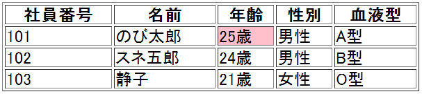
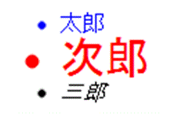
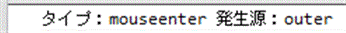
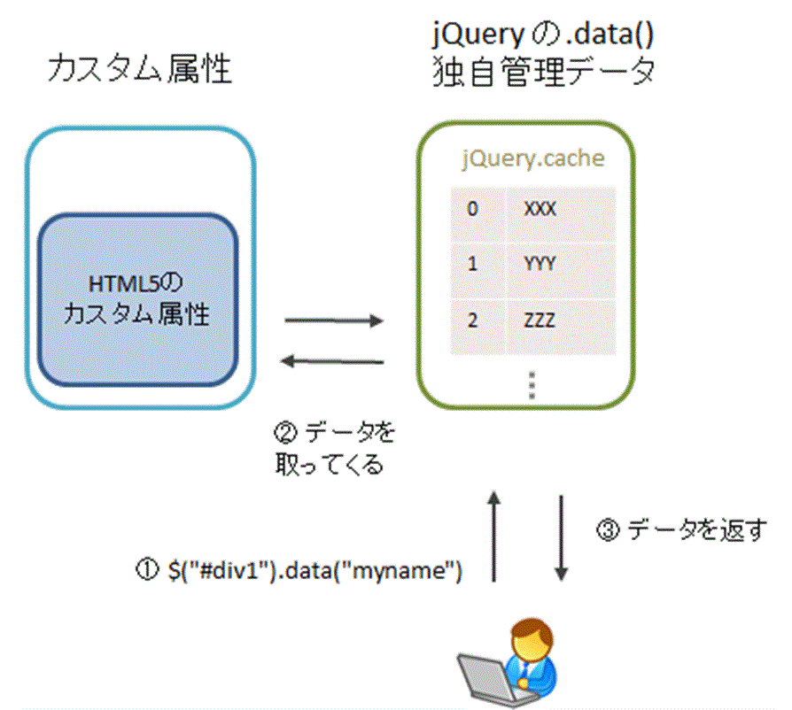

| jQuery入門道場 | |
| 白岩登 | |
| Fendora (2014) | |
まえがき
本書をお買い上げいただき、誠にありがとうございます。本文中に紹介する実際のコード、サンプルページ、その他本書に関する情報は、下記のURLをご覧ください。
http://jquery-master.net/
本書中のコード（プログラム）は、各々のプログラムにおいて利用していただいて構いません。但し、販売目的やアフィリエイト目的などでコードのかなりの部分を利用する場合は、筆者への許可が必要になります。
なお、スマホなどでお読みで本書の画像が小さいと感じる場合、ダブルタップすれば拡大表示されると思います。
始めに
まず始めに
本書は、jQueryの基本を学び、そして中級レベルまで行けるように執筆しました。jQueryは全くの初心者の方や更にステップアップされたい方を対象としています。 当サイトを読み進めていくに当たって、以下の基本的な知識が必要になります。
- HTML
- CSS
- JavaScript
深い知識までは必要ありませんが、それなりには理解している必要があります。jQueryは簡単とは言え、その根底ではJavaScriptという言語を使っています。JavaScriptの知識が全く無い方は、まずは、JavaScriptの入門書から読まれることをお勧めします。
また、FirefoxのアドオンのFirebugやChromeで標準で備わっているデベロッパーツール（「F12」を押すと表示）も使えるようにして下さい。変数が格納する情報を出力する「コンソール」と呼ばれるものが必要になります。下記で簡単に導入方法を説明します。
サンプルについて
所々にサンプルへのリンクがあります。ブラウザで開けば動作しますが、マウスを必要とするサンプルやFirebugやChromeデベロッパーツールなどが必要になるサンプルでは、スマートフォンでは、確認ができません。必要に応じてPCでご確認下さい。
本書のバージョンについて
本書は必要が生じたら、適宜改定を行っていきます。バージョン情報は、パソコンのソフトなどに見られるように「1.x」「1.xx.yy」などのように表記して行きます。細かい修正時は、yyの部分をアップさせ、新しい情報の追加など行った際は、xxの部分をアップさせます。全体的に関わる修正は、最初の数字の部分を1→2→3などのようにアップさせます。改訂履歴は、巻末の改訂履歴をご覧ください。また、本書のKindle販売ページにも記載しておきます。
なお、バージョンアップは、現状では、キンドルのサポートに本書のタイトルとASIN番号（B00HE4R9H2）を記載して、改訂版を取得したい旨をメールすると、改訂版に更新されるそうです。別途の費用は発生しません。旧版で付けたメモやハイライトは消えてしまうそうです。（将来的には、もう少しバージョンアップしやすくなるだろうと思われます）
予備知識の確認
HTML、CSS、JavaScriptについて、少しだけ確認と補足説明をしておきます。
JavaScriptの必要知識
最低限、以下のような事が分かっている必要があります。
- 変数について
- 配列について
- if文などの分岐条件
- データの型について（文字列型、数値型...など）
- 関数について
- 演算子について（+ - > < =...など）
- forなどの繰り返し文
- オブジェクトの基本的知識
大体以上が分かっていれば大丈夫です。オブジェクトに関する深い知識は必要ありませんが、次のようなキー（名前）と値からなるオブジェクトは、理解できる必要があります。
varperson = {
name:"太郎",
age:"35",
gender:"男性"
};
このような形式は、jQueryでは、各種関数（メソッド）を呼び出す際に、1つの引数で多数の設定情報を渡すことができますので、頻繁に利用されています。例えば、以下のようになります。
$('#night').css({
'background-color':'pink',
'font-weight':'bold',
color:'blue'
});
ちなみにこの形式は、次の様な名前で表現されることが多いです。（options、config、settings、object、map）
HTMLのツリー構造
HTMLのツリー構造について、サッと用語を確認しておきます。
次のようなHTML文書があるとします。
<html>
<head>
<title>HTMLのツリー構造</title>
</head>
<body>
<h1>ツリー構造とは？</h1>
<p>HTMLの<strong>階層構造</strong>を示します</p>
</body>
</html>この時、これは、次のようなツリー構造に表現できます。

家系図の場合と同じですが、次の用語を確認しておきましょう。
- 先祖
- ある要素よりも上の階層に位置する要素を指します。例えば、htmlは、全ての要素から見て先祖です。また、bodyは、h1、p、strong全てから見て、先祖です。
- 子孫
- 先祖とは逆に、ある要素よりも下の階層に位置する要素を指します。例えば、htmlから見ると、他全ての要素は、子孫です。また、bodyから見ると、h1、p、strongが子孫に当たります。
- 親
- 1階層だけ上の要素が親要素になります。例えば、head、bodyから見て、htmlは、親です。また、h1、pから見て、bodyは親です。
- 子
- 親とは逆に、1階層だけ下の要素が子になります。例えば、htmlから見て、head、bodyは、子です。また、bodyから見て、h1、pが子です。
- 兄弟（姉妹）
- 同じ親を持つ要素同士が兄弟（姉妹）となります。例えば、headとbodyは、兄弟です。また、h1とpも兄弟です。
Firebug、Chromeデベロッパーツール
jQuery（JavaScript）の開発をする際は、FirefoxのFirebugやChromeのデベロッパーツールは、必須となります。ここでは導入方法をごく簡単に説明しておきます。
Firefoxユーザーの方
まず、Firebugは、Firefoxのアドオンとして存在しますので、「Firebug」で検索して、このアドオンをインストールして下さい。インストール後、Firebugを有効にします。Firebugは、F12を押すと、表示・非表示を切り替えることができます。左上の「コンソール」と書かれたタブを主に使います。
Chromeユーザーの方
Chromeでは、標準でデベロッパーツールが入っています。F12を押すと、表示・非表示を切り替えることができます。右上の「Console」と書かれたタブを主に使います。
IEユーザーの方
IE9～にも開発者向けのツールがあります。F12を押すと、表示・非表示を切り替えることができます。左上の「コンソール」と書かれたタブを主に使います。
コンソールの使い方
JavaScriptからは、例えば以下のようにして、変数などに格納されている情報を確認することができます。
varperson = {
name:"太郎",
age:"35",
gender:"男性"
};
console.log(person);
すると、以下のような情報が、コンソールに出力されます。
jQueryで開発する際には、必須のツールになりますので、是非ご活用下さい。
jQueryとは？
jQueryとは、John Resig（ジョン・レッシグ）氏によって開発／公開されたJavaScript用のライブラリです。2006年8月に最初のバージョンをリリースして以来、着実にバージョンアップを重ね、2016年6月時点での最新版は、1系はVer.1.12.4、2系は、Ver.2.2.4です。 ライセンスは、MIT Licenseとなっており、ライブラリの著作権表示を消さなければ、商用・非商用を問わず、誰でも自由に利用することができます。jQueryは、比較的に後発に登場したJavaScript用ライブラリですが、今では断トツの人気を博しています。
jQueryには、jQuery本体（jQuery Core）とjQuery公式プラグインのjQuery UIが存在します。また、スマートフォン用のjQuery Mobileも存在します。更にjQueryのプラグインは、公式のもの以外にも世界中の開発者により無数のプラグインが公開されています。本書においては、jQuery本体の解説を行なっていきます。
jQueryの便利さ
jQueryのようなJavaScript用ライブラリを使わない場合、自分で生の（素の）JavaScriptで記述し、更に各ブラウザごとの違いも自分で対応させなければ行けません（どちらも煩雑な作業を伴います）。jQueryを使えば、主要なブラウザに、簡単な方法で対応させることができます。特に、現在のVer.1系の最新版でもIE6にも対応している点は見逃せません。
例えば、jQueryを使わないで現在チェックされているラジオボタンの値を取得する場合、大体8行位はプログラムが必要になります。 これが、jQueryを使うと、わずか1行で無理なく書けます。
<form>
<label><inputtype="radio"name="fruit"value="リンゴ"checked> リンゴ</label>
<label><inputtype="radio"name="fruit"value="いちご"> いちご</label>
<label><inputtype="radio"name="fruit"value="みかん"> みかん</label>
<form>jQueryを使った場合は、次の1行で済みます。
varval =$('[name="fruit"]:checked').val();
上記valの中にチェックされている値が格納されます。（ここでは、詳しい説明は省略させていただきます）
バージョンについて
2016年6月時点での最新版は、1系はVer.1.12.4、2系は、Ver.2.2.4となっており、Ver.2系は、IE6～8をサポートしていません。Ver.1系と2系は、サポートするブラウザが異なるだけで、API（＝使い方）自体は同じです。また、1系と2系はそれぞれ、1.10←→2.0、1.11←→2.1、1.12←→2.2と足並みを揃えてリリースされ、APIがそれぞれで対応しています。
そして、同月にjQuery Ver.3.0もリリースされました。Ver.3系は、2系と同様にIEは9以降のサポートとなります。そして、Ver.3系では、1系や2系の最新版とは、API（＝使い方）に幾らか変更が生じています。また今後は、1系、2系は、1.12.xx、2.2.xxが最後と版となり、一定期間のバグ修正のみが行われます。
jQueryのバージョンは、バグなどの細かい修正時は、例えば1.xx.yyとある時、最後のyyの部分が、アップして行きます（例：1.9.0 → 1.9.1）。 そして、新機能の追加やAPIの仕様変更などがあった際は、xxの部分がアップしていきます（例：1.9.2 → 1.10.0）。
jQueryのバージョンは、その時点における最新版を使うのが理想です。しかし、Ver.1.9ではAPIが整理されて多くの機能（関数など）が削除され、これにより今まで（Ver.1.8まで）利用できていた既存のコード（プログラム）が動かなくなるという事もありました。それも今では、大分落ち着いてきたとは思います。 また、jQuery3系でもAPIに幾らか変更が生じますが、Ver.1.9の時とは異なり、多くの人には影響は与えない、とjQueryチームは述べています。では、自分は何系のどのバージョンを使えば良いか、簡単にまとめますと、
- 1系の最新版 → IE6～IE8もサポートしたい方
- 2系の最新版 → IEは9以降で良いが、既存のプログラムとの互換性を重視したい方
- 3系の最新版 → IEは9以降で良く、且つ、最新機能そして最新の仕様で行きたい方
と言えると思います。もちろん、1系は1系でも更に古いプラグイン等との互換性を重視されたい方は、Ver.1.8の最新版を使うという選択肢もあることでしょう。ちなみに、Ver.1.9→1.12 及び Ver.2.0→2.2へのバージョンの変化は、ちょっとした改良などもありましたが、これと言って気にしなくても良いレベルです。
なお、本書では、Ver.1.12.4を使って話を進めていきますが、最低でもVer.1.7以上を想定した上での解説となります。また、jQuery 3.0が、1系、2系と異なる箇所で大切な所は、随時解説して行きます。
jQueryを使ってみる
それでは、実際にjQueryをダウンロードして使ってみましょう。jQueryは、本家サイトに行き、「Download jQuery」とある大きなボタンを押します。
すると、ダウンロード画面に飛びます。画面の「Download the compressed, production jQuery 1.12.4」を右クリックして、表示されるメニューから「名前を付けて保存」などを選択して、取得＆保存します。（その時の最新版をダウンロードして下さい）
「compressed, production」とあるのは、中身が縮小化されているので、ファイルの中を見ても何だか分かりません。一方、「Uncompressed, development」の方は、そのような処理は行っていないため、jQueryのソースを読むことが可能です。
jQueryのソースを読む予定が無ければ、「compressed, production」の方が軽いので、こちらを選択＆利用します。jquery-1.12.4.min.jsというようなファイル名でダウンロードできたと思いますので、後はこのファイルをHTMLで読みこめば準備OKです。 実際に読み込んだ形は、以下のようになります。（パスは、適宜編集して下さい）
<!DOCTYPE html>
<htmllang="ja">
<head>
<metacharset="utf-8">
<title>jQueryのテスト</title>
<scriptsrc="js/jquery-1.12.4.min.js"></script>
</head>
<body>
</body>
</html>以上で完了です。以後、jQueryを使ったプログラムを書く場合、このjQueryの読み込みを行った後に記載していきます。jQueryを読み込む前に記載しても、jQueryを使うことはできません。
CDNを使ってjQueryを読み込む
さて、ここでもう1つCDNを使ってjQueryを読み込む方法を紹介しましょう。CDNとは、Contents Delivery Networkの略で、Webコンテンツをインターネット経由で配信するために最適化されたネットワークのことです。サーバ側での圧縮転送（gzip）機能に対応していたり、また、ユーザーが過去に他のサイトで同じCDNのURLからファイルを取得していれば、キャッシュ効果も期待できます。また、自分のサーバにjQueryを置く必要がなく、簡単に利用することができます。jQueryでは、幾つかのCDNが利用できますが、ここではGoogleが提供しているCDNで見ていきましょう。例えば、次のように読み込みます。
// バージョンは、適宜置き換えて下さい。
// その1
<scriptsrc="http://ajax.googleapis.com/ajax/libs/jquery/1.12.4/jquery.min.js"></script>
// その2
<scriptsrc="https://ajax.googleapis.com/ajax/libs/jquery/1.12.4/jquery.min.js"></script>
もしページが、非SSLの場合は、その1でOKです。SSLのページを作成する場合は、jQueryの読み込みがSSLに対応していないとブラウザが警告などを表示したりするため、その2を指定します。常時SSLというのが昨今のWEBの流れですので、予めその2で指定しておくのもいいかも知れません。
jQueryの基本
このページでは、jQueryの基本について学びます。しかし、基本とはなっていますが、仕組みや概念の説明のため、他の「セレクター」などの章に比べると、難しい部分もあると思います。ですが、一通り読み進めて下さい。中でも大事な部分は、jQueryを書く時は、
jQuery(function ($) {
// この中に処理を書く
});
上記の中に書いていくという事をしっかり覚えておいて下さい。
なお、本書では、これはjQueryのお決まりみたいなものなので、これ以降は、基本的にこの記述自体は書かずに、その中身部分のみを記載してきます。
jQueryの基本サンプル
jQueryの主な（基本的な）機能は、HTMLとCSSを操作するためのものです。操作対象とするHTMLを選択する時は、お馴染みのCSSのセレクター構文がそのまま使えます。そして、CSS等を操作するために、jQueryのメソッドを使えばいいのです。 まずは、サンプルを見てみましょう。
<!DOCTYPE html>
<htmllang="ja">
<head>
<metacharset="utf-8">
<title>jQueryのテスト</title>
<scriptsrc="jsjquery-1.12.4.min.js"></script>
<script>
jQuery(function ($) {
$("#color_div").css("border","1px solid red");
});
</script>
</head>
<body>
<divid="color_div">ここのDIVの枠線をjQueryで変更します</div>
</body>
</html>実行結果
jQueryは、$(...) 又はjQuery(...) という形で使用していきます。$は、1文字ですが、これが変数になっています。（少し異様な気もしますが、JavaScriptでは、$という変数名が付けられます）そして、この$は、jQueryのエイリアス（別名）となります。基本的にはどちらを使っても大丈夫です。
上記を解説しますと、まず、
jQuery(function ($) {
});
の部分は、後ほど解説するとして、CSSの設定を変更しているのは、
$("#color_div").css("border","1px solid green");
の部分です。
まず、CSSでお馴染みのセレクタでHTMLのdiv要素を選択します。
続けてその取得したdiv要素に対し、jQueryメソッドの.css("", "")を適用して、CSSを設定しています。
$("セレクター").css("CSSのプロパティ", "CSSの値");
という形になっています。（後の章で、改めて詳しく解説します）
では、
jQuery(function ($) {
});
の部分は、何でしょうか？
これは、JavaScriptは上から下に順に解釈され実行されて行きますが、この $("#color_div") 部分が登場する時点では、まだ該当のHTML（#color_div）が登場してないため、正常に処理を行うことができません。本来はブラウザのHTMLの読み込みが完了した時点又は操作対象の要素が登場し終えた時点で、この処理を書く必要があります。ですが、それらの完了や登場を待たずしても処理を記述したいのが通常のケースで、それを実現する為に、一連の作業をこのjQuery(function ($) {.....});の中に書き、処理を登録しておくのです。そうする事で、HTMLの読み込みが完了した時点で jQuery(function ($) {.....}); の中に書いた一連の作業が実行されます。実際、どういう事か下にまとめてみました。
<script>
// この書き方は、#color_divが、まだ登場していないのでアウト！
$("#color_div").css("xxx","xxx");
</script>
<divid="color_div">...</div>
<script>
// これならOK
jQuery(function ($) {
$("#color_div").css("xxx","xxx");
});
</script>
<divid="color_div">...</div>
<divid="color_div">...</div>
<script>
// これもOK
jQuery(function ($) {
$("#color_div").css("xxx","xxx");
});
</script><divid="color_div">...</div>
<script>
// jQuery(function ($) {.....});で囲っていないが、
// #color_divが登場した後なので、OK
$("#color_div").css("xxx","xxx");
</script>jQueryは、HTMLを操作するのが基本の作業であるため、jQueryを書く時には、jQuery(function ($) {.....});で囲むのが基本になります。
少し慣れてくると、jQuery(function ($) {.....});の中に書かなくてもドキュメントの下部（body終了タグの直前など）であれば、直接書けることが分かってきますが、やはり基本的には、jQuery(function ($) {.....});の中に処理を書くと覚えておきましょう。このjQuery(function ($) {.....}); については、下でまた改めて見ます。
$ 又はjQueryの基本的な使い方
$ 又はjQueryは、まず使う形式で大きく2つに分けられます。次の2つになります。
- $(xxx) の形
- $.xxx() の形
1つ目の形がjQueryの醍醐味になります。本書でもこちらを集中的に見ていきます。一方、2つ目の書き方は、jQueryでは、ユーティリティ関数などと呼ばれています。汎用的に使えるツール群になっています。1つ目の形は、xxxの部分に何を渡すかによって、更に幾つかに分類することができます。本書では、下記の4つに分類しています。ユーティリティ関数については、ここでは説明を省略して、章を改めてまた見ます。
| 呼び出し方 | 役割 |
|---|---|
| $("セレクター文字列") | セレクターとしての$() |
| $(関数) | ドキュメント構築後に処理したい作業の登録用としてのjQuery() |
| $("HTML文字列") | DOM要素の生成 |
| $(DOM要素 又は jQueryオブジェクト) | セレクター的役割 |
(1) $("セレクター文字列") ... セレクターとしての$()
先ほど見ましたが、$("セレクター") という形で、HTMLの要素を選択できます。そして、その選択した要素に対して各種操作をしていきます。セレクターには、CSSのセレクターをそのまま利用できます。CSS3で定義されているCSSも利用することができます。また、jQueryが独自に実装しているセレクタも一部あります。
例えば、以下のようなセレクターなどがあります。
$("p a")
$("#name")
$("#addr1, #addr2")
$("a[href$='pdf']")
1つ目は、p要素の中にあるa要素（リンク）を全て選択します。
2つ目は、id属性がnameの要素を選択します。
3つ目は、id属性がaddr1という要素とaddr2という要素を選択します。（カンマ区切りで複数選択しています）
4つ目は、リンク先がpdfで終わるa要素を全て選択しています。
jQueryは、選択した要素を記憶し、そしてその（それらの）要素に対し各種操作が行えるようになります。このセレクター機能は、jQueryでは常時使用することになります。次の章で改めて見ていきます。
(2) $(関数) ... ドキュメント構築後に処理したい作業の登録用としてのjQuery()
まさに上記で見た
jQuery(function ($) {
});
です。上記に書いたように、要素が出現する前に何か操作をしようとしても操作できないため、ドキュメントが構築された後に処理したい作業を登録する為のものです。 実は他にも書き方は存在します。以下のようなものです。（意味する内容は同じです）
// パターン2
$(document).ready(function($){
// 処理をここに書く
});
// パターン3
$(function($){
// 処理をここに書く
});
パターン2は、「ドキュメント（document）が構築された後（ready）に、functionの中を実行して下さい」と読めます。 パターン3は、パターン2が更にシンプルになった版です。ですので、パターン3を使ったほうが、よりすっきり書けます。
と、幾つかのパターンがありますが、私のお勧めは一番最初に書いた書き方です。 それは何故かと言うと、最初の書き方であれば、他のJavaScript用ライブラリとの$の変数名の衝突を抑えることができるからです。 例えばprototype.jsと言うかつて有名だったライブラリがありますが、このライブラリも$という変数名を使用します。自分一人だけでWEBサイトを管理していれば良いのですが、通常は複数の人間が関わることが多いと思います。もし新人さんが、prototype.js用のプラグインを使うために、prototype.jsを加えたとすると、$という変数名がバッティングしてしまいます。そして、パターン2、3で書いていたものが、突然動かなくなります。 安全性を高めるためにも、
jQuery(function ($) {
});
の書き方をオススメします。少し補足しますと、上記のfunction ($) {.....}の中では、$はJavaScriptで言う所のローカル変数となる為、
$ ="hoge";// ここで$を上書きしても
jQuery(function ($) {
// この中では、安全に$を使うことができます。
$("#color_div").css("border","1px solid red");
// なのでこの中では、jQueryと書くより、$と書いたほうが楽でいい
});
上記のように、functionの中では、jQueryのエイリアスの$を使い続ける事ができます。但し、function ($) の $ を書き忘れないで下さい。これを書き忘れると、上記の記述は動作しなくなります。
更に追加情報として、パターン2の書き方は、jQuery Ver.3.0では「将来廃止予定」に位置づけられています。
さて、「ドキュメント構築後に処理したい...」と書きましたが、JavaScriptなどのプログラムから操作できるようにするための文書オブジェクトモデルをDOM（Document Object Model）と呼んでいます。このDOMが構築された後に、jQuery(function ($) {.....});で登録した作業が実行されます。
（DOMという用語が馴染めない場合は、HTMLと読み替えて下さい）
jQueryが一般化する前には、以下のような書き方も多く存在しました。
window.onload =function() {
// 処理をここに書く
};
この書き方とjQueryの書き方とでは何か異なるのでしょうか？ まず、window.onloadの場合は、ドキュメントの構築のみならずに、他の外部ファイルがあった場合などは、それらも読み込みが完了していなければなりません。画像の場合は、画像をダウンロードして表示されていなければなりません。これらが全て終わった後に処理が実行されるため、少し時間がかかります。JavaScriptからHTMLを操作する為には、そこまで待つ必要はありません。その為、jQueryでは、DOMが構築された後に実行されるようになっています。
また、window.onloadの場合、その性質上1度だけしか書くことができません。2回書くと、先に書いたonloadの変数（プロパティ）が上書きされてしまいます。いつ誰がどこで上書きしてしまうか分からないので、この書き方は辞めましょう。jQueryの書き方の場合、何回でも登録することができ、基本的に登録した順番に処理が実行されていきます。
実は、画像などの読み込み完了する前に処理が実行されるというのは、何かと喜ばしいことですが、逆に、画像などの読み込みが完了してから処理を実行したい、というケースもあります。それについては、イベントの章で改めて見ていきます。
(3) $("HTML文字列") ... DOM要素の生成
$("HTMLタグ") の形を使い、DOM要素（HTMLの要素）を簡単に作ることができます。例えば、次のようなHTMLがあるとします。
<ulid="family">
<li>太郎</li>
<li>次郎</li>
</ul>ULの最後に<li>三郎</li>という要素を追加したいとします。この場合、こうするだけで完成です。
jQuery(function ($) {
$("<li>三郎</li>").appendTo("#family");
});
これで、こうなります。
<ulid="family">
<li>太郎</li>
<li>次郎</li>
<li>三郎</li>
</ul>.appendTo()は、別の章で見ますが、$("<li>三郎</li>")で生成したDOM要素をid="family"のUL要素に追加しています。
このDOM要素の生成機能は、もう少し先でまた説明します。
(4) $(DOM要素 又は jQueryオブジェクト) ... セレクター的役割
DOM要素を$()に渡すことにより、それをjQueryオブジェクトとすることができます。これは多くの場合、$(this) という形で使われますが、この形については後の章で詳しく解説します。DOM要素以外にも、documentやwindowオブジェクトを渡すことができます。
（下記サンプルの document.getElementById(xxx); は、jQueryではなくJavaScript側の機能で、idを指定してDOM要素を取得します）
// eleは、DOM要素。div1は、$("#div1") と同じこと
varele =document.getElementById("div1");
vardiv1 =$(ele);
varw1 =$(window).width();// ブラウザの横幅取得
varw2 =$(document).width();// HTMLドキュメントの横幅取得
// 後の章でこの形で登場します
$(this)
jQueryオブジェクトとは？
jQueryオブジェクト
$(セレクター)の形で呼び出すと、jQueryオブジェクトと呼ばれるものが返されます。jQueryの基本で、次のように書きました。
$("#color_div").css("border","1px solid red");
ここでは、$("#color_div") で呼び出した結果、jQueryオブジェクトが返ってきて、その返ってきたjQueryオブジェクトに対して、CSSを変更する操作を行なっています。 これは分解して、次のように書くこともできます。
varcolor_div =$("#color_div");// 一旦jQueryオブジェクトを変数に代入してから
color_div.css("border","1px solid red");// 操作する
但しこのように書く必要性が無ければ、あえて2行に分ける必要はありません。
このjQueryオブジェクトとは、選択した要素一式を（配列の形で）含んでいて、かつ、jQueryの機能となるメソッド（関数）を備えたオブジェクトのことを言います。ちょっと話が難しくなりました。 視覚的に分かるように、このjQueryオブジェクトがどういうものかをFirebugを使って見てみましょう。次のHTMLがあるとします。
<ul>
<li>リンゴ</li>
<li>いちご</li>
<li>みかん</li>
</ul>まずは、jQueryを使わずに、生のJavaScriptでLI要素を取得した場合です。
varli =document.getElementsByTagName("li");
console.log(li);
この結果は、以下のようになります。
LI要素が3つ取得されているのが分かります。
次に、jQueryの場合です。
varli =$("li");
console.log(li)
この結果は、以下のようになります。
3つのLI要素も取得されていますが、それ以外にもjQueryで使えるメソッドも一緒に取得されています（緑枠の部分。実際はもっとあるのですが、画面の都合上、一部だけの表示になっています） これがまさにjQueryオブジェクトです。言うなれば、jQueryの武器（メソッド）で武装したDOM要素（HTML要素）が、まさにjQueryオブジェクトと言えます。
書籍によっては、要素がjQueryの機能によって包まれるイメージになるため、プログラミング用語に倣い、jQueryラッパー（jQuery wrapper）などと呼ぶこともあります。 用語の整理がてら、上記を別の図で確認してみましょう。
jQueryでは、何か操作を行う際、基本的に現在選択対象になっている要素の全てに対して処理を行います。 例えば、先の場合において、
$("li").css("color","red");
とすると、LI要素全てに対して、文字色を赤に設定します。しかし、例えばCSSの値を設定するのではなく、値を取得する場合は、選択した要素の最初の要素の値を取得します。
varcolor =$(".fruit").css("background-color");
この場合、クラス名がfruitの要素の内、最初の要素の背景色を取得します。
メソッドチェーン
上記の説明から続きますが、$(セレクター)を呼び出すと、jQueryオブジェクトが返されます。その返されたjQueryオブジェクトに対して操作を書くことができます。
$("#color_div").css("border","1px solid red");
しかし、実は何かの操作を行った後も、（多くのメソッドでは）操作を行う前と同じjQueryオブジェクトを返します。つまり、例えば次のように操作を繋げて書くことができます。
$("#color_div").css("border","1px solid red").css("color","red");
jQueryオブジェクトが返ってくる限り、幾つでも繋げて書くことができます。これは、鎖の如くメソッドが繋がることから、メソッドチェーンと呼ばれています。
上記では、.css()メソッドのみしか登場していませんが、実際は各種メソッドを繋げて書くことができます。 ただ、先にも見たように、何かを操作するのではなく、例えばある要素の長さや色などを取得する場合は、その長さや色が返ってくるのであり、jQueryオブジェクトは返ってきませんので、繋げて書くことはできません。
DOM要素の生成
$ 又はjQueryの基本的な使い方で見たDOM要素の生成機能を見ていきます。とは言え、便宜上この場所に載せていますが、まだ説明していないjQueryのメソッドが出てきますので、一通り読み終えてから、再度このページに戻って来た方が分かりやすいと思います。
DOM要素の生成
「jQueryの基本」で、DOM要素の生成の説明で、次のようなサンプルを見ました。
jQuery(function ($) {
$("<li>三郎</li>").appendTo("#family");
});
$("<li>三郎</li>") のタグ部分の <li>三郎</li> は、セレクターと間違われないようタグから開始します。そうすることで、DOM要素を生成することができます。そして、その生成されたDOM要素を選択しているjQueryオブジェクトが返されます。 しかし、実際の所、生成されるだけでどこかに自動で挿入される訳ではありません。まだ、宙ぶらりんな状態です。その為、appendToなどのメソッドを使って、HTMLのどこかに入れ込んであげます。
上記のようにHTMLの中身を含めることもできますが、下記のように単純にタグだけの指定もできます。
jQuery(function ($) {
// 下記の書き方、どれでも可能
$("<a>")
$("<a></a>")
$("<img>")
$("<img />")
// しかし本家サイトでは、互換性の為、中身を取るタグについては、
// 終了タグを付けることを推奨している。
// 中身を取らないタグはどちらでも、OKとしている。下記は推奨形式。
$("<a></a>")
$("<img>")
$("<img />")
});
$("html", attributes )
中級者以上向け機能ですが、第2引数にオブジェクトを指定すると、そのオブジェクトのプロパティは、HTMLの属性として設定されます。
jQuery(function ($) {
$("<a></a>", {
href:"abc.html",
target:"_blank",
"class":"myClass"
});
});
上記を見ると、classのキーだけは、クォーテーションで囲まれていますが、これはclassがJavaScriptの予約語の為、このようにする必要があります。 第2引数を指定するときは、第1引数は、属性など書かれていないシンプルなタグに留めないと行けません。欲張って次のような書き方をすることはできません。
jQuery(function ($) {
$("<a href='bar.html'></a>", {
target:"_blank"
});
});
また、属性のみに限らず、各種イベントタイプやval, css, html, text, data, width, height, offsetなどのjQueryメソッドをオブジェクトに含めることができます。 更に言えば、Ver.1.8からは、あらゆるjQueryメソッドを指定することができます。
jQuery(function ($) {
$("<div></div>", {
width:100,
height:100,
css: {border:"5px solid gray"},
addClass:"my-div",
on: {
click:function(event) {
// イベント設定
}
}
});
});
もっとも、あまり派手にやると訳が分からなくなりますので、第2引数の使用はある程度限定して、イベントの付与などは、別途生成したjQueryオブジェクトに対して行えば良いでしょう。
2章 セレクター
この章で見る主な内容です。
基本的なセレクター
jQueryでは、CSSでお馴染みのセレクターを使って、要素を選択（取得）します。ここでは、以下の基本的なCSSセレクターを見て行きましょう。
要素（タグ）セレクター
要素（タグ）名を元に対象要素を選択します。要素名は、括弧（<>）は付けずに、そのまま書きます。
例えば、
$("h2").css("color","red");
こうすることで、全てのH2要素の文字色を赤色に設定します。
クラスセレクター
特定のクラス名を元に対象要素を選択します。クラス名は、ドットの後に続けて書きます。
例えば、
<ul>
<liclass="man">太郎</li>
<liclass="man">次郎</li>
<liclass="woman">花子</li>
</ul>とHTMLがある時に、
$(".man").css("color","red");
このようにすると、次の結果になります。
- 太郎
- 次郎
- 花子
IDセレクター
特定のIDを元に対象要素を選択します。IDは、#の後に続けて書きます。IDは、1ページにつき1つのみ存在すべきものです。
例えば、
<ul>
<liid="taro">太郎</li>
<li>次郎</li>
<li>花子</li>
</ul>とHTMLがある時に、
$("#taro").css("color","red");
このようにすると、次の結果になります。
- 太郎
- 次郎
- 花子
グループセレクター
複数のセレクターを半角カンマで繋げて、同時に指定することができます。 例えば、H1～H3までの要素全てを選択する場合は、
$("h1, h2, h3").css("color","red");
こうなります。半角カンマの前後の空白はあっても無くても大丈夫です。上記は、要素セレクターのみで組み合わせましたが、下記のように他のセレクター同士でも可能です。
$("h1, .man, #taro").css("color","red");
ユニバーサルセレクター
全ての要素を選択するためのセレクターとしてユニバーサルセレクターがあります。アスタリスクで表現します。（分かりやすく言えば、ワイルドカードですね）
$("*").css("color","red");
$("#important *").css("color","red");
2行目のように子孫セレクター（後ほど見ます）と組み合わせることもできます。この場合は、IDがimportantの要素の中にあるタグ全てに対して、文字色を赤に設定します。
属性セレクター
要素の属性を元に選択するセレクターです。通常は、要素名に続けて書くことが多いですが、クラス名でも大丈夫です。
サンプルを見てみましょう。
<ahref=""target="_blank">ピンクです</a>
<ahref=""target="_self">青です</a>
<ahref=""target="_parent">赤です</a>
<ahref=""target="_top"class="fruit">緑です</a>
$("a[target='_blank']").css("color","pink");
$("a[target='_self']").css("color","blue");
$("a[target=_parent]").css("color","red");
$(".fruit[target=_top]").css("color","green");
4行目にあるように、クラスセレクターから始めてもOKです。
それでは、1つ1つ属性セレクターを見てみましょう。
[属性名]
ある特定の属性名を含む要素を絞り込みます。
$("img[title]")
この場合、title属性を持つimg要素全てを選択します。
[属性名 = 値]
値と完全一致した属性を持つ要素を絞り込みます。
$("a[target='_blank']")
target属性が_blankのリンクを全て選択します。" と ' のクォーテーションの順番は、正しく入れ子になっていれば変わってもOKです。
また、値が1語の単語の時は、値を括るクォーテーションを取ってもOKです。（[target=_blank]）
[属性名 != 値]
値と完全一致することのない属性を絞り込みます。
$("a[target!='_blank']")
target属性が_blankでないリンクを全て選択します。この記述は、後に出てくる :not([attr="value"]) と等価です。
なお、元々target属性が指定されてないリンクは、デフォルトで_blankではありませんので、それらも選択対象になります。 また、このセレクターは、CSSの仕様には無く、jQueryが独自に拡張しているものです。
[属性名 *= 値]
値と部分一致した属性を持つ要素を絞り込みます。
<inputname="cat">
<inputname="cat-5">
<inputname="catman">
<inputname="dog cat horse">
$("input[name*='cat']")
このセレクターの場合、上記のinput全てにヒットするのでご注意下さい。
（もし単語ベースでの一致にする場合は、この次のセレクターを使います）
[属性名 ~= 値]
上記の *= と少し似ていますが、こちらは、スペースで区切られた単語ベースでの一致判定となります。
<inputname="cat">
<inputname="cat-5">
<inputname="catman">
<inputname="dog cat horse">
$("input[name~='cat']")
この場合は、1行目と4行目のinputにヒットします。
[属性名 ^= 値]
値と前方一致した属性を持つ要素を絞り込みます。
$("a[href^='http://']")
$("a[href^='http://'], a[href^='https://']")
上記の2つ共、外部リンクのみを選択します。（但し、内部リンクが全て相対パスで記述していると想定）
HTTPSのサイトもあることも考えると、2番目の書き方がよりいいでしょう。
[属性名 $= 値]
値と後方一致した属性を持つ要素を絞り込みます。
$("a[href$='.pdf']")
PDFへのリンクを張ってあるリンクをこれで選択できます。
[属性名 = 値][属性名 = 値]
上記で出てきた属性セレクターを組み合わせて、全ての条件に一致するものだけを選択できます。
$("a[href^='http://'][target='_blank']")
URLが、http://から始まるリンクで、かつ、target属性が_blankになっているリンクを選択します。条件は、幾つでも組み合わせられます。
検索する対象（範囲）を指定する書き方
通常セレクターは、ドキュメントの最上位からセレクターによる検索（マッチング）を行いますが、第2引数を指定して、特定の要素以下に限定することができます。
<ul>
<liid="taro"><span>太郎</span></li>
<li><span>次郎</span></li>
<li><span>花子</span></li>
</ul>とHTMLがある時に、
$("span","#taro").css("color","red");
このように書くと、#taro以下のspan要素のみが選択されます。もっともこの場合、$("#taro span")と最初から書けますが、この書き方が役に立つ場面も多いので、是非覚えておいて下さい。（これは、jQueryの独自仕様です）
階層構造によるセレクター
ここでは、階層構造に基づくjQueryのセレクター（CSSのセレクター）を見て行きましょう。
子孫セレクター
ある要素の中にある要素（全て）を選択する場合に使います。半角スペースで階層構造を分けます。
$("h2 strong")
$("p.intro a")
1番目は、h2要素の中にある全てのstrong要素を選択します。2番目は、クラス名introのついたp要素の中にあるリンク全てを選択します。
子セレクター
ある要素の中にある要素（全て）を選択する場合に使いますが、上記の子孫セレクターと異なり、直下の子供だけが選択対象になります。 大なり記号（>）を使います。
$("body > h2")
このようにある場合、body直下のh2要素のみを選択します。 もしh2を他のdivの中に入れていた場合は、選択対象になりません。
<body>
<h2>ここは対象</h2>
<div>
<h2>ここは対象外</h2>
</div>
</body>この大なり記号（>）、いかにも親と子（大と小）という感じがしますね。
隣接兄弟セレクター（Adjacent Sibling）
隣接している兄弟で、後ろ側にある方が選択対象になります。プラス記号（+）を使います。
兄弟ですので、まず同じ親を共有していなければなりません。また隣接（隣同士）でなければなりません。
例えば、
$("h2 + p")
とある場合、h2のすぐ後に出てくるp要素を選択します。 具体的に見てみましょう。
<h2>宇宙について</h2>
<p>パラグラフ1</p>
<p>パラグラフ2</p>
<p>パラグラフ3</p>
<h2>地球について</h2>
<p>パラグラフ4</p>
<p>パラグラフ5</p>
<p>パラグラフ6</p>
<h2>平和について</h2>
<div>DIVです</div>
<p>パラグラフ7</p>
<p>パラグラフ8</p>
<p>パラグラフ9</p>
$("h2 + p").css("color","red");
実行結果は、次のようになります。「パラグラフ7」は、h2と隣接していなので選択対象外です。
このプラス記号（+）、いかにも、くっついている感がありますね。
一般兄弟セレクター（General Sibling）
隣接兄弟セレクターと似ていますが、こちらは、隣接している必要がありません。後ろ側にあれば選択対象になります（但し、前側は対象外です）。記号は、チルダ（~）を使います。
具体例を見てみましょう。HTMLは、兄弟隣接の時と比べdivの中（12行目）だけを変更しています。
<h2>宇宙について</h2>
<p>パラグラフ1</p>
<p>パラグラフ2</p>
<p>パラグラフ3</p>
<h2>地球について</h2>
<p>パラグラフ4</p>
<p>パラグラフ5</p>
<p>パラグラフ6</p>
<h2>平和について</h2>
<div><p>中にあるパラグラフ</p></div>
<p>パラグラフ7</p>
<p>パラグラフ8</p>
<p>パラグラフ9</p>
$("h2 ~ p").css("color","red");
実行結果は、次のようになります。ほとんどのパラグラフが赤になっていますが、divの中に入ったパラグラフだけは兄弟ではないので、対象外になっています。
このチルダ記号（~）、多少離れていてもOK感があるように見えます。
ちなみに、一般兄弟と訳しましたが、まだこの日本語訳自体、一般的ではありません。 またちなみに、先の隣接兄弟セレクターは、CSS2で定義されていますが、こちらの一般兄弟セレクターは、CSS3で定義されています。
基本、子要素フィルター
ここでは、フィルターと呼ばれるものを見てみましょう。フィルターとは、既に選択している要素を更に絞り込みを掛けるセレクターに対して使う用語です。
- :first、:first-child
- :last、:last-child
- :nth-child()
- :only-child
- :even、:odd
- :nth-child()、:even、:oddサンプル
- :eq()、:gt()、:lt()
- :not()
- :header
- :animated
少しまとめ
個別のフィルターを見る前に、少しまとめておきましょう。 フィルターには、CSSから来ているのものとjQueryが独自に定義しているものの2つがあります。どちらがどちらと覚える必要は無いものもありますが（:headerや:animatedなど）、中には下記の特徴が影響するため、覚えておいた方がよいものもあります。
CSSからのフィルターは、CSSの仕様に準拠しており、最初の要素を1から数えます。一方、jQuery独自のものは、最初の要素を0から数えます（JavaScriptに準拠しているため）。更に、jQuery独自のものは、選択対象の全体を1つとみなして採番します。
| CSSからのフィルター | jQuery独自に実装 | |
|---|---|---|
| フィルター | :first-child、:last-child :nth-child() :only-child （更にVer.1.9以降は下記のCSS3のフィルターもサポート） :nth-of-type :first-of-type、:last-of-type :nth-last-child、:nth-last-of-type :only-of-type :target、:root :lang（これはCSS2） |
:first、:last even、:odd :eq()、:gt()、:lt() :header :animated |
| 特徴 | 1から数える（CSSに準拠） | 0から数える（JavaScriptに準拠） 全体を1つとしてみなす |
以降、CSS的な話が多く続きます。CSSからのフィルターのVer.1.9から加わったものについては、解説を省略させていただきます（CSSの話になってしまう為）。
:first、:first-child
（いきなり2つのセレクターを見ますが、:first-childは、少し曲者の部分があります）
:firstは、マッチした要素の中から最初の要素だけを選択します。
一方、:first-childは、親要素に対する最初の子要素を全て選択します。
具体的に見てみましょう。
<ul>
<li>太郎</li>
<li>次郎</li>
<li>花子</li>
</ul>
<ul>
<li>リンゴ</li>
<li>いちご</li>
<li>みかん</li>
</ul>$("li:first").css("color","red");
$("li:first-child").css("font-size","2em");
この結果は、以下のようになります。
li:firstの場合は、liでマッチした要素全ての内の最初の要素だけが選択されますので、「太郎」だけが赤文字になります。 一方、li:first-childは、LI要素の中の（その親に対する）最初の子供全てがマッチしますので、「太郎」と「リンゴ」が2倍の大きさのフォントになります。
更に理解を深めたい方は、次のより違いが分かり易い（けど少し難しい）例を見てみましょう。
<body>
<div>始めに</div>
<p>パラグラフ1</p>
<p>パラグラフ2</p>
<p>パラグラフ3</p>
<div>
<p>パラグラフA</p>
<p>パラグラフB</p>
<p>パラグラフC</p>
</div>
</body>$("p:first").css("color","red");
$("p:first-child").css("font-size","2em");
この結果は、以下のようになります。
今回は、p:firstで赤くなったのは、「パラグラフ1」のみです。予想通りです。では、p:first-childは、どうでしょうか？2倍の大きさのフォントになったのは、「パラグラフA」のみです。
「パラグラフ1」もと思いたいところですが、「パラグラフ1」の親のbodyから見ると、「パラグラフ1」は、2番目の子供なのでNGなのです。（1番目は「<div>始めに</div>」の為）
:first-childは、親要素から見て、最初の子供（first-child）でなければならないからです。LI要素の場合は、もっぱらUL又はOL要素の中にあるので分かり易いですが、それ以外の要素で使うとどれが該当するか分かりにくくなります。そもそも親を指定しませんので。first-childは、最初の段落だけ強調したい（orマージンを大きく取りたい）などの場合に使えると思います。
ご存知の方も多いと思いますが、:first-childは、CSS2で定義されています。一方、:firstは、jQueryが独自に拡張したものです。
:last、:last-child
:first, :first-childの「最初」が「最後」に置き換わったバージョンです。 詳しくは、:first, :first-childの方をご覧ください。
:nth-child()
ある特定番目の要素を取得するのに使います。例えば、次のようになります。
- :nth-child(3) →3番目を取得
- :nth-child(even) → 偶数番目を取得
- :nth-child(odd) → 奇数番目を取得
- :nth-child(3n) →3個おきに取得
- :nth-child(3n+1) →3で割った時に1余る番目を取得
nとある部分は、0,1,2,3,4...を掛け算すると解釈して下さい。つまり、、、
3nは、0（3x0）、3（3x1）、6（3x2）、9（3x3）...、番目
3n+1は、1（3x0+1）、4（3x1+1）、7（3x2+1）、10（3x3+1）...、番目
を取得します。
5n+2は、次のようにも捉えられます。要素を5つずつ整列させた時の各行の2番目、と。次のイメージです。
動くサンプルは、「:even、:odd」を見終わった後の次を参照下さい。
:only-child
:only-childは、各親要素が1つだけ子要素を持つ場合に、その子要素を選択します。言うなれば、lonelyな子供だけを選択します。 具体例を見てみましょう。
<ul>
<li>太郎</li>
<li>次郎</li>
<li>花子</li>
</ul>
<ul>
<li>一匹狼</li>
</ul>$("li:only-child").css("color","red");
この結果は、以下のようになります。
テキストノードは、子要素としてはカウントされないため、例えば以下の様なp要素は、:only-childの対象になります。
<div>
<p>パラグラフ</p>
今日の献立
</div>$("p:only-child").css("color","red");
この結果は、以下のようになります。
:even、:odd
セレクターでマッチした要素の中から偶数番目（even）、奇数番目（odd）の要素をフィルターして選択します。 一番最初を0から数えるので、直感とは逆になります。つまり、最初が偶数になります。 具体例を見てみましょう。
<ul>
<li>太郎</li>
<li>次郎</li>
<li>三郎</li>
</ul>
<ul>
<li>マイク</li>
<li>ベル</li>
<li>ナルト</li>
</ul>$("li:even").css("color","blue");
$("li:odd").css("color","red");
この結果は、以下のようになります。

UL要素が2つに分かれていますが、2つでも3つでも関係ありません。セレクターでマッチした要素全体でもって偶数か奇数かの判定になります。
ご覧の通り、「太郎」が、even（偶数）になっています。直感と異なりますのでご注意下さい。
なお、:nth-child()は、1から数えます。詳しくは、:nth-child()をご覧ください。
:nth-child()、:even、:oddサンプル
上記で見た:even、:oddフィルターは、親要素には関係なく、マッチした全体の要素の中において、偶数、奇数を決めます。 一方、:nth-child(even)、:nth-child(odd)は、各親からの順番で数えます。また、:even、:oddフィルターは、JavaScriptに準拠しているため、プログラム言語らしく0から数えますが、:nth-child()は、CSSに準拠しているため（CSS3にて登場）、1から数えます。
確認用のサンプルの「:nth-child(even)」と「:even」ボタンを押し比べてみて、よくよく違いを確かめて下さい。
:eq()、:gt()、:lt()
セレクターでマッチした要素の中から、
- eq(n) ...n番目の要素を選択
- gt(n) ...n番目より大きい（超の）要素を選択
- lt(n) ...n番目より小さい（未満の）要素を選択
します。 一番最初を0から数えるので、直感とは異なります。 具体例を見てみましょう。
<ul>
<li>太郎</li>
<li>次郎</li>
<li>三郎</li>
<li>四郎</li>
<li>五郎</li>
</ul>$("li:eq(2)").css("font-size","2em");
$("li:gt(2)").css("color","red");
$("li:lt(2)").css("color","blue");
この結果は、以下のようになります。
なお、:nth-child()は、1から数えましたね。ところで、ここで1つ問題です。以下のように社員の名前の部分のみピンク色にするjQueryは、どのように記述したら良いでしょうか？少し考えてみてください。
HTMLは、こちらです。
<tablewidth="400"border="1">
<tr>
<th>社員番号</th>
<th>名前</th>
<th>年齢</th>
<th>性別</th>
<th>血液型</th>
</tr>
<tr>
<td>101</td>
<td>のび太郎</td>
<td>25歳</td>
<td>男性</td>
<td>A型</td>
</tr>
<tr>
<td>102</td>
<td>スネ五郎</td>
<td>24歳</td>
<td>男性</td>
<td>O型</td>
</tr>
<tr>
<td>103</td>
<td>静子</td>
<td>21歳</td>
<td>女性</td>
<td>A型</td>
</tr>
</table>例えば、以下のようにすると、下の画像のようになります。
$("td").css("background-color","pink");
これは、普通ですね。（最初の行は、thタグなので、色は付きません）
では、下記のようにするとどうでしょうか？
$("td:eq(2)").css("background-color","pink");
結果は、こうなります。

td全部を最初から数えて（0スタート）、2番目に色が付きました。ただ、目的とはだいぶかけ離れています。
そこで、こうするとどうでしょうか？
$("td:nth-child(2)").css("background-color","pink");
下記のようになります。
これが正解です。td:nth-child(2)は、（親から見て）2番目の子となるtd要素を選択します。:eq()と:nth-child()、もし混乱したら、このサンプルを思い出して下さい。
:not()
:not(selector) の形で、このセレクターにマッチしない要素のみをフィルターして選択します。
セレクターは、どのようなものでも記述できます。
以下は、target属性が、blankでないリンクを選択します。
$("a:not([target!='blank'])")
これと似ているものに、.not()というメソッドがあります。:not()を使って記述が複雑になる場合は、.not()の使用を検討しましょう。
:header
h1, h2, ～h6のヘッダー要素をフィルターして選択します。
:animated
セレクターが実行された時において、アニメーションが動作中のものをフィルターして選択します。
一見役に立たなそうですが、何気にアニメーション処理を書く際に役に立ちます。アニメーションについては、また改めて見ます。
コンテントフィルター
コンテントフィルターは、要素が含んでいるコンテント（中身）に応じて、更に要素を絞り込む時に使います。
:contains()、:has()
:contains(text) の形で、textという文字を含んでいる要素を選択します。
:has(selector) の形で、selectorで指定した要素を含む要素のみを選択します。
具体例で見てみましょう。まずは、:contains(text)の場合から。
<div>太郎</div>
<div>次郎</div>
<div>三郎</div>
<div>花子</div>
$("div:contains('郎')").css("color","red");
この結果は、以下のようになります。
次に、:has()の場合
<div><span>山田</span>太郎</div>
<div>次郎</div>
<div>三郎</div>
<div>花子</div>
$("div:has(span)").css("color","red");
この結果は、以下のようになります。
span要素を含んだdivのみが選択されています。
（spanは、直接の子供に限らず、子孫であれば大丈夫です）
:empty、:parent
:emptyは、何ら子要素を持たない要素を選択します。
:parentは、何かしらの子要素を持つ要素を選択します。つまり、親要素のみが対象になります。
（注）ここでの子要素は、単なるテキスト（テキストノード）も含みます。
:emptyと :parent、とても反対語とは言えない2つですが、機能的にはそれぞれ反対の作用をします。
具体例で見てみましょう。
<tableborder="1">
<tr>
<td>太郎</td>
<td></td>
<td>三郎</td>
</tr>
<tr>
<td></td>
<td>マイク</td>
<td></td>
</tr>
</table>$("td:empty").css("background-color","gray");
$("td:parent").css("background-color","yellow");
この結果は、以下のようになります。
なおこれらとは別に、メソッドの.empty()、.parent()、.parents()というのもあります。
フォーム系フィルター
フォーム系フィルターは、フォーム系の要素をそのタイプや状態で更に絞り込む時に使います。
フォームのタイプでの選択
フォームを構成する要素は、見た目は違っても全てinput要素で、type属性が異なるだけです。（textarea、selectなど一部を除く）
つまり、、、
<inputtype="text"value="">
<inputtype="radio"value="">
<inputtype="checkbox"value="">
これらのtypeごとに選択するためのセレクターです。（:inputと :buttonは、少し異なります）
| セレクター | 対象 | 代替方法 |
|---|---|---|
| :button | 全ての<button>要素と<input type="button">要素 | $("button, input[type='button']") |
| :checkbox | チェックボックス | [type="checkbox"] |
| :file | ファイル選択ボックス | [type="file"] |
| :image | 画像ボタン | [type="image"] |
| :input | 全てのフォーム構成要素（input、textarea、select、button要素） | |
| :password | パスワード入力ボックス | [type="password"] |
| :radio | ラジオボタン | [type="radio"] |
| :reset | リセットボタン | [type="reset"] |
| :submit | 送信ボタン（button要素の扱いはブラウザによって相違有り） | [type="submit"] |
| :text | テキストボックス（<input type="text">） Ver. 1.5.2よりtype="text"の指定が無くても選択します。 |
[type="text"] |
例えば、以下のようになります。
// 例）ラジオボタンを選択して何か処理する
$("input:radio").xxx()
HTML5では、type="tel"を始め、各種入力タイプがありますが、代替方法にあるような書き方で対応できます。また、今回見た:checkboxのような書き方は、jQuery独自であり、今時のブラウザでのパフォーマンス優位性を利用できない（→ querySelectorAll()が使えない）などの理由により、代替方法が推奨されています。
なお、:hiddenについては、少し他と異なるので、下の「表示・非表示でのフィルター」で見てみます。
また、ここで見た:checkboxとすぐ下で見る:checked、単語は似ていますが別物ですのでご注意下さい。
フォームの状態での選択
以下の4つがあります。
| セレクター | 対象 | 使用例 |
|---|---|---|
| :checked | チェックボックス（checkbox）とラジオボタン（radio）のチェックが入っている状態の要素 | $("input:checked") |
| :selected | リストボックス（select＋option）の選択されている状態の要素 | $("select option:selected") |
| :disabled | 利用不可なフォーム要素 | $('input:disabled') |
| :enabled | 利用可能なフォーム要素 | $('input:enabled') |
表示・非表示でのフィルター
要素の表示・非表示でのフィルターです。以下のものがあります。
| セレクター | 対象 |
|---|---|
| :visible | 表示状態の要素 |
| :hidden | 非表示状態の要素 |
ここで表示・非表示とは、その要素が画面上のスペースを取っているか否かで判断します。visibility: hiddenやopacity: 0は、スペースを取るため、visible（表示）と判断されます。
非表示状態は、以下も含みます。
- CSSのdisplay: none
- フォームのtype="hidden"
- 高さと幅が明示的に0に設定されている要素
- 先祖要素が非表示のために非表示となっている要素
.is()フィルター
jQueryオブジェクトが、引数で指定したセレクターにマッチするかをチェックし、1つでもマッチする要素があると、trueを返し、なければ、falseを返します。他のフィルターと異なり、true/falseを返すのでご注意下さい。
例）
<divclass="man">太郎</div>
<div>花子</div>
<div>花絵</div>
<script>
// divの1つは、manクラスであるため、retはtrueになる
varret =$("div").is(".man");
</script>上記の目的であれば、改めて見る.hasClass()で代用できますが、例えば、先ほど見たばかりの:checkedを使い、次のようにも使えます。
<form>
<inputtype="checkbox"id="chk1">
</form>
<script>
// chk1にチェックあり状態の時は、retはtrueになる
varret =$("#chk1").is(":checked");
</script>この.is()は、後の章で見るイベントなどと絡めると、効果を発揮してきます。
セレクト回数を減らそう
「メソッドチェーン」で見たように、一度選択したjQueryオブジェクトに鎖のようにメソッドを繋いで書くことができました。そのように書くことで、セレクターによるjQueryオブジェクトの選択を1度で済ませることができます（＝余計な負荷を減らせます）。しかし、場合によっては、散らばった場所において、同じjQueryオブジェクトを参照しないといけないこともあるでしょう。そのような場合、メソッドチェーンも使えなくなります。そのような時は、一度選択したオブジェクトを変数に格納するようにすると良いでしょう。（負荷やメンテナンス的にも）
vardiv1 =$("#div1");
// ここで
div1.xxx("xx");
// また別の場所で、
div1.yyy("yy");
// これまた別の場所で、
div1.zzz("zz");
この時、人によっては、変数名を$から書く人もいます。これは、その変数が、jQueryオブジェクトを格納していると一目で分かるようにするためです。
var$div1 =$("#div1");
他の人のプログラム見た時に、戸惑わないようにしておきましょう。
3章 属性、CSS操作
この章で登場するメソッド一覧です。
属性、CSS操作
属性とは、そのタグの中に書かれている部分で、例えば、<a href="xxx" target="blank"> の場合、href="xxx" とtarget="blank" が該当します。hrefやtargetが名前（キー）で、xxxや _blankが値です。まずは属性を設定・取得・削除する構文を見ていきます。
.attr()
jQueryでは、.attr()というメソッドを使って、属性を設定又は取得します。.attr()には、4つの構文があります。 他のメソッドと同じく、引数の数や引数のタイプによって、これらの構文を区別します。
.attr(name)
マッチした要素の内の1番最初の要素の属性の値を取得します。
<ahref="http://www.yahoo.co.jp/"id="mylink">Yahoo</a>
<ahref="http://www.google.co.jp/">Google</a>
varurl =$("#mylink").attr("href");
// これで、urlには "http://www.yahoo.co.jp/" と格納されます。
varurl =$("a").attr("href");
// こちらも同上1つ目は、IDで指定していますので、マッチ（選択）される要素は、1つのはずです。その要素のhref属性の値を返します（取得します）。（ここではYahooのURL）
2つ目は、クラス名で指定していますので、複数の要素がマッチする可能性はありますが、たとえ複数マッチしても、マッチした要素の最初の要素のhref属性の値を返します。（つまり、こちらもYahooのURL）
（1つの要素にもマッチしない場合やマッチした要素に該当の属性名が無い場合は、undefinedが返ります）
また、HTML5では、頭にdata-を付けることによりカスタム属性を使うことができますが、それも取得することができます。
例えば、以下になります。
<spanid="taro"data-myid="101">太郎</span>
varid =$("#taro").attr("data-myid");
// idは、"101"が格納される.attr(name, value)
属性名（name）に値（value）を設定します。
<imgid="myphoto"src="skytree.jpg"/>
$('#myphoto').attr('alt','スカイツリー');
これで、img要素（#myphoto）にalt「スカイツリー」を付与しています。
また、img要素であれば、src属性を変更して、画像を切り替えることもできます。
$('#myphoto').attr('src','skytree2.jpg');
.attr(map)
{name: value, name: value} のオブジェクト形式で、複数同時に属性を設定することもできます。
$('#myphoto').attr({alt:'スカイツリー',title:'東京の新名所'});
.attr(name, function (index, attr))中級
マッチした要素の全てに第2引数で指定する関数を実行し、その関数から返された値を属性値に設定します。
関数には引数が2つ渡され、1つ目は、マッチした要素のインデックス番号（0スタート）で、2つ目は、マッチした要素の変更前の属性値です。関数内のthisは、処理中の要素を指します。具体例を見てみましょう。
<imgsrc="taro.gif"alt="太郎"title="15歳"/>
<imgsrc="jiro.gif"alt="次郎"title="10歳"/>
<imgsrc="saburo.gif"alt="三郎"title="8歳"/>
$('img').attr("title",function (index,attr) {
return"[" +index +"]" +attr +this.alt;
});
上記を実行すると、img要素は次のように書き換えられます。 title属性が書き換えられている所に注目して下さい。
<imgsrc="taro.gif"alt="太郎"title="[0]15歳太郎"/>
<imgsrc="jiro.gif"alt="次郎"title="[1]10歳次郎"/>
<imgsrc="saburo.gif"alt="三郎"title="[2]8歳三郎"/>
また、もし関数が何も返さない場合やundefinedを返した場合は、その要素の属性値は変更されません。
実は、属性やCSSを設定するjQueryのメソッドのほぼ全てで、上記のような関数を指定する形で設定を行うことができますが、本書は入門者対象ということもあり、以後、この形は省略していきます。
.removeAttr(name)
指定した属性を削除します。
// title属性を削除します。
$('img').removeAttr("title");
クラス操作
先程見た.attr()を使ってクラス属性を操作することも可能ではありますが、特にクラスは、1つの要素にスペース区切りで複数割り当てられます。そうすると、とあるクラスだけ足したり消したりするのを.attr() で操作するのは、なかなか大変なことです。1つ足そうと思ったら、既に存在するクラスを上書きして消してしまいかねません。そこで以下のクラス操作専用のメソッドが用意されています。
.addClass(name)
指定されたクラス名をマッチした要素全てに付け足します。半角スペースで繋いで、複数のクラス名を指定することもできます。 例えば、
<styletype="text/css">
.woman {
background-color:pink;
}
</style>
<ul>
<li>太郎</li>
<li>次郎</li>
<liid="hanako">花子</li>
</ul>$("#hanako").addClass("woman");
このようにすると、次の結果になります。
.removeClass([name])
指定されたクラス名をマッチした要素全てから削除します。クラス名を省略した場合は、全てのクラスが削除されます。
$("#hanako").removeClass("woman");
.toggleClass()
以下、.toggleClass()の2つの形式を見ていきます。
.toggleClass(name)
既に該当のクラス名があれば削除し、無ければ追加します。マッチした全ての要素に対して個々に行われます。
以下の例は、クリックする度ごとに太字になったり、元に戻ったりします。（イベントについては、後の章で詳しく見ます）
<styletype="text/css">
.boldme {
font-weight:bold;
}
</style>
<spanid="clickme">【ここをクリックしてみて！】</span>
$("#clickme").on("click",function () {
// ↓クリックする度に、ここの処理が呼ばれます
$("#clickme").toggleClass("boldme");
});
クラス名は、半角スペースで区切って複数指定することもできます。
.toggleClass(name, switch)
switchが、true, falseのどちらに評価されるかにより、クラス名を追加するか又は削除するかを決定します。
（trueの場合は追加、falseの場合は削除）
.hasClass(name)
マッチした要素が指定したクラス名を持っている場合は、true、そうでない場合は、falseを返します。
例を見てみましょう。
<ul>
<li>太郎</li>
<li>次郎</li>
<liid="hanako"class="woman">花子</li>
</ul>// retには、trueが格納されます
varret =$("#hanako").hasClass("woman");
もし複数の要素がマッチする場合は、その複数の要素の中から1つでも一致するクラスを持つ要素があれば、trueになります。
CSS操作
先程見たクラス操作関数を使ってスタイルを変更することはできます。デザイナと連携が密にできる場合は、その方がいいでしょう。 ただ、個別の要素にインライン方式でCSSを設定することもできます。それが、こちらの.css()になります。 また、既に適用されているCSSの値を取得することもできます。
.css()
.css(name)
マッチした要素の最初の要素から指定したCSSの値を文字列で取得します。
値は計算済みの値が取得されます。
具体例を見てみましょう。
<style>
#outside {
font-size:10px;
}
#inside {
font-size:2em;
}
</style>
<divid="outside">
<divid="inside">
</div>
</div>varret1 =$("#outside").css("font-size");
varret2 =$("#inside").css("font-size");
varret3 =$("#outside").css("width");// おまけ
// 値を出力します。（Firebugなどで動作します）
console.log(ret1);
console.log(ret2);
console.log(ret3);
このようにすると、次の結果になります。
ret1は、ある意味そのままの10pxが取得されています。一方、ret2は、どうでしょうか？CSSで定義済みの2emではなく、20pxが取得されています。これは、2emのような（あまり役に立たない）データではなく、2emを現在の要素に適用した後の計算済みのデータが返ってきます。ret3のwidthは、どうでしょうか？#outsideには、特にwidthの指定はしていませんが、ブラウザで計算済みの値が返ってきました。ここでは、1134pxとなっていますが、ブラウザの横幅を変えればこの値も変わってきます。
なお、単位（px）付きでデータが取得されていることにも留意しておいて下さい。 後に見る.width()や.height()では、単位が付きません。
.css(name, value)
CSS名（name）に値（value）を設定します。
<divid="zansho">残暑が厳しいざんしょ。</div>
$('#zansho').css('background-color','pink');
次の結果になります。
本来ブラウザごとに異なるopacityの設定も、opacityに0.0～1.0（1.0が全部表示）の値を設定するだけで済みます。（-moz-opacityやfilter: alphaは、不要）
また、Ver. 1.6より、相対値を指定することもできます。以下で、現在のpadding-leftの値に、更に15プラスします。
$('#name').css("padding-left","+=15");
.css(map)
attr(map)の場合と同じく、まとめて設定することができます。
<divid="night">今宵も暑い夏の夜</div>
$('#night').css({
'background-color':'pink',
'font-weight':'bold',
color:'blue'
});
次の結果になります。
'background-color'のようにCSSの名前にハイフンがあるため、''で括っていますが、camel caseと呼ばれる形式で書けば、''を省略できます。ハイフン（-）を取って、その後のワードを大文字にします。 上記を書き換えると、次のようになります。
$('#night').css({
backgroundColor:'pink',
fontWeight:'bold',
color:'blue'
});
どちらの記述でも大丈夫です。
幅、高さ操作
直前で見た.css()を使っても幅や高さを取得することは可能ですが、より便利な.width()と.height()が用意されています。
.width()
.width()
マッチした要素の最初の要素の幅を整数値（単位はpx）で取得します。値は計算済みの値が取得されますので、例えば、50%などが要素に指定されていた場合は、それをpx単位で計算した値が返されます。
.css("width")との違いは、.css("width")は、単位付きの文字列を返すのに対し、.width()は、単位を除いた整数値で返します。その為、計算ですぐに使うことができます。
具体例を見てみましょう。
<style>
#outside {
width:100px;
}
#inside {
width:50%;
}
</style>
<divid="outside">
<divid="inside">
</div>
</div>
<divid="alone">
</div>varret1 =$("#outside").width();
varret2 =$("#inside").width();
varret3 =$("#alone").width();
// 値を出力します。（Firebugなどで動作します）
console.log(ret1);
console.log(ret2);
console.log(ret3);
このようにすると、次の結果になります。
ret3は、特にCSSでは幅を指定していませんが、その都度計算された値を返しています。（ここではたまたま、1115になっています）
width()は、CSS3 box-sizingの値に関わらず、content width（paddingよりも更に内側の表示領域）の値を返します。 また、次のような使い方もできます。
$(window).width();// ブラウザの横幅
$(document).width();// HTMLドキュメントの横幅
$(window).height();// ブラウザの高さ
横にスクロールバーが出る状態の時は、HTMLドキュメントの方が、ブラウザの横幅よりも大きくなりますね。
なお、Ver.3.0未満では、必ず値を整数で返していましたが、Ver.3.0からは状況によっては小数点で返してくる事もあります。この点においては、下記の.height()や.css("width")、.css("height") も同様になります。
.width(value)
幅をvalueに設定します。valueを150などのように単位を省略した場合は、pxが自動で設定されます。'50%'などのように単位付きの文字列で指定することもできます。
例）
$("#outside").width(500);
少し込み入った話ですが、モダンブラウザでは、CSSのwidthは、デフォルトでは、padding、border、marginを含みません（content-box） 。しかし、CSS3の{box-sizing: border-box;}とすることで、paddingとborderを含むようにすることができます。jQueryでは、{box-sizing: border-box;}の時は、content widthの幅ではなく、outerWidthの幅を設定（変更）します。
.height()
width()の縦バージョンです。width()を参照して下さい。
.innerWidth()、.innerHeight()
上記の .width()は、borderやpadding幅も含まないのに対して、.innerWidth()は、paddingの幅は含みます。（borderは含みません）
.innerHeight()も同様です。
.outerWidth()、.outerHeight()
.outerWidth([includeMargin])、.outerHeight([includeMargin])
もし引数が省略されているかfalseの場合は、borderとpadding幅も含んだ横幅を返します。引数にtrueを指定した場合は、更にmargin幅も含みます。
.outerHeight()も同様です。
スクロール操作
.scrollTop()
.scrollTop()
マッチした最初の要素のスクロールバーの縦位置（整数値）を取得します。スクロールバーが表示されない状態の時は、0になります。ブラウザの一番右にあるバーだけがスクロールバーとは限らず、例えばDIV要素でoverflowした場合でも、スクロールバーが出ることはあります。
// スクロールバーの位置を取得します。
vartop =$(window).scrollTop();
vartop =$("#info_box").scrollTop();
.scrollTop(value)
マッチした要素全てに対し、valueで指定した値にスクロールバーの縦位置を移動します。
// スクロールバーの位置を指定します。
$(window).scrollTop(50);
.scrollLeft()
マッチした要素の最初の要素のスクロールバーの横（水平）位置を取得します。（左側から起算） 他は、.scrollTop()と同様です。
座標位置
.offset()と.position()を見てみます。.offset()は、簡単です。.position()は、少し曲者です。しかし、この2つのメソッド、日本人の私が言うのも何ですが、直感的にはメソッド名を逆にした方が良かったでしょう...。
.offset()
.offset()
マッチした要素の最初の要素のHTMLドキュメントに対する相対位置を返します。leftとtopをプロパティに持つオブジェクト形式で返ります。
（ドキュメント上での左上からの位置であり、ブラウザウインドウ（viewport）の左上からの位置とは区別しておきましょう。 つまり縦長のサイトで、ずーと下にスクロールしてようやく出てきた要素は、その分の高さがtopに加わっています）
次のサンプルでご確認下さい。
<style>
* {
margin:0;
border:0;
padding:0;
}
#outside {
background-color:beige;
margin:50px;
padding:20px;
}
#inside {
background-color:gold;
margin:10px;
}
</style>
<divid="outside">
<divid="inside">
あ
</div>
</div>HTMLイメージ
varxy;
xy =$("#outside").offset();
console.log(xy);
xy =$("#inside").offset();
console.log(xy);
Firebugなどで確認すると、次の結果になります。
上記の場合、xy.top、xy.leftなどとして、値を取り出せます。
.offset(coordinates)
下で出てくるposition()と異なり、.offset()は位置の設定に使うこともできます。topとleftをプロパティに持つオブジェクトを引数に指定します。
$("#outside").offset({top:100,left:200});
もし指定した要素のCSSのpositionの値がstaticの場合は、座標位置を変更するために、relativeに変更されます。
.position()やや中級
CSSのposition系の知識を必要とするため、やや中級者向けかも知れません。 .offset()が、HTMLドキュメントからの相対位置を返すのに対し、.position()は、offset parentからの相対位置を返します。offset parentと聞きなれない言葉が出てきましたが、これは、jQueryでは、CSSのpositionでstatic以外（＝relative, absolute, fixed）に設定されている直近の先祖要素を指します。もし、relativeなどを一切使っていなければ、HTMLドキュメントからの相対位置を返すため、.offset()と同じか又は似たような値になります。（offset()とは、マージンの扱いに違いあり）
この.position()では、時折「親要素からの相対位置」という解説を見かけますが、これでは説明不足で、誤解を招きます。更にメソッド名が紛らわしいせいか、.offset()と取り違えて覚えている方もいます。
具定例を見てみましょう。.offset()の例もついでに見てみます。
<style>
* {
margin:0;
border:0;
padding:0;
}
#outside {
background-color:beige;
position:absolute;
top:100px;
left:100px;
width:100px;
height:100px;
}
#inside {
background-color:gold;
position:relative;
top:30px;
left:30px;
width:30px;
height:30px;
}
</style>
<divid="outside">
<divid="inside">
か
</div>
</div>HTMLイメージ
varxy;
xy =$("#outside").offset();
console.log(xy)
xy =$("#outside").position();
console.log(xy)
xy =$("#inside").offset();
console.log(xy)
xy =$("#inside").position();
console.log(xy)
Firebugなどのコンソール画面で確認すると、次の結果になります。
CSSで親要素をposition: absolute;にして子要素をposition: relative;にすると、子要素は、親要素からの相対位置で配置されます。 最初の2つは同じ結果になっています。3つ目は、100pxと30pxが足されて、130pxになっています。そして一番のポイントは、一番最後の.position()です。insideのoffset parentは、outsideなので、outsideからの相対位置が取得されます。
もしまだ余裕のある方は、もう一例見てみましょう。入門者の方は、飛ばして下さい。.offset()と.position()のマージンの取り扱いの違いを見てみます。HTMLとCSSは、.offset()で使ったものと同じです。
<style>
* {
margin:0;
border:0;
padding:0;
}
#outside {
background-color:beige;
margin:50px;
padding:20px;
}
#inside {
background-color:gold;
margin:10px;
}
</style>
<divid="outside">
<divid="inside">
あ
</div>
</div>varxy;
xy =$("#outside").offset();
console.log(xy);
xy =$("#outside").position();
console.log(xy);
xy =$("#inside").offset();
console.log(xy);
xy =$("#inside").position();
console.log(xy);
Firebugなどのコンソール画面で確認すると、次の結果になります。
今度は、position: relative;などを使っていないため、.offset()と.position()は、同じ結果になると思いたいところでしたが、違う結果になりました。 よくよく見てみると、マージン分に差があります。つまり、.offset()の場合は、マージンを含まない箇所を基点として計算しているの対し、.position()の場合は、マージンを含めた箇所を基点として計算しています。（マージンを含む・含まないは、その要素から見て、です）
4章 HTML、テキスト、フォーム値の取得＆設定
この章で登場するメソッド一覧です。
HTML、テキスト、フォーム値の取得＆設定
ここではHTML、テキスト、フォーム値の取得＆設定について見て行きます。
.html()、.text()
.html()と.text()は、HTMLやテキストを取得／設定する際に利用します。似ているので、まとめて見てしまいましょう。 共に引数の数が0個の時は取得し、1つの時は設定します。
.html()、.text()
まずは、取得の場合を見てみましょう。
<ul>
<li><span>太郎</span></li>
<li><span>次郎</span></li>
<li><span>花子</span></li>
</ul>varret1 =$("li").html();
varret2 =$("li").text();
alert(ret1);
alert(ret2);
このようにすると、次の表示結果になります。
.html()の方は、マッチした要素の内の1番最初の要素のHTMLの中身を取得します。span要素も一緒に取得されているのに注目して下さい。 一方、.text()の方は、マッチした要素全てからテキストだけを抽出し、それらを連結したデータで返します。span要素はカットされています。
.html(html)、.text(text)
次に、設定の場合を見てみましょう。
<ul>
<liid="taro">太郎</li>
<liid="jiro">次郎</li>
<li>花子</li>
</ul>$("#taro").html("<span style='color:red'>のび太</span>");
$("#jiro").text("<span style='color:blue'>スネ夫</span>");
このようにすると、次の表示結果になります。
.html()の方は、HTMLとしてデータが置き換えられているのが分かります。一方、.text()の方は、HTML部分がエスケープされて、タグがそのままの形で表示されるように置き換えられています。 どちらも既存のデータと置き換えられる点にも注目して下さい。
.val()
フォーム要素の値を取得又は設定します。設定には、チェックボックスなどを選択状態にする機能もあります。
.val() （取得）
フォーム要素のvalueの値を取得します。1行（又は複数行）の入力ボックスの場合は、その入力ボックスに書かれた内容が取得されます。 セレクトボックス（プルダウン）では、選択されているvalueの値が取得されます。 もし、multiple="multiple"が設定されている場合は、選択されているvalueの値が配列で返されます。
それでは、セレクトボックス（プルダウン）の例で見てみましょう。
<form>
<selectid="myselect">
<optionvalue="">下から選択して下さい</option>
<optionvalue="taro">太郎</option>
<optionvalue="jiro">次郎</option>
<optionvalue="hanako">花子</option>
</select>
<inputtype="button"value="valueを取得"id="get_val">
<inputtype="button"value="textを取得"id="get_text">
</form>// 選択しているセレクトボックスの値を取得
$("#get_val").on("click",function () {
varret =$("#myselect").val();
alert(ret);
});
// 選択しているセレクトボックスのテキストを取得（おまけ）
$("#get_text").on("click",function () {
varret =$("#myselect option:selected").text();
alert(ret);
});
さて、次は、ラジオボタンとチェックボックスですが、こちらは少し厄介です。.val()は、マッチした要素の内の1番最初の要素を対象にします。しかし、ラジオボタンやチェックボックスは、同じ名前のものが複数存在し得ます。その複数個ある内、どれがチェックされるか分かりません。更にそもそも.val()は、ラジオボタンやチェックボックスがチェックされているか否かに関わらずに値を取得します。
ラジオボタンは、チェックされるものは1つだけなので、:checkedでデータをフィルタしてやれば、解決できます。 以下のようになります。
// name="rdo" のラジオボタンのチェックされている値を取得します。
// 何もチェックされていなければ、undefinedが返ります。
varret =$("input[type=radio][name=rdo]:checked").val();
厄介なのが、チェックボックスです。複数個チェックされる可能性があります。細かい解説は省略するとして、以下のコードで配列で取得できます。
// これで選択されているチェックボックスの値が、配列でarr_chkに格納されます。
// セレクター部分は、適宜書き換えて下さい。
vararr_chk =$("input[type=checkbox][name=chk]:checked").map(
function () {return$(this).val(); }
).toArray();.map()、.toArray()については、別の章で登場します。
.val(value) （設定）
こちらは、設定です。1行（又は複数行）の入力ボックスの場合は、その入力ボックスにvalueの値が設定されます。これは直感的に分かります。 では、セレクトボックス、ラジオボタン、チェックボックスではどうなるのでしょうか？直感的には、valueの値が書き換えられてしまいそうな気がしますが、そうではなく、valueで指定した値を選択されている状態にします。 具体例で見てみましょう。
<inputtype="text"id="name">
<textareaid="naiyo"rows="5"></textarea>
<selectid="select_one">
<optionvalue="">下から選択して下さい</option>
<optionvalue="aa">ああ</option>
<optionvalue="bb">いい</option>
<optionvalue="cc">うう</option>
</select>
<selectid="select_multi"multiple="multiple">
<optionvalue="">下から選択して下さい</option>
<optionvalue="xx">かか</option>
<optionvalue="yy">きき</option>
<optionvalue="zz">くく</option>
</select>
<inputtype="radio"name="rdo"value="あ">あ
<inputtype="radio"name="rdo"value="い">い
<inputtype="radio"name="rdo"value="う">う
<inputtype="checkbox"name="chk"value="か">か
<inputtype="checkbox"name="chk"value="き">き
<inputtype="checkbox"name="chk"value="く">く
$("#name").val("太郎です");
$("#naiyo").val("内容です");
$("#select_one").val("cc");
$("#select_multi").val(["yy","zz"]);
$("input[type=radio][name=rdo]").val(["い"]);
$("input[type=checkbox][name=chk]").val(["か","き"]);
次の表示結果になります。
要素の追加等
要素を動的に追加する場合を見ていきましょう。
.append()、.prepend()、.before()、.after()
どれも似ているのでまとめて見てしまいましょう。 これらは、新規に生成した要素を特定の位置に挿入したり、又は既存の要素を特定の位置に移動したりします（通常は、前者を使うことの方が多いでしょう）。
具体例で見てみましょう。 使うメソッドにより挿入先の位置が異なります。まずは、新規に生成した要素を特定の位置に挿入する場合です。
<ul>
<li>次郎</li>
<li>三郎</li>
</ul>$("ul").prepend($("<li>太郎</li>"));
$("ul").append($("<li>花子</li>"));
$("ul").before($("<p>子供の名前</p>"));
$("ul").after($("<p>生年月日</p>"));
このようにすると、次のHTMLと表示結果になります。
HTML
<p>子供の名前</p>
<ul>
<li>太郎</li>
<li>次郎</li>
<li>三郎</li>
<li>花子</li>
</ul>
<p>生年月日</p>
表示結果
それぞれの意味は、
$(A).prepend(B); →Aでマッチした要素の先頭にBを挿入
$(A).append(B); →Aでマッチした要素の最後にBを挿入
$(A).before(B); →Aでマッチした要素の直前にBを挿入
$(A).after(B); →Aでマッチした要素の直後にBを挿入
という意味になります。
上記の$("<li>太郎</li>") の使い方は覚えているでしょうか？jQueryの基本で出てきた$()の使い方の1つですが、このように記述することにより、HTMLの要素を生成することができます。その要素をここでは挿入している訳です。
次に移動の場合を見てみましょう。.append()の場合で見てみます。
<ul>
<liid="taro">太郎</li>
<li>次郎</li>
<li>三郎</li>
</ul>$("ul").append($("#taro"));
次の表示結果になります
$(A).append(B); で、Bに既に存在する要素を指定した場合、それは「移動」になります。ですので、1番目にあった<li id="taro">太郎</li>が3番目に移動しました。
ちなみに、ここで、$("ul"). と書きましたが、もし複数のUL要素がマッチした場合はどうなるでしょうか？その場合は、実はその複数分のUL要素に対して、<li id="taro">太郎</li>が挿入（append）されます。そうなるともはや、単に「移動」というより「移動＆分身コピー」という感じになります。
.appendTo()、.prependTo()、.insertBefore()、.insertAfter()
.append()、.prepend()、.before()、.after()と同じ目的で使えますが、.append()などとは前後の指定が入れ替わったバージョンです。つまり、
$(A).append(B);
と
$(B).appendTo(A);
は、同じ事になります。その時々で、しっくり来る方を使えば良いでしょう。
包み込み、置換
ここではマッチした要素を包み込んだり、置換するケースを見て行きます。
.wrap()
マッチした要素を指定した要素で包み込みます。
具体例で見てみましょう。
<span>太郎</span>
<span>次郎</span>
$("span").wrap("<div></div>");
上記を実行すると、HTMLは以下のようになります。
<div><span>太郎</span></div>
<div><span>次郎</span></div>
各要素が、指定した要素で包み込まれました。上記の場合は、引数で指定した"<div></div>"をその場で生成し、その生成した要素で括っています。
既存の要素を引数で指定することもできます。この場合は、引数で指定した要素のコピーで要素が包み込まれます。
例）
$("span").wrap(".template .mydiv");
.wrapAll()
マッチした要素を一括りで包み込みます。
具体例で見てみましょう。
<span>太郎</span>
<span>次郎</span>
$("span").wrapAll("<div></div>");
上記を実行すると、HTMLは以下のようになります。
<div>
<span>太郎</span>
<span>次郎</span>
</div>もし太郎と次郎の間に他の要素、例えば、<strong>花子</strong>という要素が入っていた場合は、それらは押し出されます。
（変更前）
<span>太郎</span>
<strong>花子</strong>
<span>次郎</span>
（変更後）
<div>
<span>太郎</span>
<span>次郎</span>
</div>
<strong>花子</strong>
.wrapInner()
マッチした要素の中身（内側）を指定した要素で包み込みます。
具体例で見てみましょう。
<span>太郎</span>
<span>次郎</span>
$("span").wrapInner("<strong></strong>");
上記を実行すると、HTMLは以下のようになります。
<span><strong>太郎</strong></span>
<span><strong>次郎</strong></span>
.unwrap()
マッチした要素からその親要素を取り除きます。 .wrap()又は.wrapAll()の逆の動作と言えます。
<div>
<span>太郎</span>
<span>次郎</span>
</div>
<div><span>のび太</span></div>
<div><span>スネ夫</span></div>
$("span").unwrap();
上記を実行すると、HTMLは以下のようになります。
<span>太郎</span>
<span>次郎</span>
<span>のび太</span>
<span>スネ夫</span>
.unwrap()の場合は、引数には何も指定しません。しかし、Ver.3.0からは引数にセレクターを指定して、セレクターにマッチする親要素のみを取り除くということができます。
.replaceWith()
マッチした要素を指定した要素で置き換えます。
具体例で見てみましょう。
<divclass="container">
<divclass="inner first">太郎</div>
<divclass="inner second">次郎</div>
<divclass="inner third">三郎</div>
</div>$('div.second').replaceWith('<h2>与太郎</h2>');
上記を実行すると、HTMLは以下のようになります。
<divclass="container">
<divclass="inner first">太郎</div>
<h2>与太郎</h2>
<divclass="inner third">三郎</div>
</div>div.second部分が、<h2>与太郎</h2>で置き換えられたのが分かります。
マッチする要素が複数の場合は、それら全てが置き換えられます。
元のHTMLはそのままとして、次のJSを実行するとします。
$('div.inner').replaceWith('<h2>与太郎</h2>');
すると、次のようなHTMLになります。
<divclass="container">
<h2>与太郎</h2>
<h2>与太郎</h2>
<h2>与太郎</h2>
</div>既存の要素を引数に指定することもできます。その場合は、その要素は「移動」されます。
元のHTMLはそのままとして、次のJSを実行するとします。
$('div.third').replaceWith($('.first'));
すると、次のようなHTMLになります。
<divclass="container">
<divclass="inner second">次郎</div>
<divclass="inner first">太郎</div>
</div>「太郎」が、「三郎」の位置に来て、置き換えられたことが分かります。
ちなみに、ここで置き換えられて追い出された「三郎」は、どこへ行ってしまったのでしょうか？どこか行ってしまいました。 もはやこの三郎を呼び戻すことはできないのでしょうか？実は、.replaceWith()では、追い出された要素をjQueyオブジェクトとして返すため、引き続き何かの操作に使用することもできます。
varsaburo =$('div.third').replaceWith($('.first'));
alert(saburo.text());// 「三郎」と出力
.replaceAll()
.append()に前後の順番が入れ替わった.appendTo()があるように、.replaceWith()にも同様にあります。それが、.replaceAll()です。 つまり、
A.replaceWith(B);
と
B.replaceAll(A);
は、同じことになります。
削除、クローン（コピー）
要素の削除やクローン（コピー）について見てみましょう。
.remove()
マッチした要素を中身も含めて丸ごと削除します。
具体例で見てみましょう。
<ul>
<liclass="first">太郎</li>
<li>次郎</li>
</ul>$(".first").remove();
上記を実行すると、HTMLは以下のようになります。
<ul>
<li>次郎</li>
</ul>なお、本家ドキュメントに記載はありませんが、削除しても返されるjQueryオブジェクトは変化しません。 .remove()前と同じjQueryオブジェクトが返されます。
.empty()
.remove()と似ていますが、.empty()は、自分自身は削除せずに、自分の中身を全て一掃します。
<ul>
<liclass="first">太郎</li>
<li>次郎</li>
</ul>$(".first").empty();
上記を実行すると、HTMLは以下のようになります。
<ul>
<liclass="first"></li>
<li>次郎</li>
</ul>.remove()のように引数を指定することはできません。
なお、フィルターの:emptyもあります。
.clone()
マッチした要素のクローン（コピー）を作成し、jQueryオブジェクトの形で返します。
具体例で見てみましょう。
<ul>
<liclass="apple">リンゴ</li>
<li>いちご</li>
<li>みかん</li>
</ul>$(".apple").clone().appendTo("ul");
上記を実行すると、HTMLは以下のようになります。
<ul>
<liclass="apple">リンゴ</li>
<li>いちご</li>
<li>みかん</li>
<liclass="apple">リンゴ</li>
</ul>4番目に表示された「リンゴ」が、1番目の「リンゴ」のクローンです。
おまけに、この状態でもう一度先の.clone()を実行するとどうなるか分かりますか？ こうなります。
<ul>
<liclass="apple">リンゴ</li>
<li>いちご</li>
<li>みかん</li>
<liclass="apple">リンゴ</li>
<liclass="apple">リンゴ</li>
<liclass="apple">リンゴ</li>
</ul>1回目で、class="apple"が、2つになったので、2回目では、その2つ分のクローンが作られて、後ろに追加されています。
ところで、.clone()する要素にid属性が指定されていると、クローンにもそのid属性が付き、idが重複するため、.removeAttr("id")などしてクローンからid属性を削除する必要があります。その点、class属性で要素を指定すれば重複自体は問題ありませんが、上記のように複数回呼び出す際は問題となり得るため、必要に応じてクローンから不要なクラスを削除するなりしましょう。（クラスの指定方法を工夫すれば、避けられたりもします）
5章 横断（Traversing）
この章で登場するメソッド一覧です。
横断（Traversing）
横断とは、セレクターによって選択した要素を都合により変更したい場合に使用します。あっちこっち行ったりするため、「横断」と呼んでいます。 この横断によって、jQueryに現在選択されている要素は、「変化」します。それは、何かの操作対象が、その変化後の要素になるということです。1つ1つ見て行きましょう。
.first()
マッチ（選択）した要素の中から、最初の要素だけに対象を絞ります。
具体例で見てみましょう。
<ul>
<li>太郎</li>
<li>次郎</li>
<li>三郎</li>
</ul>$("li").css("font-weight","bold").first().css("color","red");
この結果は、以下のようになります。
.first()の手前まではいつも通りの操作です。LI要素全てを太文字に設定しています。そしてその後に、.first()とあり、ここでマッチした要素が、LI全てではなく、その最初の先頭の要素だけに変更されます。つまりここでは太郎のLIのみが選択された状態になり、続く処理は、それに対して行われます。よって、太郎のみが赤文字になりました。
もし最初から太郎だけが操作対象なら、セレクターの章で見たように、:firstフィルターが使えます。
$("li:first").css("font-weight","bold").css("color","red");
.last()
先ほどの.first()が、最初の先頭が選択されるのに対し、こちらは最後の要素が選択されます。
.eq()
.first()や.last()は、先頭と最後に限定でしたが、.eq(n)の形で、任意の位置を指定することができます。プログラミングらしく、0からスタートします。 先ほどの.first()と同じHTMLを使って見てみましょう。
<ul>
<li>太郎</li>
<li>次郎</li>
<li>三郎</li>
</ul>$("li").eq(0);// 太郎のLI要素が選択される
$("li").eq(2);// 三郎のLI要素が選択される
$("li").eq(-1);// マイナスを使うと後ろから数える。つまり三郎のLI要素が選択される
.filter()
.filter(selector) の形で、対象をセレクターで絞り込むことができます。
<ul>
<liclass="first">太郎</li>
<li>次郎</li>
<li>三郎</li>
</ul>$("li").filter(".first");// 太郎のLI要素が選択される
上記の例だとフィルターを使っている意味がありませんが、（最初から、$("li.first")と書けば良いため）使い方はお分かりいただけるかと思います。
.not()
.not(selector) の形で、selectorにマッチしない要素だけに絞り込むことができます。（.filter()と逆の動作）
<ul>
<liclass="first">太郎</li>
<li>次郎</li>
<li>三郎</li>
</ul>$("li").not(".first");// 太郎以外（次郎と三郎）のLI要素が選択される
selectorの代わりに、要素（1つ又は配列）又はjQueryオブジェクトを渡し、それらにマッチしない要素だけに絞り込むこともできます。
また、フィルターの:not()もあります。
.find()
.find(selector) の形で、元のマッチした要素の子孫要素を対象に更にセレクターで絞込み、選択を行います。
具体例で見てみましょう。
<ul>
<liclass="first">太郎</li>
<li>次郎</li>
<li>三郎</li>
</ul>
<!-- こっちは、DIV使用 -->
<div>
<pclass="first">いちご</p>
<p>みかん</p>
</div>// 太郎のLI要素が選択される。DIV側は、対象外。
$("ul").find(".first");
最初の先頭が、LIではなく、ULになっています。つまり、ULの子孫要素を対象に、.find()で更に絞込み、選択を行います。 先に見た.filter()の場合は、元のマッチした要素が対象になりフィルターされますが、.find()は、子孫要素が対象になります。
セレクターの章の「検索する対象（範囲）を指定する書き方」で見ましたが、$()の第2引数を使い、検索範囲を絞り込めるのを覚えているでしょうか？上記はこのようにも書けます。
$(".first","ul");
実はこの書き方は、jQueryの内部で.find()を使って実装されています。
.prev() ～ .siblings()
階層構造に基づき要素を移動するメソッドをまとめて見てみましょう。
| メソッド | 意味 |
|---|---|
| .prev([selector]) | 選択（マッチ）した各要素の直前の兄を選択します。引数にselectorを指定することにより、更に兄を絞り込む事ができます。 |
| .prevAll([selector]) | 選択した各要素の全ての兄を選択します。引数にselectorを指定することにより、更に兄を絞り込む事ができます。 |
| .next([selector]) | 選択した各要素の直後の弟を選択します。引数にselectorを指定することにより、更に弟を絞り込む事ができます。 |
| .nextAll([selector]) | 選択した各要素の全ての弟を選択します。引数にselectorを指定することにより、更に弟を絞り込む事ができます。 |
| .parent([selector]) | 選択した各要素の（直近の）親要素を選択します。引数にselectorを指定することにより、更に親を絞り込む事ができます。 |
| .parents([selector]) | 選択した各要素の（全ての）先祖要素を選択します。引数にselectorを指定することにより、更に先祖を絞り込む事ができます。 |
| .children([selector]) | 選択した各要素の（1階層だけ下の）全ての子供を選択します。（孫レベルは選択しません）引数にselectorを指定することにより、更に子供を絞り込む事ができます。 反対語と思われる.parents()が先祖を遡るのに対し、こちらは1階層だけしか下に行かないのでご注意下さい。何階層も下に下がるのは、.find(selector)です。 |
| .siblings([selector]) | 選択した各要素の全ての兄弟を選択。引数にselectorを指定することにより、更に兄弟を絞り込む事ができます。 |
| .closest(selector) | 選択した各要素の、selectorにマッチする最も近い先祖要素を選択します。（但し、自分自身から始まり先祖要素を遡って検索するため、自分自身がマッチする場合もあります） closest（もっとも近い）という英単語自体には、「先祖」という意味が含まれていませんが、先祖を辿ります。（叔父とかは対象外ですね） |
なお、フィルターの:parentというのもあります。
.end()
.addBack() （Ver. 1.8～）（.andSelf()（旧））
要素を横断（移動）した後、再度前の要素に戻りたいことがあります。
実はjQueryでは、横断する前のjQueryオブジェクトを記憶していて、前の要素（jQueryオブジェクト）に戻ることができるようになっています。
.end()を使用することで、1つ前の選択状態に戻ることができます。
具体例で見てみましょう。
<ul>
<li>太郎</li>
<li>次郎</li>
<liid="saburo">三郎</li>
</ul>$("#saburo").prev().css("color","red")
.prev().css("color","blue")
.end().css("font-size","2em")
.end().css("font-style","italic");
この結果は、以下のようになります。

1行目 ... 「三郎」から直前の兄の「次郎」に移動し、文字色を赤にしています。
2行目 ... 更に直前の兄の「太郎」に移動し、文字色を青にしています。
3行目 ...1歩戻って（「次郎」に戻る）、大きな文字にしています。
4行目 ... また1歩戻って（「三郎」に戻る）、イタリックにしています。
ついでに、.addBack()も見てみましょう。こちらは、直前に選択していた要素を今の要素に付け加えて、新しく要素を選択し直します。 .end()は、1歩前に戻りますが、.addBack()は、更に前進していくイメージです。
具体例で見てみましょう。
<ul>
<li>太郎</li>
<li>次郎</li>
<liid="saburo">三郎</li>
</ul>$("#saburo").prev().css("color","red")
.prev().css("color","blue")
.addBack().css("font-size","2em")
.end().css("font-style","italic");
この結果は、以下のようになります。
1行目 ... 「三郎」から直前の兄の「次郎」に移動し、文字色を赤にしています。
2行目 ... 更に直前の兄の「太郎」に移動し、文字色を青にしています。
3行目 ... 更に先の「次郎」を加えて、「太郎」と「次郎」を選択し直し、大きな文字にしています。
4行目 ...end()なので、1歩前に戻り、「太郎」をイタリックにしています。
jQueryでは選択している要素を次のようなイメージで管理しています。 一番上にあるのが、現在選択されている要素を表しています。 .end()以外では、常に選択要素の管理が溜まっていくイメージです。
なお、このメソッド名は、名前がややこしいという理由で、Ver. 1.8で、.andSelf()から.addBack()に名前が変更されています。まだ暫くは、.andSelf()も使うことはできそうですが、いずれ削除される予定なので、addBack()へ移行しておきましょう。
更に付け加えておきますと、.addBack()の方では、第1引数にセレクターを指定して、選択要素をフィルタリングすることもできます。
jQueryオブジェクト操作
jQueryオブジェクトが選択している要素の数を取得したり、生のDOM要素を取り出したい場合を見てみます。必ずしも「jQueryオブジェクト操作」というカテゴリ名とうまくマッチしないものもありますが、予めご了承下さい。
.length
現在選択されている（マッチしている）要素の数を返します。.lengthは、プロパティの為、()を付けません。
<ul>
<li>太郎</li>
<li>次郎</li>
<li>三郎</li>
</ul>// numは、3になります。
varnum =$("li").length;
なお、同じ機能のある.size()メソッドというのもありますが、こちらは近い将来削除予定ですので、使わないようにしましょう。
.each(function (index, element))中級
.each()は、マッチした要素全ての1つ1つに対して、引数に指定した関数を実行していきます。 その関数が受け取る第1引数（index）は、要素のインデックス番号（0からスタート）、第2引数（element）は、処理対象のDOM要素そのものを受け取ります。（関数内でのthisと同じ）
DOM要素そのものということは、jQueryオブジェクトではないので、jQueryのメソッドは使えません。
もし使いたい場合は、$(element)のようにします。しかし実際のところ、elementとthisは同じなので、$(this)と書く方が一般的です。
具定例で見てみましょう。
<ul>
<li>太郎</li>
<li>次郎</li>
<li>三郎</li>
</ul>$("li").each(function (index) {
varname =$(this).text();// .text()は、中の文字を抜き出します
// 値を出力します。
console.log(index +": " +name);
});
次の表示結果になります。
thisって何？と思われるかも知れません。ここでは、elementと同じ生のDOM要素を指します。「イベント」の章で、また改めて解説します。なお、ユーティリティ関数の$.each()というのもあり、使い方が異なります。
以上がこのメソッドの基本になります。まだ余裕があり、更に上を目指す方は、以下の追加情報もお読みください。
.each()のreturn;
eachの処理を全てストップ（break）したい時は、関数内で、return false;します。また、現在処理している要素だけを途中でストップして、次の要素の処理に移りたい時（continue）は、return false;以外でreturn;します。（JavaScriptのfor文ではないので、break;やcontinue;は使えません）
具体例で見てみましょう。
<ul>
<li>太郎</li>
<li>次郎</li>
<li>三郎</li>
<li>四郎</li>
<li>花子</li>
</ul>$("li").each(function (index) {
varname =$(this).text();
if (index ===1) {
// 次郎の時は、以降の処理はスキップ
return;
}
if (index ===3) {
// 四郎の時は、each自体をストップ
returnfalse;
}
console.log(index +": " +name);
});
次の表示結果になります。
次郎の回の時は、return;しているので、残りの処理はスキップされ、次郎は出力されずに次の要素の処理に移りました。
また、四郎の回の時にreturn false;して、全てのeach処理がストップしたため、四郎と花子は出力されませんでした。
以上になります。ちなみに、「return false;以外でreturn;」の部分を「return true;」する、という解説を見かけることもありますが、trueである必要はありません。「return;」「return true;」「return null;」「return 0;」「return 'hoge';」どれでも大丈夫です）
必要のない.each()
長くなりますが、もう1つだけ追加情報を見てみましょう。 .each()は、便利なメソッドですが、なぜか使う必要の無い場面で使われてしまっているケースが多いので、それには気をつけましょう。 分かりやすい例を示しましょう。
$("li").each(function () {
$(this).on("click",function () {
// 何かの処理
});
});
上記の.each()、無駄に使われていると分かりますよね？本来、次のように書けばOKです。
$("li").on("click",function () {
// 何かの処理
});
こうやって見ると当たり前ですが、少し込み入ったことをやった後で、上記のような事をやってしまう人が多いので気をつけましょう。（まぁ、無駄な記述が増えるだけで、害はありませんが）
.get(n)、.get()
「横断」で見た.eq()は、特定の位置を指定して、その位置の要素のjQueryオブジェクトを取得（選択）しました。 少し上達してくると、jQueryオブジェクトではなく、DOM（HTML）要素そのもの（生の要素）を取得したい場合もあります。DOM要素そのものとは、jQueryの色々なメソッドを備えていない要素になります。ですので、jQueryの便利なメソッドを使用することはできません。
何はともあれ、具体例で見てみましょう。
<ul>
<liid="taro">太郎</li>
<li>次郎</li>
<li>三郎</li>
</ul>varelement =$("li").get(0);
// 値を出力します。
console.log(element.id);
このようにすると、次の表示結果になります。
.get(n)の引数のnに、取得したい要素の番号を指定します。プログラミングらしく、0からスタートします。.eq(0)としたので、マッチしたLI要素全ての中から、最初の太郎の要素を取得します。.eq()と異なりこちらは生の要素が返されるため、element.idと本来のJavaScriptの書き方を使用して、idを取得しています。 .get()は、.eq()と同じくマイナスの数字を指定することもできます。その場合は、後ろから数えます。 また、話が込み入りますが、この.get(0)部分は実は、[0]と書くこともできます。jQueryオブジェクトが、配列かの如く扱えることを示しています。
// これらは同じ事
varelement =$("li").get(0);
varelement =$("li")[0];// でもこちらの場合、マイナスは使えない
更に.get()にはもう1つ使い方があります。それは、引数を指定しない使い方です。引数を指定しない場合、マッチしたDOM（HTML）要素が通常の配列形式で返ります。
varelements =$("li").get();
// 値を出力します。
console.log(elements);
次の表示結果になります。
しかし、この使い方はやや直感的に分かりにくい所がありますね。そこで次に見る.toArray()というメソッドがあります。
.toArray()
上記の.get()の引数を付けない時と同じで、マッチしたDOM要素が通常の配列形式で返ります。.get()の時と同じサンプルですが、以下のようになります。
<ul>
<liid="taro">太郎</li>
<li>次郎</li>
<li>三郎</li>
</ul>varelements =$("li").toArray();
// 値を出力します。
console.log(elements);
次の表示結果になります。
.map(function (index, element))中級
中級レベルの為、入門者の方は、読み飛ばして下さい。.map()の引数や関数内のthisは、既出の.each()と全く同じです。詳しくは、.each()をご覧ください。
ということで、.map()ですが、まずは少し予備知識を付けましょう。jQueryオブジェクトは、通常、DOM要素を含んでいます。しかし、jQueryオブジェクトが含むことができるのは、DOM要素だけに限られません。普段使いませんが、以下のように配列を指定して、その個々の値を含むこともできます。
vararr0 =$(["taro","jiro","saburo"]);
console.log(arr0);
Firebugでの、arr0のイメージ結果。
さて、では、以下のようにしたらどうなるでしょうか？
vararr1 =$(["taro","jiro","saburo"]).get();
vararr2 =arr1.join("-");// おまけ
.get()は、すぐ上で見たばかりです。jQueryオブジェクトが含む要素を通常のJavaScriptの配列で返します。.toArray()を使った方が分かりやすいかも知れません。ここでは、DOM要素ではないので、結果、上記のarr1は、通常の ["taro", "jiro", "saburo"] の配列となります。（結局、元の配列に戻ってます...） そして、.join("-");は、おまけですが、こうすることで、配列を「-」区切りの文字で結合します。（ちなみにjoinは、jQueryではなくJavaScriptに備わる関数です）つまりここでは、arr2は、"taro-jiro-saburo"となります。
さて、予備知識は、ここまでです。.map()について見て行きましょう。引数周りは、.each()と同じです。 .map()は更に、引数に指定した関数内からreturnしたデータを新しいjQueryオブジェクトとした形で返します。nullやundefinedを返した場合は、その回のデータは含まれません。（＝何もreturnしなければ含まれない）
具定例で見てみましょう。 以下は、taro、jiro、saburoにチェックが入っていますが、
<form>
<inputtype="checkbox"id="taro"checked> 太郎
<inputtype="checkbox"id="jiro"checked> 次郎
<inputtype="checkbox"id="saburo"checked> 三郎
<inputtype="checkbox"id="yotarou"> 与太郎
</form>vararr0 =$("input:checked").map(function () {
returnthis.id;
});
1行目で、チェックの入ったフォーム要素（jQueryオブジェクト）を対象に、mapメソッドを実行します。 つまり、taro、jiro、saburoのチェックボックスが対象になります。
2行目で、その個々の要素に対して処理を実行しますが、ここでは、その個々の要素のidの値を返しています。
これで、arr0は、上記の予備知識で見たarr0と同じになります。つまり、["taro", "jiro", "saburo"]を含むjQueryオブジェクトです。ただ、よくあるパターンとしては、更に.get()で通常の配列に戻して、ダメ押しで.join()なども加えたりして、次のような形を取ったりします。
vararr =$("input:checked").map(function () {
returnthis.id;
}).get().join("-");
これで、arrは、"taro-jiro-saburo"になります。
以上、.map()でした。
今回は、元のデータ（id値）をそのまま返しましたが、例えばそのデータを加工したり、はてまたreturnするデータを限定してフィルタリングすることなども可能です。このように取得したデータを、例えば、HTML5のローカルストレージに保存したり、はてまたAJAX通信用のデータとして利用したり等、色々使えそうです。
補足情報として、.each()との違いですが、.each()は、個々の要素に対して何か処理する所にポイントがあり、 .map()の場合は、returnして収集したデータで何かする所にポイントがあります。また、ユーティリティ関数の$.map()もあります。
.index()
.index()について見ていきます。ここでは、「イベント」が登場してきますが、イベント関係は次の章での説明になりますので、イベントについて全く始めての場合は、イベントを読み終えてからこちらをご覧ください。
.index()は、構文的には3つあります。どれも、指定の要素がどこ（何番目）にあるかを返しますが、構文によって使い方が全く異なりますのでご注意下さい。 どれも0から数えます。また要素が見つからない場合は、-1を返します。では構文を見ていきます。
主語.index(element)
elementは、DOM要素又はjQueryオブジェクトを指定します。jQueryオブジェクトで複数マッチする時は、最初の要素が対象になります。
主語は、jQueryオブジェクトですが、そのjQueryオブジェクトで選択されている要素中、elementが何番目にあるかを返します。例を見てみましょう。
<ul>
<li>太郎</li>
<li>次郎</li>
<li>三郎</li>
</ul>
<ul>
<li>いちご</li>
<li>みかん</li>
<li>りんご</li>
</ul>varli =$("li");
li.on("click",function () {
varidx =li.index(this);
console.log(idx);
});
各LI要素に対してイベントを仕掛けています。クリック時に、そのクリックされた要素が、LI要素全体で何番目に占めているかを返します。つまりこの場合、太郎のクリックで0、次郎...1、三郎...2、いちご...3、みかん...4、りんご...5と出力されます。
主語.index(selector)
selectorは、セレクタの"文字列"です。selectorでマッチする要素を全体として、その全体中に、主語のjQueryオブジェクト（複数マッチする場合は、最初の要素）が、何番目にあるかを返します。例を見てみましょう。
<ul>
<li>太郎</li>
<li>次郎</li>
<li>三郎</li>
</ul>
<ulid="fruit">
<li>いちご</li>
<li>みかん</li>
<li>りんご</li>
</ul>varli =$("li");
li.on("click",function () {
varidx =$(this).index("#fruit li");
console.log(idx);
});
今度は、HTMLの2つ目のUL要素にid="fruit"が付いています。JS側では、先ほど同様、各LI要素に対してイベントを仕掛けています。クリック時に、そのクリックされた要素が、"#fruit li"全体中に何番目に占めているかを返すようにしてます。つまり、太郎、次郎、三郎は、"#fruit li"中には存在しないので、どれも-1を出力します。一方、いちご、みかん、りんごの場合は、それぞれ0、1、2と出力します。
主語.index()
今度は、引数に何も取らないタイプです。主語のjQueryオブジェクト（複数マッチする場合は、最初の要素）が、その兄弟（その親の子供）を全体として、何番目となるかを返します。例を見てみましょう。
<ul>
<li>太郎</li>
<li>次郎</li>
<li>三郎</li>
</ul>
<ul>
<li>いちご</li>
<li>みかん</li>
<li>りんご</li>
</ul>varli =$("li");
li.on("click",function () {
varidx =$(this).index();
console.log(idx);
});
HTMLは最初のパターンに戻りました。JS側では、今まで同様、各LI要素に対してイベントを仕掛けています。クリック時に、そのクリックされた要素が、その兄弟を全体として、何番目かを返します。例えば、いちごをクリックした場合、その兄弟全体は、いちご、みかん、りんご、ですので、0となります。まとめると、太郎、いちご...0、次郎、みかん...1、三郎、りんご...2となります。
確認がてら、下も見ておきましょう。
<h1>こんにちは</h1>
<divid="main">
メインです
</div>
<divid="footer">
フッターです
</div>varidx =$("#main").index();
console.log(idx);
この場合は、1を出力します。親がbodyとすると、h1が0、id="main"が1、id="footer"が2となります。
以上、.index()についてでした。3つ構文がありますので、その時に適したのを使うようにしましょう。
7章 イベント
この章で見る主な内容です。
イベントの基本
イベントとは、ユーザーがクリックした、マウスオーバーした、ページの読み込みが完了した、などの何かしらの事象のことを言います。 そして、そのイベントに応じて何かの動作を起こすことをイベント処理と言います。
まずはごく簡単なサンプルで見てみましょう。
<form>
<inputtype="button"id="click_me"value="クリックしてね">
</form>$("#click_me").on("click",function () {
alert("お呼びしましたか？");
});
#click_meの要素（ここでは、ボタン）に対して、クリックイベントを仕掛けました。これでユーザーがボタンをクリックすると、「お呼びしましたか？」とアラートを表示します。 上記は、以下のように説明できます。
$(セレクター).on("イベント名", イベントの処理内容を記した関数);
最初のセレクターは、イベントを仕掛けたい要素を指定します。第2引数に関数を記述します。この書き方は非常によく使われるので、上記を構文として覚えておくと良いです。また、イベントの処理内容を記した関数と言うのは長いので、専門用語があり、それは、「イベントハンドラ」と呼びます。
上記では無名関数（関数を直接書く方式。関数に名前が無い為）を記述しましたが、普通に関数を定義して、次のように書くこともできます。
その2
functionoyobi() {
alert("お呼びしましたか？");
}
$("#click_me").on("click",oyobi);
その3
varoyobi =function () {
alert("お呼びしましたか？");
};
$("#click_me").on("click",oyobi);
oyobiは、任意の名前でOKです。
その2は、よく見る書き方です。また、その3のように、変数に関数を代入することもできます。 どちらの場合も4行目は同じで、関数名を指定します。（指定するだけなので、oyobi()のように()は、付けてはいけません。入門者の方は、よくやってしまう間違いなので、気をつけましょう）
以上、3つほど関数の書き方を見ましたが、その時の状況や自分の好みなどに応じて使い分ければ良いでしょう。但し、その3の書き方は、1～3行目の部分は、4行目よりも先に記述しないといけないので注意して下さい。その2の場合は、後に書いても大丈夫です。
さて、話を戻しましょう。先ほどは、clickイベントを使用しました。では、クリックではなく、ダブルクリックのイベントにしたい場合、どうすれば良いでしょうか？ "click"と書いた部分を、"dblclick"と書けばいいだけです。イベントは、これら以外にも沢山あります。 どのようなイベントがあるかは、この後ざっと見ますが、これらのイベント用のショートカットの書き方があります。 例えば、最初のサンプルをショートカットを使って書き換えると、次のようになります。
$("#click_me").click(function () {
alert("お呼びしましたか？");
});
少しすっきりしました。 実は、.on()は、Ver. 1.7.0から登場したメソッドで、1.7.0未満では使えません。そもそも今時1.7.0未満を使う事はあまり無いと思いますが、もし1.7.0未満を使わざるを得ない時は、後に見る.bind()を使うか、これらのショートカット用メソッドで代用します。
イベント付与にonを使うか、ショートカットを使うかは、好みもあるかも知れませんが、本書では、.on()の形式を推奨しておきます。（.bind()は、Ver.3.0では将来廃止予定の位置づけの為、Ver.1.7.0未満以外では使わないようにします）
色々なイベント（ショートカット用イベント）
イベントには、色々なイベントタイプがあります。 .on()を使えば、どのようなイベントにも対応できますが、代表的なイベントは、ショートカットのメソッドが用意されています。これらショートカットが用意されているイベントタイプを一覧でざっと見てみましょう。
ショートカット用イベント
一部分かりにくいイベントもあるかも知れませんが、取りあえず雰囲気だけでも掴んでおきましょう。
| タイプ | イベント発生のタイミング |
|---|---|
| .blur() | フォーカスを失った時に発生します。 元々はフォーム要素のinputなどに対してのみ有効でしたが、最近のブラウザでは、それ以外の要素でも可能。 |
| .change() | <input>、<textarea>、<select>型のフォーム要素において、値が変更された時に発生します。 セレクト型、チェックボックス、ラジオボタンなどではユーザーが選択を変更した時点で即座にイベントが発生しますが、テキストを入力するタイプでは、更にフォーカスが離れないと発生しません。 |
| .click() | クリックした時に発生します。 |
| .dblclick() | ダブルクリックした時に発生します。 |
| .error() | 画像などが読み込めなかった際に発生します。（Ver.3.0にて削除） |
| .focus() | フォーカスされた時に発生します。主にフォーム要素やアンカー（<a>）で使用します。 |
| .focusin() | focusをバブリングするように対応させた版です。 focusとfocusinの違いは、focusがバブリングしないのに対し、focusinは、バブリングします。言い換えると、focusは親要素においてバブリングを捕捉できませんが、focusinはできます。 （但し、Ver. 1.4.2以降でイベント委譲による場合は、focusを使った場合でも内部的にfocusinを使用し、バブリングするようにして、イベント委譲としての役割を果たすようにしています。） |
| .focusout() | blurをバブリングするように対応させた版です。blurとfocusoutの違いについては、focusとfocusinの違いと等価です。上記もご覧ください。 |
| .keydown() | キーボード（のキー）が下に押された時に発生します。 |
| .keypress() | キーボードが押された時に発生します。（keydownより後で、keyupより先に発生） キーボードを押し続けた時は、何度も発生し得る。（keydownの場合は、1度だけ） |
| .keyup() | キーボードを上に上げた時に発生します。 |
| .load() | 画像などのコンテンツが読み込まれた際に発生します。（Ver.3.0にて削除） Ajaxの方にある.load()は、引き続き使える予定です。 |
| .mousedown() | マウスを押した時に発生します。 |
| .mouseenter() | mouseoverだと、対象要素が入れ子になっていた際に好ましくない挙動になってしまうので、その点を改良した版です。（本来IE独自のイベントをjQueryがどのブラウザでも使えるようにしています） |
| .mouseleave() | mouseenterと同様に、mouseoutの好ましくない点を改良した版です。 |
| .mousemove() | 要素上でマウスを動かした際に発生します。 |
| .mouseout() | マウスのポインターが要素から離れた際に発生します。 |
| .mouseover() | マウスオーバーした際に発生します。 |
| .mouseup() | マウスを上に離した時に発生します。 |
| .ready() | DOMが完全に読み込まれた後に発生します。jQuery(document).ready(functionの形で使われます。 （このイベント名に関しては、.on()を使った書き方は、Ver.3.0からは使用できなくなります） |
| .resize() | ブラウザのウインドウの大きさを変更した時に発生します。$(window).resize(functionの形で使います。 |
| .scroll() | ブラウザのスクロール位置を変更した時に発生します。ブラウザの一番右端にあるスクロールやフレーム、overflowしてスクロールする要素などが対象になります。 例、$(window).scroll(function |
| .select() | フォームのテキスト入力するタイプ（<input type="text>、<textarea>）で、テキストを選択した時に発生します。 |
| .submit() | フォームを送信しようとした時に発生します。 例、$("form").submit(function |
| .unload() | ユーザーがページを離れる時に発生します。（Ver.3.0にて削除） |
諸事情（不都合）により3つのショートカットが、Ver.3.0では削除されますが、これら相当の事をする場合は、.on()を使って記述するようにします。（ただ、対象のブラウザで正しく動作するか十分検証して下さい）
thisキーワード
thisというキーワードは、JavaScriptに元々存在する予約語で、その時の流れに応じて意味するものが変わります。ここでは、イベントハンドラ内でのthisという前提で話をして行きます。
次のサンプルを用意しました。ボタンをクリックすると、ボタンに書かれた文字をアラート表示するというものです。
<form>
<inputtype="button"value="太郎です">
<inputtype="button"value="次郎です">
<inputtype="button"value="三郎です">
</form>$("input[type=button]").on("click",function () {
varval =$(this).val();
alert(val);
});
上記では、3つのボタンにまとめてイベントを設定しています。この場合、どのボタンが押されたのか、イベントハンドラ内で知りたくなるものです。そこで登場するのが、thisです。 thisは、イベント処理の対象となる要素自体を指します。thisというキーワードを使うことで、どのボタンが押されたかを特定できます。
また、thisは、jQueryオブジェクトではない生のDOM要素のため、jQueryのメソッドを続けて書くことができません。そこで、jQueryのメソッドを使えるようにする場合は、$(this)とすることで可能になります。
thisは、$(this)と書けばjQueryのメソッドを使えますが、必ずしもそうする必要は無く、jQueryに頼らず生のJavaScriptを使う場合は、thisをそのまま使うこともできます。 例えば、先のJavaScriptは、このように書くこともできます。（2行目に注目）
$("input[type=button]").on("click",function () {
varval =this.value;// jQueryに頼らない書き方
alert(val);
});
イベントの設定や起動される仕組みは、他にもパターンがありますので、それらについては改めて見ていきますが、いずれの場合も、thisは、「処理の対象になっている要素」と言えます。これは非常に重要です。
thisは、流れに応じて変わる
thisというキーワードは、JavaScriptに元々存在するものです。関数（メソッド）の中ごとに、thisが意味するものは変わります。 今回見たのは、イベントハンドラ（関数）内でのthisでした。関数は、もちろん他にも沢山あります。例えば、jQueryオブジェクト操作用のメソッド（関数）で、.each()を見ました。この.each()の中で呼ばれるthisは、その.each()に対応した意味を持ちます。 では、もしイベントハンドラの中に、.each() メソッドを書いた場合はどうなるでしょうか？ 結論的には、.each() の中では、.each() 用のthisが有効になり、.each() の外側では、イベントハンドラ用のthisが有効になります。
$("xxxxx").on("click",function () {
// この中では、thisは、イベントハンドラ用のthisを指す。
// もしeachの中でもこちら側のthisを使いたい場合は、他の変数に割り当てる
varthat =this;
$("li").each(function () {
// この中では、thisは、each用のthisになる。
// 上で割り当てたthatを使えば、イベントハンドラ用のthisを取得できる
$(that);
});
});
上記では、イベントハンドラ用のthisをthatという変数に格納して待避しています。thatの変数名は、有効な変数名であれば何でも構いません。selfなどもよく使われます。
バブリング（bubbling）とは
バブリング（bubbling）とは、 発生したイベントが、発生源からドキュメントの上位の方に向かって順に伝播していくフェーズのことを指します。
バブリングのイメージ図
上記のイメージ図通りのサンプルを用意しました。実際のサンプル
<divclass="xxx">
xxx
<divclass="yyy">
yyy
<divclass="zzz">
zzz
</div>
</div>
</div>$("div").on("click",function (event) {
varcls =$(this).attr("class");
alert(cls);
});
このサンプルでは、div3つ全てにイベントを割り当て、クリックされたらその要素のクラス名を取り出し、アラート表示しています。
さて、xxx、yyy、zzz、各場所を押し比べてみて下さい。zzzの場所を押すとしましょう。すると、「zzz」「yyy」「xxx」とアラートが3回出てきます。「zzzしかクリックしていないのに？」と思いますが、イベント処理が3回行われているのが分かります。 最初にイベント発生源のzzzの部分でイベント処理が行われ、続けて、yyy、xxxのようにイベントが上に伝播していくのです。これは、泡のように弾ける様子に似ていることから、バブリング（bubbling）と呼ばれています。
さて、zzzをクリックしたら、イベントが3回発生しました。では、それぞれの3回分のthisは何を指しているのでしょうか？という質問も愚問でしたが、そもそも「zzz」「yyy」「xxx」とアラートが表示されましたので、イベント1回目のthisは、zzzのdiv、イベント2回目のthisは、yyyのdiv、イベント3回目のthisは、xxxのdivを指しているのが分かります。
イベントの発生源は、zzzのdivの1つのみですが、thisは、それぞれごとの要素を指しています。 時折、便宜上か、「イベント内のthisは、イベント発生元（発生源）を指す」という説明を見かけますが、バブリングが絡んだ場合は、この限りではないので注意しましょう。
参考イメージ図
イベントオブジェクト
イベントオブジェクトとは、イベントハンドラの第1引数に自動でセットされるオブジェクトで、イベントに関する情報（又は、イベントを制御するメソッド）を含んでいます。 まずは、どのようなイベントオブジェクトがあるかを一覧で見てみましょう。その後、それらの内の幾つかを見ていきます。
- イベントオブジェクトの一覧
- event.clientX、event.clientY
- event.which
- event.preventDefault()
- event.stopPropagation()
- return false
イベントオブジェクトの一覧
| タイプ | イベント発生のタイミング |
|---|---|
| event.altKey | Altキーが押されていたらtrue、そうでなければfalse |
| event.ctrlKey | Ctrlキーが押されていたらtrue、そうでなければfalse |
| event.shiftKey | Shiftキーが押されていたらtrue、そうでなければfalse |
| event.clientX event.clientY |
clientX：マウスイベント時におけるマウスポインタのブラウザ窓上での上端からの位置 clientY：同上の左端からの位置 （スクロースされていようが関係無し） |
| event.pageX event.pageY |
pageX：マウスイベント時におけるマウスポインタのドキュメント上での上端からの位置 pageY：同上の左端からの位置 （スクロースされていれば、その分足される） |
| event.screenX event.screenY |
screenX：マウスイベント時におけるスクリーン（ディスプレイorモニタ）上での上端からの位置 screenY：同上の左端からの位置 （デュアルディスプレイなどは、1つとみなされるようです） |
| event.data | イベント設定時にdataとして引き渡されたオブジェクト（詳しくは、改めて） |
| event.target | イベント発生源の要素 |
| event.type | イベントのタイプ（"click"など） |
| event.which | キーボードのイベントでは、押されたキーに対応する数字。マウスイベントでは、左ボタンが1、真ん中ボタンが2、右ボタンが3 |
| event.preventDefault() | デフォルトのアクションを停止する |
| event.stopPropagation() | 以降のイベント伝播を停止する |
上記は、入門者用に限定させていただきました。
実は、ブラウザが返す本来のイベントオブジェクトは、ブラウザ間で相違があるため、jQueryでは、それらを標準化した（jQuery用の）イベントオブジェクトを返すようにしています。もしブラウザ本来の値を取得したい場合は、event.originalEventで取得できます。 では、上記の内の幾つかを見て行きましょう。
event.clientX、event.clientY
まずは、clientXとclientYを見てみましょう。
ここでは、ドキュメントをクリックすると、クリックしたドキュメント上の位置を表示します。
<form>
<inputtype="text"id="clientXY">
</form>$(document).on("click",function (event) {
$("#clientXY").val(event.clientX +": " +event.clientY);
});
ここではイベントハンドラの引数にeventという変数名を使用していますが、ここは何でもOKですので、例えばただ単にeとしてもOKです。
event.which
event.whichは、キーボードのイベントの時は、押されたキーに対応する数字が取得できます。keydown、keypress、keyupのイベントで取得できますが、keypressでは、大文字と小文字を区別するため、例えば、「A」の時は65、「a」の時は97が返されます。 一方、keydownとkeyupの時は、大文字小文字に関わらず、同じ数字が返されます。「A」や「a」でも、65が返されます。もしkeydownとkeyupの時に大文字と小文字を区別したい時は、event.shiftKeyの値をチェックすればOKです。また、マウスイベントの時は、押されたマウスのボタンにより、左ボタンが1、真ん中ボタンが2、右ボタンが3を返します。
event.preventDefault()
ブラウザは、デフォルトの動作を持っています。それは、あなたが何かプログラムしなくても勝手に動作するものです。例えば、送信ボタン（submitボタン）を押せば、ブラウザは勝手に送信しますし、アンカーリンク（<a>）をクリックすれば、自動でページ移動したりします。これらのデフォルトのアクションを止めるのが、event.preventDefault()です。 例を見てみましょう。
<form>
<inputtype="text"name="myname"id="myname">
<inputtype="submit"value="送信"/>
</form>$("input[type=submit]").on("click",function (event) {
if ($("#myname").val() !=="太郎") {
event.preventDefault();
}
});
上記のサンプルでは、送信ボタンを押しても入力値が「太郎」でない場合、デフォルトの動作（＝送信）が阻止され、送信されません。
event.stopPropagation()
先のバブリングのサンプルを覚えているでしょうか？ イベントが伝播する例を見ました。しかし、もしイベントの伝播を止めたい場合はどうすれば良いでしょうか？それが、event.stopPropagation()です。 このメソッドを呼ぶことで、それ以降のイベントの伝播を抑えます。 バブリングの例で見たサンプルを一部だけ改良しました。【改良版サンプル】
<divclass="xxx">
xxx
<divclass="yyy">
yyy
<divclass="zzz">
zzz
</div>
</div>
</div>$("div").on("click",function (event) {
varcls =$(this).attr("class");
alert(cls);
event.stopPropagation();// ここを追加しました。
});
サンプルを試してみて下さい。バブリングの例では、「zzz」をクリックすると「zzz」「yyy」「xxx」と連続して表示されていましたが、今度は、「zzz」しか表示されません。同様に「yyy」のクリックでも、「yyy」しか表示されません。それ以降の伝播がストップされているのが分かります。
return false
これはイベントオブジェクトではありませんが、イベントハンドラをreturn false;として抜けることで、event.preventDefault();とevent.stopPropagation();の両方を指定したのと同じ効果が得られます。記述が楽でいいかも知れません。
$("input[type=submit]").on("click",function (event) {
if ($("#myname").val() !=="太郎") {
returnfalse;
}
});
マウス関係のイベント
マウス関係のイベントを見てみましょう。
- .mouseenter()、.mouseleave()、hover()
- .mouseenter()、.mouseleave() と .mouseover()、.mouseout() の違い
- .hover()メソッド と .on() と "hover"擬似イベント
- マウスイベント用の.toggle()
.mouseenter()、.mouseleave()、hover()
よく耳にする方の.mouseover()と.mouseout()は、ご存知の方も多いかと思いますが、これらはある要素に「マウスが乗った時」「マウスが離れた時」です。 一方、今回見る.mouseenter()と.mouseleave()もそういう意味では同じですが、要素が入れ子になっていた時に違いが出てきます。 これらの違いは、少し小難しいので、解説は次で行います。要は、mouseover、mouseoutを使うより、mouseenter、mouseleaveを使った方がいいと言えます。
では、早速、.mouseenter()と.mouseleave()の2つを見てみましょう。ここでは、.on()ではなく、ショートカット用メソッドの方を使っていきます。 忍者の画像にマウスを持ってくると、画像が猫に代わり、マウスを離すとまた忍者に戻ります。
<imgid="ninja"src="img/ninja.png">
$("#ninja").mouseenter(function () {
$(this).attr("src","img/cat.png");
}).mouseleave(function () {
$(this).attr("src","img/ninja.png");
});
上記のように、メソッドチェーンを使ってイベントを続けて設定することができます。 ここでは、thisは、各img要素を指していますので、そのsrc属性を変えることで、画像を切り替えています。 実は、この .mouseenter()、.mouseleave() は、よく使われるため、jQueryでは、それ用の特別メソッドの.hover()というメソッドがあります。これを使うと次のように書けます。
$("#ninja").hover(function () {
$(this).attr("src","img/cat.png");
},function () {
$(this).attr("src","img/ninja.png");
});
第1引数に.mouseenter()用のイベントハンドラ、第2引数に.mouseleave()用のイベントハンドラを指定します。少しすっきりしました。
.mouseenter()、.mouseleave() と .mouseover()、.mouseout() の違い
さほど重要でもなく、少し小難しいため、入門者の方は読み飛ばして下さい。気になる方だけ読み進めて下さい。先にも書きましたが、mouseenter、mouseleaveの方を使っておけばOKです。
まずは、.mouseover()と.mouseout()を使ったサンプルから。
<divid="outer">
outer
<divid="inner">
inner
</div>
</div>functionlog(event) {
console.log("タイプ：" +event.type +" 発生源：" +event.target.id)
}
$("#outer").on("mouseover mouseout",log);
このサンプルは、Firebugなどのコンソール画面で見る必要があります。
このサンプルは、外側の「outer」だけに対して「mouseover」と「mouseout」のイベントを設定している点に注意して下さい。
サンプルを開いたら、Firebugなどのコンソール画面を開いて、マウスを「outer」に持って行き、そして次は、「inner」に移動して下さい。 ここまでの動作で、次のように表示されたと思います。
「タイプ」は、発生したイベントのタイプを、「発生源」は、イベントが発生した場所を表しています。 さて、まずは1行目ですが、これは想定通りです。そして、その後の2、3行目、これは通常我々の望まない動作です。 では、2行目は何でしょうか？これは、「outer」から「inner」に移動した時も「mouseout」とみなされてしまっているのです。外に抜けた時のみならず、内側の子要素に移動した時もなのです。 そして、3行目は、発生源が「inner」で、タイプが「mouseover」になっています。これはinnerで発生したイベントが伝播（バブリング）して、それをouterが捉えて生じた結果です。
ダメ押しで、「inner」から「outer」に移動した時も見てみましょう。次の2つが追加で表示されます。
最初が、「inner」から「outer」に抜けた際の「mouseout」をバブリングで捉えています。その次は、「outer」自身にて、「inner」から「outer」の移動を「mouseover」と捉えてしまっています。
小面倒ですね。これらを一気に解決してくれるのが、.mouseenter()、mouseleave()です。
functionlog(event) {
console.log("タイプ：" +event.type +" 発生源：" +event.target.id)
}
$("#outer").on("mouseenter mouseleave",log);
今度はどうでしょうか？「outer」から「inner」に移動しても、余計な処理が発生していません。純粋に「outer」の外枠線の出入りだけで処理が発生します。これぞ我々が望む動作なのです。

この.mouseenter()、mouseleave()は、元来IEが独自に実装した機能ですが、jQueryでは、どのブラウザでも動作するようにエミュレートしています。
.hover()メソッド と .on() と "hover"擬似イベント
少し前で.hover()メソッドを見ましたが、少し補足です。.hover()は、.mouseenter()と.mouseleave()の2つ分を少し簡略化して書けるという便利メソッドです。 あくまで、jQueryが特別に用意したものです。 ところで、この.hover()を.on()を使って書きたい場合はどうすれば良いでしょうか？ そもそもhoverなどというイベントは元々無いのですが、jQueryでは、擬似イベントとして"hover"というのを用意していました。 以下のようにして書けるというものでした。
$("___").on("hover",function (event) {
if (event.type ==="mouseenter") {
// mouseenterの処理
}else {
// mouseleaveの処理
}
});
しかしこの"hover"という擬似イベントは、Ver.1.9にて削除されました。（.hover()メソッドの方は、引き続き使えます）ですので、今後は、.on()を使う場合は、次のように2つに分けて書くと良いでしょう。
$("___").on({
mouseenter:function () {
// mouseenterの処理
},
mouseleave:function () {
// mouseleaveの処理
}
});
.on()の複数まとめてイベントを設定するやり方は、改めてみます。
もしくは、古いプログラムを移行する場合などは、単に"hover"の箇所を、"mouseenter mouseleave"と書き換えてもOKです。
$("___").on("mouseenter mouseleave",function (event) {
if (event.type ==="mouseenter") {
// mouseenterの処理
}else {
// mouseleaveの処理
}
});
マウスイベント用の.toggle()（Ver.1.9削除）
こちらの.toggle()は、Ver.1.9にて削除されました。簡単に紹介だけしておきます。 また、名前が同じですが、アニメーション系の方の.toggle()は、引き続き使えます。（表示・非表示を操作するメソッドです。改めてみます）
こちらの.toggle()では、マウスをクリックする度に、引数で指定した関数（いくつでも可）を順番に実行していくというものでした。
$("#div1").toggle(
function () {
console.log("1");
},
function () {
console.log("2");
}
);
上記は、#div1要素をクリックする度に、1と2を順番に（交互に）出力します。
.on()とイベント委譲
.on()メソッドのもっと色んな使い方を見て行きましょう。やや中級者向け部分でもあるため、よく分からなくても気にしなくて大丈夫です。
沢山の要素にイベントを付与したい時や動的に追加した要素もイベントの対象にしたい時
次の例を見てみましょう。
<ul>
<li>太郎</li>
<li>次郎</li>
<li>花子</li>
</ul>$("li").on("click",function () {
$(this).css("background-color","yellow");
});
$("<li>与太郎</li>").appendTo("ul");
まず、1～3行目でLI要素に対してイベントを付与しています。クリックすると、背景を黄色にするというものです。 その後の4行目で、「与太郎」のLI要素を作り、UL要素に追加しています。 実際に名前の部分をクリックしてみて下さい。「与太郎」以外は、クリックすると背景が黄色になります。
さて、ここで上記の場合の問題点が1つ見えてきました。 イベント付与後に新たに要素を追加した場合、それにはイベントは付与されていません。今回の場合、「与太郎」のLI要素がそうです。 「与太郎」もクリックすると、背景が黄色になると期待したい所です。
また、もう1つ目に見えない問題点として、例えば今回の場合は名前が、3～4名で終わっていますが、もし1,000名いたらどうでしょうか？1,000名分（1,000要素）にイベントを付与しなければなりません。そもそもイベントが引き起こされるかも分からないのに（引き起こされたとしても一部かも）、大量のイベントを付与するのはメモリの無駄遣いで、ブラウザの読み込み速度にも影響があり得ます。 そこで、次のように書くと、両者の問題が一気に解決します。
<ul>
<li>太郎</li>
<li>次郎</li>
<li>花子</li>
</ul>$("ul").on("click","li",function () {
$(this).css("background-color","yellow");
});
$("<li>与太郎</li>").appendTo("ul");
先ほどと比べて、1行目だけが変更になりました。どこが変わったかと言うと、まず最初の$("li")が$("ul")に変更になりました。そして、第2引数が"li"になり、function () 部分は、第3引数に移動になりました。 これだけで万事OKで、後から追加になった要素にもイベントの処理が可能で、また大量にイベントを割り当てることもありません。 この仕組みがどんな風になっているのかは、すぐ下で見ていきます。
ところで、今回の場合は、イベントハンドラ内のthisは何を指すでしょうか？それは、イベント処理の対象となるLI要素（＝クリックしたLI要素）です。
イベント委譲（Event Delegation）の流れ
上記で見たようなものは、イベント委譲と呼ばれています。これは、上記の例では、各LI要素にはイベントを設定しないで、その親（先祖）要素にイベント関連の処理を委譲（依頼）しているからです。 個々の子供にイベントを設定しないで、親に監督役になってもらって面倒見てもらうイメージです。ですので、後から子供がいくら増えようが、イベントの監視等は全て親任せなので、特に関係無いのです。
先の例で見ると、最初のサンプルでは、各LI要素ごとに個別にイベントが設定されます。対して、その後のサンプルでは、ULの親要素だけに対してイベントが設定されます。
そもそも委譲（依頼）と言っても、どうやって委譲しているのでしょうか？実は、ここで「バブリング」の仕組みが使われています。イベントが発生すると、そのイベント発生源からイベントが伝播して、ドキュメントの上の方に上がっていくのでした。ですので、親のUL要素は、その子（子孫）要素で発生したイベントを捉えることができるのです。 次のようなケースで考えてみます。
<ul>
<liclass="man">太郎</li>
<liclass="man">次郎</li>
<liclass="woman">花子</li>
</ul>$("ul").on("click","li.man",function () {
// 何かの処理
});
UL要素以下にあるmanクラス付きのLI要素をクリックした時のみ、イベントハンドラが実行されます。この時のイベント委譲の仕組みは、図で見ると次のようになります。「太郎」と「花子」のLI要素をクリックした時のイメージです。

なお、今回は、ULとLIという分かりやすい親子関係でした。このイベントを付与する親（先祖）は、なるべく子から見て近くにあるのが理想です。そうでないと、無駄な処理が発生します。しかし実際の所、なかなかいい親役が見つからないケースもまれにあります。そんな時は、最悪、最上位の$(document)を親役としてやります。
$(document).on("click","xxx",function () {
// 何かの処理
});
.on()のまとめ
.on()は、今までも見てきましたが、大きく2つの構文に分けることができます。
.on( events [, selector] [, data] , handler )
括弧[]は、省略できることを表しています。こちらのタイプは、最大4つまで引数を取ることができます。eventsとhandler（イベントハンドラ）のみを指定するやり方は、一番最初に見たやり方です。その後に、selectorを指定するやり方をイベント委譲の所で見ました。復習がてら見てみましょう。
.on( events, handler )
個々の要素に対してイベントを設定するやり方です。一番基本的な形で、一番よく使われるかも知れません。eventsには、イベントタイプを指定します。"click"などです。複数のイベントタイプを半角スペース繋ぎで指定することもできます。例）"mouseenter mouseleave"。
.on( events, selector, handler )
こちらでは、イベント委譲ということで、沢山の要素や動的に追加された要素にも対応できる版でした。
.on( events, [, selector] [, data] handler )中級
では、dataを指定するやり方を見てみましょう。上記の2タイプに、dataが加わった版です。dataを指定すると、イベントハンドラ（handler）に任意のデータ（情報）を渡すことができます。
具体例で見てみましょう。
<form>
<inputtype="button"id="taro"value="TARO">
<inputtype="button"id="jiro"value="JIRO">
</form>functiongreet(event) {
alert(event.data.name +"です。" +event.data.birth +"出身です。");
}
$("#taro").on("click", {name:"太郎",birth:"東京"},greet);
$("#jiro").on("click", {name:"次郎",birth:"埼玉"},greet);
イベントを設定する際に、オブジェクト形式でデータを渡しています。そしてイベントハンドラ内では、渡されたデータは、イベントオブジェクトのevent.dataを使用して取り出すことができます。
この例では、オブジェクト形式でデータを渡しましたが、実際は何の形式でも構いません。ただ、もし引数の[selector]部分が不要な場合で、[data]部分に文字列のデータを渡す場合は、[data]部分が[selector]部分と間違えられないように、[selector]部分にはnullを指定して下さい。
余談ですが、上記のような場合は、個別の要素に情報を付加した方がすっきりするでしょう。HTML5のカスタム属性を利用すると、次のように書けます。
<form>
<inputtype="button"value="TARO"data-name="太郎"data-birth="東京">
<inputtype="button"value="JIRO"data-name="次郎"data-birth="埼玉">
</form>functiongreet() {
varme =$(this);
alert(me.attr("data-name") +"です。" +me.attr("data-birth") +"出身です。");
}
$("input[type=button]").on("click",greet);
.on( events-map [, selector] [, data] )
events-mapの箇所に、イベントタイプがキーで、イベントハンドラが値になった対をセットにしたオブジェクトを渡すことで、複数のイベントをまとめて設定することができます。.mouseenter()の説明でも見ましたが、次のような形です。
$("xxx").on({
mouseenter:function () {
// mouseenterの処理
},
mouseleave:function () {
// mouseleaveの処理
}
});
.one()、off()、.trigger()、.triggerHandler()
他のイベント関連のメソッドを見てみましょう。
.one()
このメソッドは、各要素につきイベント処理が1回のみ行われ、2回以上は行われないという関数です。1回実行されると、下記で見る.off()が自動で呼ばれるのと同じです。 構文（使い方）は、Ver. 1.7以降は、.on()の時と同じです。Ver. 1.7未満では、.on()から引数のselector部分が無い形と同じです。
.off()
.off( events [, selector] [, handler(eventObject)] )
.off( events-map [, selector] )
.on()と同時に登場したメソッドで、付与されたイベントハンドラを削除します。 .on()の引数から、dataを除いた形の引数が指定できます。 引数を複数指定した場合、その複数分にマッチした分のみ、イベントハンドラが削除されます。
.trigger()
ユーザーの動作に頼らずに、プログラム的にイベントを発生させることができます。
下記の例で見てみましょう。
<divstyle="background-color: pink; width:100px; height:100px"></div>
<form>
<inputtype="button"id="taro"value="太郎">
</form>$("#taro").on("click",function (event) {
alert($(this).val() +"です");
});
$("div").on("mouseenter",function (event) {
$("#taro").trigger("click");
});
このサンプルでは、JSの1～3行目で、#taroボタンをクリックした際のイベントを設定しています。
そして、4～6行目では、ピンクのdiv要素にマウスオーバーした際に、#taroボタンをクリックした時と同じ動作を引き起こしています。5行目が肝心の箇所です。
実際にはユーザーがクリックした訳ではなくエミュレートされています。その為、イベントハンドラ内で取得できるイベントオブジェクトには、キーボード情報やマウス情報など、多くの情報はカットされています。
また、jQueryでは、通常のイベントタイプの他に、自分専用のカスタムイベントというのを設定することができます。上記の例では、"click"を指定しましたが、これを例えば、"mytaro"などと書き換える事ができます。
$("#taro").on("mytaro",function (event) {
alert($(this).val() +"です");
});
$("div").on("mouseenter",function (event) {
$("#taro").trigger("mytaro");
});
"click"が、"mytaro"に書き換わったので、もはやユーザーがボタンをクリックしても何も起こりません。しかし、ピンクのdiv要素にマウスオーバーした際に、この"mytaro"イベントが引き起こされることになります。
.triggerHandler()
.trigger()と似ているのですが、 .trigger()は、イベントそのものを引き起こすのに対して、.triggerHandler()は、イベントハンドラだけの処理をします。 言い換えると、.trigger()は、ユーザーが動作したのを極力真似るのに対し、.triggerHandler()は、その名前の通り、イベントハンドラだけを処理します。
上記を含めて、具体的には次のような違いがあります。
- .triggerHandler()は、バブリングしません。
- .triggerHandler()は、ブラウザのデフォルトの動作をしません。（event.preventDefault()で止める動作）
- .trigger()は、マッチした全ての要素に動作するのに対し、.triggerHandler()は、最初のマッチした要素のみ動作
- .trigger()は、jQueryオブジェクトを返すが、.triggerHandler()は、実行した最後のイベントハンドラが返した値を返す。
画像などの読み込みが完了してから処理を実行する
「$ 又はjQueryの基本的な使い方」の章で、「ドキュメント構築後に処理したい作業の登録用としてのjQuery()」を見ました。軽く復習しておきますと、次のようになります。
// 最もオススメパターン
jQuery(function ($) {
// 処理をここに書く
});
// パターン2
$(document).ready(function($){
// 処理をここに書く
});
// パターン3
$(function($){
// 処理をここに書く
});
軽く復習しておきますと、上記のようになります。最もオススメパターンを使い、function ($) の $ を書いておけば、他のライブラリとの$のバッティングを恐れずに、$を使うことができます。
さて、「画像などの読み込みが完了してから処理を実行したい」というケースもあると書きました。例えば、imgタグなどに高さが記述されていない場合、画像の読み込みが終わるまで、画像の高さが分かりません。そのような際に、jQueryでリストなどの高さを合わせるのは、画像の読み込みが全て終わってからになります。そこで、そのような場合は、代わりに以下のように書けばOKです。
jQuery(window).on("load",function() {
// 処理をここに書く
});
これでOKではあるのですが、この場合、loadイベントを使っているので、先のjQuery(function ($) {の時のように、関数の引数で、$（=jQuery）を受け取ることができません。イベントなので、代わりにイベントオブジェクトを受け取ってしまいます。
そこで安全性も考慮すると、先ほどのjQuery()と組み合わせて、以下のようにすればよろしいでしょう。
jQuery(function ($) {
// その他の処理
$(window).on("load",function() {
// 画像等全て読み終えた時の処理
});
});
古いイベントメソッド
Ver. 1.7より.on()メソッドが登場したため、以下で紹介するメソッドは古くなりました。これらは全て.on()を使って書くことができます。 しかし、Ver. 1.7未満のjQueryに対応する場合は、これらを使う事があるでしょう。
それでは、これらのメソッドをjQueryに登場した順に軽く見てみます。
- .bind()
- .live()（Ver.1.9で削除済）
- .delegate()
なお、Ver.3.0では、.bind()、.delegate()も「将来廃止予定」と位置づけられました。
.bind()
.bind( eventType [, eventData] , handler )
上記の形式でイベントを設定します。引数が何を意味するかは、.on()のまとめの説明をご覧ください。
この.bind()を使ったタイプでは、イベント委譲はできません。
.bind()の反対のメソッドは、.unbind()です。
例）
<form>
<inputtype="button"id="click_me"value="クリックしてね">
</form>$("#click_me").bind("click",function () {
alert("お呼びしましたか？");
});
.live()（Ver.1.9で削除済）
.live( events [, eventData] , handler(eventObject) )
.bind()だと、イベント設定後に動的に増えた要素に対応できないので、それに対応すべくできたのが.live()です。 もはや、削除済みなので、使うのは辞めましょう。.live()の反対のメソッドは、.die()です。
.delegate()
.delegate( selector, eventType, handler ) Ver. 1.4.2～
.delegate( selector, eventType, eventData, handler ) Ver. 1.4.3～
.delegate( selector, events ) Ver. 1.4.3～
上記の形式でイベントを設定します。引数が何を意味するかは、.on()のまとめの説明をご覧ください。
こちらはイベント委譲に対応して、.live()の効率の悪さを解消したバージョンです。
.delegate()の反対のメソッドは、.undelegate()です。
例）
<ul>
<li>太郎</li>
<li>次郎</li>
<li>花子</li>
</ul>$("ul").delegate("li","click",function () {
$(this).css("background-color","yellow");
});
従来のイベント付与とjQuery流イベント付与
jQueryのようなライブラリが流行る前は、下記のようなやり方でイベントを付与することが多かったです。（もちろん今でも可能ではあります）
<script>
functiondoFunc() {
// 何か処理する
}
</script>
<form>
<inputtype="button"onclick="doFunc()"value="ボタン">
</form>一見すると直感的で、ある意味分かりやすいのですが、HTMLの構造にJavaScriptの振る舞い（behavior）が、混ざった書き方になってしまっています（インラインで、onclick="..."などと書いています）。その昔、CSSが無い時代に、HTMLで構造と装飾の両方を書いていたのに似ています。
上記のような書き方だと、沢山の要素にイベントを付与するのは大変ですし、そもそも構造と振る舞いが混ざっていて、メンテナンス性も落ちてきます。そこで、構造と振る舞いを分けるという考え方が生まれてきました。そして、この考え方は、Unobtrusive JavaScript（控えめなJavaScript）と呼ばれる考え方の中核を成すものでもあります。
実は、jQueryを使えば、自然とこの考え方に基いてイベントの付与もできます。上記をjQueryで書き換えると、例えば、以下のようになります。
<script>
jQuery(function ($) {
$("#btn1").on("click",function () {
// 何か処理する
});
});
</script>
<form>
<inputtype="button"id="btn1"value="ボタン">
</form>IDやクラスなどのセレクターを利用し、このように書くことで、HTMLの構造、JavaScriptの振る舞い（それと、CSSの装飾の3つ）を切り分けることができます。もはやクラス名などは、CSSの為だけに存在するものではないのです。
少し話は発展しますが、従来のやり方では、関数呼び出し時に、引数を渡すこともできましたが、jQuery流の場合、どのようにしたら良いでしょうか？これは、後の章で見ますが、カスタム属性というのを使えば容易に実現できます。
従来
<script>
functiondoFunc(myname) {
alert("こんにちは、" +myname +"さん");
}
</script>
<form>
<inputtype="button"onclick="doFunc('太郎')"value="ボタン">
</form>jQuery流
<script>
jQuery(function ($) {
$("#btn1").on("click",function () {
varmyname =$(this).data("myname");
alert("こんにちは、" +myname +"さん");
});
});
</script>
<form>
<inputtype="button"id="btn1"data-myname="太郎"value="ボタン">
</form>8章 AJAX
この章で登場するメソッド等の一覧です。
AJAXとは？
AJAXとは？
Ajaxとは、ページのリフレッシュを伴わずに、JavaScriptによりデータ交換する技術を言います。 従来の方法では、新しいコンテンツを取得するために、ページ全体をリフレッシュしていたために、無駄な部分もありました。 しかし、AJAXでは、必要な部分のみ取得すれば済みます。そして、通常、その取得したデータを元にページの一部を更新します。 これらのテクニック全体総称して、AJAXとも呼ばれます。
また、AJAXの特徴の1つに、非同期というものがあります。非同期の処理は、その動作中、ブラウザの他の動作をブロックしないため、ブラウザが固まるという現象を防ぐことができます。
また、AJAXでは、見ているページと同じドメイン（同じプロトコル、ポート、ホスト）のサーバと通信しなければならないという決まりがあります。 そうでないとエラーになってしまいます。これは、セキュリティ上による制限です。（但し、最新の技術を使った場合は除く）
ちなみに、AJAXは、「Asynchronous JavaScript and XML」の頭文字を取ったものですが、ここでXMLとありますが、データのやり取りにXMLが必須ではありません。 あくまで任意です。現在では、データのやり取りには、XMLよりもJSONを使うことが多いでしょう。 この用語ができた当時、XMLが流行語になっていたので、そのまま付いてしまった名残です。
jQueryのAJAX
jQueryを使わないで、AJAXの処理を記述しようとすると、結構煩雑なものになります。しかし、jQueryのAJAX用の関数（$.ajax()）を使うことで、シンプルで直感的に書くことができます。 更にjQueryでは、この $.ajax() をも更に簡単に使えるようにしたショートカット用の関数もあります。
まとめると、次のようになります。
| タイプ | 関数（orメソッド） |
|---|---|
| オールラウンド | $.ajax() |
| ショートカット | .load() $.get() $.post() $.getJSON() $.getScript() |
| その他ヘルパー | $.param() .serialize() .serializeArray() |
その他ヘルパーは、直接AJAXとは関係ないかも知れませんが、AJAXを使う際の補助的な関数になります。
通常、jQueryの解説書では、より簡単に使いこなせるショートカット用の関数から解説に入ることが多いですが、本書ではAJAXの本質を見失わないよう、オールラウンドタイプの $.ajax() から解説に入ります。 最初は少し苦労して、後で楽しましょう。
AJAX前置き
AJAX前置き
まず、ajaxは、サーバにデータを「送信（要求）」して、そしてサーバからデータを「受け取る（応答）」処理の2つがあります。
データを送信する際には、その送信方式によりGETとPOSTがあります。 また、URLを指定します。また、サーバとやり取りするためのデータを指定します。 データを受信する際には、サーバから受信結果を示すステータスコードや必要なデータが送られてきます。
イメージ図
送信方式のGETとPOSTについては、下の囲みをご覧ください。上記の図では、送信時の「データ」が、別物として描いてありますが、GETの場合は、そもそもURLにくっ付いて送信されます。 ステータスコードとは、よく見る 「404 Not Found」などの事です。
（AJAXに限った話ではなく）データの送信方式には、GETとPOSTがあります（規格上は他にもあります）。GETは、普通にページを閲覧（リクエスト）する際に使用します。 その事によりサーバ内へのデータへの影響（副作用）が無いものです。 例えば、ネットサーフィンをしている際に、あっちこっち見たりしますが、それらは通常、GETの方式です。 一方、POSTは、問い合わせフォームやデータ（例、ブログ）の登録、削除、変更などを伴うリクエストの際に使用します。 何かサーバ内のデータに副作用を及ぼすものです。なのでよくブラウザでページを更新しようとすると「このページを再表示するには、以前送信した情報を再送信する必要があります」などの確認ダイアログが表示されたりします。POSTの結果は、ブラウザにキャッシュされるべきものではありません。
データの受送信という意味ではどちらも同じですが、GETは、サーバからデータを取ってくる（GET）事に主眼があり、POSTは、サーバにデータを投げて（投稿して）（POST）、サーバに何か処理してもらう事に主眼があります。 GETとPOSTを混同して使っても、実害は少ないかも知れませんが、そのような意図を理解した上で、然るべき方を使いましょう。
なお、GETの場合はデータ（パラメータ）はURLに埋め込まれる、POSTの結果はブラウザにキャッシュされない（されるべきものではない）、などの特徴の違いもあります。
$.ajax() 簡単なサンプル
$.ajax() 簡単なサンプル
$.ajax() の詳しい解説は改めて見るとして、まずはどんな感じかをサンプルで掴んでおきましょう。
サンプル1、テキストデータを取得して、コンソール画面に表示する
ここでは、ボタンを押すとAJAXでsample.txtを取得して、その中身をconsole.log() で表示するものを作ってみます。sample.txtの中身は、UTF-8で、「やせ蛙 負けるな一茶 これにあり」と記載してあります。（基本的にAJAXでは、UTF-8を使用します）
以下のようになります。
<form>
<inputtype="button"id="sample1"value="サンプル1">
<form>$("#sample1").on("click",function () {
$.ajax({
url:'sample1.txt',
type:"GET",
dataType:"text",
success:function (data) {
console.log(data);
}
});
});
サンプル2、JSONデータを取得し、コンソール画面に表示する
JSONというJavaScriptにおけるオブジェクトの表記法があります。これを利用することでサーバとのデータのやり取りがXMLよりも軽く行えます。 ここでは、ボタンを押すとAJAXでsample2.jsonを取得して、その中身を利用してconsole.log() で表示するものを作ってみます。
以下のようになります。
<form>
<inputtype="button"id="sample2"value="サンプル2">
<form>$("#sample2").on("click",function () {
$.ajax({
url:'sample2.json',
type:"GET",
dataType:"json",
success:function (data) {
console.log("こんにちは、" +data.sei +" " +data.mei +" さん");
}
});
});
sample2.jsonの中身。
{"sei":"Yamada","mei":"Tarou"}サンプル3、サーバにデータを送受信
少し小難しくなりますが、最後にサーバとデータをやり取りする例を見てみましょう。 サーバ側（PHP）に詳しくない方は、雰囲気だけ掴んで下さい。 ボタンを押すと、{myname: 'yamada', mypass: 'abcde'} というデータがサーバ側に飛びます。このデータをサーバ側で受け取り、ログインもどきの処理をして、結果を返すサンプルです。 ここでは、mynameとmypassは、固定の値となっていますが、実務では、フォームからの入力値などを利用したりします。
<form>
<inputtype="button"id="sample3"value="サンプル3">
<form>$("#sample3").on("click",function () {
$.ajax({
url:'sample3.php',
type:"POST",
dataType:"json",
data: {
"myname":'yamada',
"mypass":'abcde'
},
success:function (data) {
if (data.result ==="OK") {
console.log(data.message);
}else {
console.log("ログイン失敗");
}
}
});
});
PHP↓
$ret =array();
$ret['result'] ="NG";
// ログインもどき
if ($_POST['myname'] =="yamada"and$_POST['mypass'] =="abcde") {
$ret['result'] ="OK";
$ret['message'] ="ようこそ" .$_POST['myname'] ."さん";
}
header("Content-Type: application/json; charset=utf-8");
echojson_encode($ret);
$.ajax() 解説
$.ajax() はjQueryのAJAXの根幹を成すものです。それらのショートカット関数として、$.load()、$.get()、$.post() などがあります。
$.ajax() 解説
jQuery.ajax( url [, settings ] ) Ver. 1.5～
jQuery.ajax( [settings ] ) Ver. 1.0～
まず、2つの構文があります。1つ目は、urlを第1引数に直接指定するタイプで、2つ目は、urlをsettingsの中に含めてしまうタイプです。
呼び出し方は、普段のメソッド形式ではなく、jQueryのユーティリティ関数として作られています。つまり、何かのjQueryオブジェクトに対してメソッドを呼び出すものではなく、汎用的な関数になります。（ユーティリティ関数については、また見ます）
$.ajax() と書くと一瞬戸惑うかも知れませんが、jQuery.ajax() と書くと、しっくり来るでしょうか。（2つは同じものです。本書では、$.ajax() の方を使います）
settingsには、オブジェクト形式でオプションを設定します。オプションは、全て非必須ですが、実用的に使用するには、幾らか指定します。実はこのオプションは、非常に多くあるのですが、 それらを全て紹介していると圧倒されてしまいますので、本当に大事なもののみ紹介します。（ここで紹介しないものは、中上級レベルのプログラマが更に細かく制御したい時に使う位です）
以下がオプションになります。便宜上、送信向けのオプションと受信向けオプションで色分けしています。
（上が送信、下が受信）
| プロパティ | 簡単な意味 |
|---|---|
| url | 通信するURL（デフォルト、現在開いているURL） |
| type | 'GET' か 'POST' か（デフォルト、'GET'） （typeと言われても下記のdataTypeと紛らわしいですね。Ver. 1.9～からは、より明確なmethodという名前も使用できます） |
| data | サーバに送信するデータ。文字列（クエリ文字列）やオブジェクト形式で指定可能 |
| dataType | 受信時に期待するデータのタイプ。以下から指定可能。 'text', 'html', 'xml', 'json', 'jsonp', 'script' 省略時は、jQueryによる最適な値を自動検出。 |
| beforeSend | AJAX通信開始前に呼ばれるコールバック関数を指定 |
| success | 成功時に呼ばれるコールバック関数を指定 |
| error | エラー時に呼ばれるコールバック関数を指定 |
| complete | AJAX終了時に呼ばれるコールバック関数を指定。 AJAXがsuccess又はerrorで終わっても、いずれにせよこれらのコールバックよりも後に呼ばれる。 |
| timeout | タイムアウトしてエラーとして処理されるまでの時間（ミリ秒）。デフォルトは、0（＝制限無し） |
| cache | GET方式の際に、falseにすることで、毎回最新のデータを取りに行く（キャッシュしない）。デフォルト、true（キャッシュする） |
普通、関数では戻り値で結果を受け取りますが、AJAXでは、非同期という性質上、サーバから受信するデータを戻り値として取得することができません。その為、コールバック関数というものを使い、サーバから受け取ったデータを処理します。
少し砕いて言えば、AJAXの非同期はサーバに問いかけしても、そのサーバからの返答を待たずして次の処理へ移動してしまう為、例えば、var data = $.ajax(...); のような形でサーバからの返答を受け取る事はできません。代わりに返答が返ってきた時点で処理を実行する関数を引数で指定しておく、という事になります。
そのサーバから返ってきたデータを何のデータ形式と見なしたいかを上記のdataTypeで指定します。 もしあなたが、単なるテキストを受信する予定なら、'text' でOKです。もし、JSON形式のデータを受信予定なら、'json' と指定することで、受信したデータをJSONオブジェクトとして取得できます。
ということで、dataTypeをまとめてみましょう。（色々出てきますが、'text'、'html'、'json'辺りだけ覚えておけば大丈夫です）
| dataTypeの値 | 内容 |
|---|---|
| text | サーバからのデータをplain textのまま返す |
| html | HTMLデータをplain textのまま返す。内包するscriptタグは、DOMに挿入される時に評価される。 （後述するload() は、このタイプを使用） |
| xml | サーバから送られるデータがXMLデータの時に指定。コールバック関数の第1引数に渡されるデータは、ドキュメントオブジェクトになる。 |
| json | サーバから送られるデータがJSONタイプの時に指定。コールバック関数の第1引数に渡されるデータは、JSON解析後のオブジェクトになる。（自分で$.parseJSON()等する必要無し） 後述する $.getJSON() は、このタイプを使用 |
| jsonp | JSONP使用時に指定。詳細は、本書では略。 |
| script | 指定したURLは、JSスクリプトとみなされ、コールバック呼び出し前に実行されます。 （後述する $.getScript() は、このタイプを使用） （このタイプは、通常のAJAX（XMLHttpRequest）ではなく、scriptタグを利用するため、同一ドメインの制限を回避できます） |
dataTypeは、指定しなくても自動でjQueryが判断するよう努めますが、できうる限り自分で指定しましょう。
さて、それではコールバック関数を見て行きましょう。
beforeSend(jqXHR, settings)
便宜上載せていますが、中級以上向けプロパティです。 これで設定するコールバック関数を使うとカスタムヘッダーなどを設定したり、また通信前の前処理も行えます。return false;することで、AJAX通信自体をキャンセルすることができます。
引数もさらっと見ておきましょう。
| 引数 | 内容 |
|---|---|
| jqXHR | XMLHttpRequestを拡張したjQuery用jqXHR（Ver. 1.4系以下は、XMLHttpRequest） |
| settings | オプションで指定したオブジェクト |
success(data, textStatus, jqXHR)
以下の意味になります。一番重要なのは、第1引数で、他は記憶の隅に置いておきましょう。
| 引数 | 内容 |
|---|---|
| data | サーバから受信したデータ。 データの形式は、先述したようにdataTypeの指定（指定がない時は、jQueryの自動検出機能）に依存します。 dataTypeが、'xml' の時は、ドキュメントオブジェクト 'json' や 'jsonp' の時は、JSONの解析結果によるオブジェクト 'script' の時は、読み込まれたscriptの内容（テキスト）。（スクリプトは既に実行済み） それら以外は、取得したそのままの内容（テキスト） |
| textStatus | jQuery独自のステータスコード。通常は、'success' （notmodifiedを指定した時は、これに限らず） |
| jqXHR | XMLHttpRequestを拡張したjQuery用jqXHR（Ver. 1.4系以下は、XMLHttpRequest） |
error(jqXHR, textStatus, errorThrown)
以下の意味になります。さらっと見ておきましょう。
| 引数 | 内容 |
|---|---|
| jqXHR | XMLHttpRequestを拡張したjQuery用jqXHR（Ver. 1.4系以下は、XMLHttpRequest） |
| textStatus | jQuery独自のステータスコード。候補は、'timeout', 'error', 'abort', 'parsererror' 'parsererror' は、JSONやXMLを指定した際の解析エラー時に発生。 ちなみに、'parseerror' ではなく、'parsererror' |
| errorThrown | 投げられたエラー。 |
dataTypeに 'script' を指定した際の構文エラーなどは黙殺され、errorではなく、successコールバックが呼ばれます。
complete(jqXHR, textStatus)
こちらもさらっと見ておきましょう。
| 引数 | 内容 |
|---|---|
| jqXHR | XMLHttpRequestを拡張したjQuery用jqXHR（Ver. 1.4系以下は、XMLHttpRequest） |
| textStatus | jQuery独自のステータスコード。 候補は、'success', 'notmodified', 'timeout', 'error', 'abort', 'parsererror' |
以上が$.ajax()の解説になります。上記を踏まえて上で、再度先のサンプルを確認してみて下さい。
$.get()、$.post()
$.ajax() が分かってしまえば、こちらは簡単です。 $.ajax() の簡易版（ショートカット）として存在します。
$.get()
$.get( url [, data] [, success(data, textStatus, jqXHR)] [, dataType] )
$.get() は、$.ajax() の簡易版で、GET方式で送信（リクエスト）します。$.ajax() との比較を下の図に示しました。
第2～第4引数は、省略可能です。例えば、3番目のsuccessコールバックだけを使用することもできます。
簡単なサンプルです。hoge/test.htmlのURLで取得したデータを、$('.result') にHTMLとして入れ込みます。下記では、urlとsuccessのみを使用する為、successが2番目の引数に配置されています。
$.get('hoge/test.html',function(data) {
$('.result').html(data);
});
$.get( [settings ] ) Ver. 1.12 / 2.2～
$.get()は従来、$.ajax()とは異なる形式で引数を受け取っていましたが、「それではややこしい」という事で、Ver.1.12 / 2.2からは、$.ajax()と同様に第1引数でオブジェクト形式のオプションも受け取ることができるようになりました。指定方法は、$.ajax()と同様です。urlだけは必須となります。
$.post()
$.post( url [, data] [, success(data, textStatus, jqXHR)] [, dataType] )
上記の.get()が、POST方式になった版で、他は一緒です。
$.post( [settings ] ) Ver. 1.12 / 2.2～
こちらも同様です。
.load()
.load()
.load()は、指定したURLからコンテンツをAJAXにて取得し、その取得したコンテンツをHTMLとして、各マッチした要素内に入れ込む（置換）するメソッドです。
データが置換されるのは、成功時のみです。構文は、以下の通りです。
.load( url [, data] [, complete(responseText, textStatus, XMLHttpRequest)] )
第1引数だけでも十分役立ちますが、第2、第3も指定できます。
| 引数 | 内容 |
|---|---|
| url | 取得したいコンテンツのURLを指定します。もしコンテンツの特定部分のみを置換対象にしたい場合は、URLの後に半角スペースを空けてセレクターを書くと、そのセレクターにマッチする部分のみに限定できます。 |
| data | サーバに送信するデータを指定することができます。query string形式の文字列か、普通の{キー: 値} 形式のオブジェクトを渡せます。文字列（又は未指定）で渡した時は、GET方式、オブジェクト形式で渡した時は、POST方式で送信されます。 |
| complete | 各マッチした要素ごとに、HTMLの置換後に呼び出されるコールバック関数です。（リクエストが失敗した場合も呼び出される）。関数内でthisは、各要素になります。 |
簡単なサンプルを見てみましょう。
//'hoge/test.html' のデータを '#result' 部分に入れ込みます。（置換）
$('#result').load('hoge/test.html');
// 'hoge/test.html' のデータの内、#containerにマッチする部分を
// '#result' 部分に入れ込みます。（置換）
$('#result').load('hoge/test.html #container');
以下、補足情報です
【補足情報1、スクリプトの実行】
取得したコンテンツにスクリプトを含む場合、url部分にセレクターも指定している場合は、スクリプトは実行されず、一方、セレクターは指定しないでURLのみの時は、スクリプトは実行されます。
【補足情報2】
jQueryが、取得したドキュメントを解析する際に、ブラウザがhtml, title, headの要素などをカットしてしまうことがあるので、必ずしも実際のドキュメントと同一とは限りません。
【補足情報3】
AJAXではなくイベント関係の.load()も存在しますが、そちらはVer.3.0にて削除となります。
$.getJSON()、$.getScript()
続けて、以下の2つも見て行きましょう。
$.getJSON()
$.getJSON( url [, data] [, success(data, textStatus, jqXHR)] )
$.getJSON()は、$.get()で、第4引数のdataTypeを 'json'にした場合と同じです。ショートカット用の関数です。
サンプル
$.getJSON('hoge/test.html',function(data) {
// dataは、JSON解析済みのデータ
console.log("こんにちは、" +data.sei +" " +data.mei +" さん");
});
コールバック関数の第1引数で受け取るデータは、JSON解析済みデータになることに留意してください。
JSONは、JavaScriptよりも構文が厳しめです。構文エラーがある場合は黙って終了します。
そのため、手動でJSONデータの編集を行う際は、注意しましょう。
JSONでは、
- シングルクォーテーション（'）は使えません。ダブルクオーテーション（"）を使います。
- キーもダブルクオーテーション（"）で囲む必要があります。
- コメントも書けません。
// OK
{"sei":"Yamada","mei":"Tarou"}
// NG
{sei:"Yamada",mei:"Tarou"}
// NG
{'sei':'Yamada','mei':'Tarou'}
// NG
{"sei":"Yamada","mei":"Tarou"}//コメント手動編集する際は、JSONLintなども役に立ちます。
$.getScript()
$.getScript( url [, success(script, textStatus, jqXHR)] )
指定したURLから動的にスクリプトを取得して、実行します。（グローバル領域で実行されます）
第2引数に、成功時のコールバック関数を指定できます。スクリプト実行後に呼び出されます。
AJAX以外の技術も利用するため、URLは、同じドメインに制限されません。
$.getScript("http://example.com/script.js");
.serialize()、.serializeArray()、$.param()中級
ここで見る .serialize() と .serializeArray() は、直接AJAXとは関係ありませんが、AJAXを使用する際に役立ちます。具体的には、フォームでユーザーからの入力を受け付けた際、それらの情報をAJAXで送信するためのデータを収集してくれます。
.serialize()中級
フォームの要素からクエリ文字列を生成します。URLエンコードもされます。 "successful controls"とみなされた要素のみ対象となります。例えば、選択されていないチェックボックスやラジオボタン、disabledに設定された要素などは、対象になりません。また、ファイル選択ボックスも対象にはなりません。データの収集には、name属性が使用されますので、忘れずに設定して下さい。
サンプルを見てみましょう。
<formid="seri_form">
<inputtype="text"name="mytext"/>
<label><inputtype="checkbox"name="mychk"value="strawberry"/>いちご</label>
<label><inputtype="checkbox"name="mychk"value="orange"/>みかん</label>
<label><inputtype="checkbox"name="mychk"value="apple"/>りんご</label>
<label><inputtype="radio"name="myrdo"id="radio"value="taro"/>太郎</label>
<label><inputtype="radio"name="myrdo"id="radio2"value="jiro"/>次郎</label>
<inputtype="button"id="seri_btn"value="表示">
</form>$("#seri_btn").on("click",function (event) {
vardata =$("#seri_form").serialize();
alert(data);
});
そして重要なことですが、このデータは、$.ajax() のdataプロパティ又は $.get()、$.post()、$.load() などのdata引数に直接渡すことができます。
また、使用頻度低そうですが、フォーム要素の一部分のみを .serialize() することも可能です。
例）
$("input, textarea, select").serialize();
.serializeArray()中級
使い方は、上記の.serialize()と同じです。但しこちらは、URLエンコードは行いません。.serializeArray()の場合、返されるデータが文字列ではなく、オブジェクトの配列形式で返されます。 以下のような形式の配列が返ります。
[
{name:"sei",value:"Yamada"},
{name:"mei",value:"Taro"}
]
以下のような単純なオブジェクト形式ではないことに注意して下さい。
// こういう形式ではない
{
sei:"Yamada",
mei:"Taro"
}
そもそも何故単純なオブジェクト形式ではなく、少しややこしいタイプなのか疑問に思うかも知れませんが、これは、チェックボックスなどでは同じ名前で複数存在し得るため、それに対応させるべくこのような構造になっています。
.serializeArray() で収集したデータに後出しで情報を付け足したい場合は、例えば次のようにします。
data =$("#myform").serializeArray();
data.push({name:"mode",value:"update"});
そして重要なことですが、.serialize() と同様、このデータ形式は、$.ajax() のdataプロパティ又は $.get()、$.post()、$.load() などのdata引数に直接渡すことができます。
vardata =$("#myform").serializeArray();
$.ajax({
url:"abc.php",
type:"POST",
data:data,// ここ
dataType:"text"
});
（補足1）
.serializeArray() 自体は、URLエンコードは行いませんが、この形式をAJAXのdataプロパティに引き渡すと、jQueryが内部でURLエンコードを行なって送信するため、URLエンコードを意識しないで済みます。
（補足2）
本家ドキュメントでは、dataに引き渡せるのは、クエリ文字列又は単純なオブジェクト形式のみが書かれており、.serializeArray() で取得した形式については記述がありませんが、実際の所、そのまま引き渡せます。
$.param()中級
$.param(obj [, traditional])
$.param()は、第1引数に渡されたデータをURLエンコードして、クエリ文字列を生成して返します。 上記で見た2つ（serialize、serializeArray）は、フォームの要素を指定してクエリ文字列を生成する時に使いました。一方、$.param()は、フォーム以外の何かしらの方法で取得したデータをAJAXのデータとして渡したい時に役立ちます。
traditionalという引数も指定できますが、それは一旦さておき、第1引数には、オブジェクト形式か配列形式を指定できます。キーと値からなる単純なオブジェクトに限らず、深い階層構造を持つオブジェクトも指定できます。配列については、上記で見た .serializeArray() が返す配列形式を指定できます。
下記のサンプルを見ればすぐに分かります。
varobj = {
firstName:"Taro",
lastName:"Yamada"
};
varmydata =$.param(obj);
alert(mydata);//「firstName=Taro&lastName=Yamada」と出力します
// このデータをAJAXのdataに渡すことができます。
$.ajax({
url:'xxx.php',
type:"GET",
data:mydata
...
});
以上、$.param() についてでした。
traditionalの引数については、サーバサイド側プログラマでもない限り、気にする必要はありません。なので普通の方は、以下は飛ばして次に行ってください。ということで、ややマニアックなtraditionalについてです。
クエリ文字列は、本来階層構造を含める共通のデータ形式はありません。しかし、PHPなど幾つかのプログラミング言語では、階層構造を[ ]（角括弧（＝かくかっこ））で表現することで、それらが階層構造を持つものとして、データを受け取るようになっています。
Ver. 1.4以降では、デフォルトで深い階層のオブジェクトでも、階層構造を[ ]で表現してくれます。しかし、Ver. 1.3以下ではそのような処理はせず、ほとんど役に立たないデータ形式で返してきます。
varobj = {
name: {
firstName:"Taro",
lastName:"Yamada"
},
age:35
};
varmydata =$.param(obj);
// mydataは、「name[firstName]=Taro&name[lastName]=Yamada&age=35」となります。
//と、書きたいところですが、実際は、[] は、URLエンコードの対象になるため、
// [ → %5、 ] → %5D と変換され、
// 「name%5BfirstName%5D=Taro&name%5BlastName%5D=Yamada&age=35」
// となります。
// もし、traditionalにtrueを指定した場合、若しくは、Ver. 1.3以下だった場合
varmydata =$.param(obj,true);
// mydataは、「name=[object+Object]&age=35」となる。
// しかし、本当の所はURLエンコードされるので、「name=%5Bobject+Object%5D&age=35」以上、$.param() の traditionalについてでした。あまり複雑なデータ構造であれば、JSONを使うのが推奨される所でしょう。
ここで、1つ問題ですが、複数のチェックボックスを配列としてサーバ側に送りたい時はどうすれば良いでしょうか？PHPであれば、各フォームのコントロールに、例えば、hobby[] などのように、[]を付けることでしょう。しかし言語によっては、ただ単にhobbyなどと書くことでしょう。いずれにしてもフォームからのデータを収集してサーバに送信するのであれば、.serialize()したデータを$.ajax() のdataプロパティに引き渡せばOKです。ここで問題として、フォームからのデータではなく、変数として配列データを持っている時はどうするのがいいでしょうか？もちろん手動でクエリ文字列を組み立てるもの1つの手ですが、以下のような方法もあります。
varhobby = [1,3,5];
$.ajax({
url:'xxx.php',
type:"GET",
data:hobby.
...
});
Ver. 1.4以上を使っていて、PHPユーザーであれば、上記でOKです。これで、hobby[]=1&hobby[]=3&hobby[]=5の形式で送られます。しかし、Ver. 1.4以上で、hobby[]ではなく、hobbyの名前でほしいPerlユーザーの場合、これでは困ります。そこで、次のようにすればOKです。
varhobby = [1,3,5];
$.ajax({
url:'xxx.php',
type:"GET",
data:hobby
traditional:true,
...
});
ここでは、$.param()は直接登場していませんが、$.ajax()のオプションで、traditional: trueを指定しています。これで、hobby=1&hobby=3&hobby=5の形式で送ることができます。
$.ajaxSetup()（AJAX通信のデフォルト設定）
$.ajaxSetup(options)
$.ajax()に渡すオプションのデフォルト値を設定します。（元々デフォルト値は存在しますが、そのデフォルト値を自分で設定するという事です）$.ajax()の派生のショートカットのメソッド、例えば、$.get()などにも適用可能です。（ですが、流石に、$.get()の送信方式を"POST"に変更する事などはできません） $.ajaxSetup()を呼び出した後の$.ajax()などのメソッドに対して有効になります。個別で $.ajax()に同名のオプションを渡せば、そちらが優先されます。
$.ajaxSetup({
url:'someurl.php',
timeout:5000,
dataType:'json'
});
// この後に呼ばれる $.ajax() などは、上記をデフォルト値として使うこれは、複数のAJAX通信を書く際に、何度も同じ設定を書く必要がなく便利です。 ですが、本家サイトでは、この関数の使用を推奨していません。「何故！？」と思いますが、jQueryのプラグインなどでAJAXのデフォルト設定に依存しているものがある場合、デフォルト設定が上書きされてしまうと、正常に動作しなくなることがあるからです。 なので、本家サイトでは、「個別にオプションを指定するか又はそれ用のプラグインを作って対応せよ」という風に書いてあります。 ですので、完全に自分だけでプログラミングする事が分かっている場合のみに限定した方が良いでしょう。
AJAX通信を多用する場合、エラー処理（errorコールバック関数）などは、1つで共通に済ませたい場合などがよくあります。その場合はこちらの$.ajaxSetup()ではなく、次で見る「AJAX関係のイベント」を使うようにします。
AJAX関係のイベント中級
AJAX関係のイベント
（ここは、さほど重要度は高くないので、後日暇な時に読めばOKです）
jQueryでは、AJAX関係のイベントを「ローカルイベント」と「グローバルイベント」の2つに分類しています。 今までプロパティに設定するコールバック関数を見てきましたが、それらは、ローカルイベントに対応します。一方、ここで新たに見ていくイベントがグローバルイベントに分類されます。 グローバルイベントは、イベント関係のページで見たカスタムイベントに相当します。 つまり、AJAX通信中、要所要所に置いて、jQueryがカスタムイベントを発生（trigger）します。それをjQueryのAJAXでは、グローバルイベントと呼んでいます。 ですので、これらは、.on()を使ってイベントハンドラを設定することができます。 また更に、直接イベントハンドラを設定できるようショートカット用の関数も設けられています。 下記が、それらをまとめた表です。
| コールバック関数用プロパティ （ローカルイベント） |
イベントタイプ （グローバルイベント） |
ショートカット用メソッド （グローバルイベント） |
|---|---|---|
| beforeSend | "ajaxSend" | .ajaxSend() |
| success | "ajaxSuccess" | .ajaxSuccess() |
| error | "ajaxError" | .ajaxError() |
| complete | "ajaxComplete" | .ajaxComplete() |
| "ajaxStart" | .ajaxStart() | |
| "ajaxStop" | .ajaxStop() |
ajaxSend、ajaxSuccess、ajaxError、ajaxCompleteについては、今まで見てきたローカルイベントと等価なものです。ajaxStartとajaxStopについては、等価なものはありません。ajaxStartは、一連のAJAX通信の開始時に一度だけ発生します。そして、ajaxStopはその逆で、一連のAJAX通信の終了時に一度だけ発生します。図で示すと、以下のようになります。

ajaxSendとajaxCompleteは、各通信において個別に発生します。（図では、ajaxSuccessとajaxErrorを省いていますが、AJAXの結果に応じたどちらかが個別に発生します） 一連のAJAX通信が終わった後に、また別のAJAX通信が走れば、またajaxStartから繰り返します。（一連としていますが、1つだけの場合も同じです）
具体例を見てみましょう。一連のAJAXが開始されると、loading_icon（ローディングアイコン）を表示し、一連のAJAX処理が終了すると、loading_iconを非表示にするという例です。
<style>
#loading_icon {
display:none;
}
</style>
<p>
<imgsrc="loading.gif"id="loading_icon">
</p>
// ローディングアイコンの処理
// 対象のAJAX処理より先に仕掛けます
$(document).on({
ajaxStart:function() {
$("#loading_icon").show();
},
ajaxStop:function() {
$("#loading_icon").hide();
}
});
// その後、複数のAJAXを呼び出します。
// コードは、略AJAXが開始されると、loading_iconが現れ、終了すると消えます。実は、Ver. 1.9より前までは、$(document)の部分は、documentに限らず、何の要素でも指定可能でした。例えば、$("#loading_icon")などです。しかし、Ver. 1.9以降、documentにしか設定できなくなりましたので気をつけましょう。
ちなみに、ローカルイベントとグローバルイベントで等価のイベントについては、ローカルイベントの方が先に実行されます。
グローバルイベントの受け取る引数
グローバルイベントのコールバック関数は、以下の引数を受け取ります。
| イベントタイプ | コールバック関数が受け取る引数 |
|---|---|
| "ajaxSend" |
第1引数 ... イベントオブジェクト 第2引数 ...jqXHR（Ver. 1.5未満はXMLHttpRequest） 第3引数 ... $.ajax()等に個別に設定した情報 更に、ajaxErrorは、第4引数にエラーオブジェクトというものを受け取ります。 |
| "ajaxSuccess" | |
| "ajaxError" | |
| "ajaxComplete" | |
| "ajaxStart" | 引数無し |
| "ajaxStop" | 引数無し |
ローカルイベントと等価なグローバルイベントでも、ローカルイベントのコールバック関数が受け取る引数は異なる点に留意しましょう。（特に、ステータスコードは受け取りません）
globalオプション
$.ajax()系メソッドでは、globalというオプションがあります。このglobalをfalseに設定すると（デフォルトはtrue）、その指定したAJAX通信に関しては、グローバルイベントを発生（trigger）しなくなります。
例）
$.ajax({
url:"abc.php",
type:"POST",
data:data,
global:false,// ここ
dataType:"text"
});
新・コールバック関数の指定方法
Ver. 1.5以上のjQueryでは、新しい書き方でコールバック関数を指定することができます。 （やや応用的な内容の為、本書では簡単な使い方の紹介に留めます）
新・コールバック関数の指定方法
今までのコールバック関数は、例えば以下のように書いていました。 （無名関数を直接書くやり方もありますが、いずれにせよプロパティに関数を指定することに変わりはありません）
functiononSuccess() {
console.log("成功！");
}
functiononFailure() {
console.log("失敗しました。");
}
$.ajax({
url:'xxx.php',
type:"GET",
dataType:"json",
// ↓今までのコールバック関数の指定
success:onSuccess,
error:onFailure
});
これを、Ver. 1.5以上では、例えば下のように書けます。（関数の定義は上と同じとする）
varpromise =$.ajax({
url:'xxx.php',
type:"GET",
dataType:"json",
});
promise.done(onSuccess);
promise.fail(onFailure);
変数名（promise）は、もちろん任意です。今までの success が done に、error が fail という名前に変わり、$.ajax() 関数の返り値（promise）に対して、それぞれのメソッドでコールバック関数を指定します（もちろん、無名関数を直接書いても構いません）。また、上記では、一旦変数を介してメソッドを指定しましたが、変数を介さずメソッドチェーンで直接繋いでもOKです。
この新しい書き方の場合、コールバック関数をいくつも指定することができます。例えば以下のようになります。
varpromise =$.ajax({
url:'xxx.php',
type:"GET",
dataType:"json",
});
promise.done(onSuccess1);
promise.done(onSuccess2);
promise.done(onSuccess3);
これであれば、ajax通信が終わった後に、あの処理、この処理、その処理をさせたい、という時などにすっきり書くことができます。
この例だけでは、この新しいコールバック関数の指定方法の良さは、正直ほとんど伝わりませんが、より複雑に絡んだコールバック関数を扱うようになった時に、この書き方の恩恵が伝わってきます。 このような新しい指定方法がありますが、今までのコールバック関数の指定方法が無くなる事はまず無いでしょうから、その点は安心して良いと思います。
ちなみにこの新しいコールバックの記述方法は、Deferred（やPromise）などと呼ばれる技術分野で、jQueryの中でも奥が深く、プログラマ向けの領域です。このDeferred/Promiseを使えば、例えば、「AJAX通信1とAJAX通信2の両方が終了したら、AJAX通信3を実行させる」などという事も簡単にできるようになります。
9章 エフェクト・アニメーション
この章で登場するメソッド・プロパティ一覧です。
エフェクト .show() .hide(). toggle()
エフェクトとは、アニメーションの効果のことを指します。何かの状態が変化した時に、いきなり表示が変わるのは、ユーザーにとっては何が起きたのか分かりにくいものです。一定のアニメーションを付けることで、ユーザーに変化が起きている事を伝えられます。適切な箇所で、適切なアニメーションを使っていきましょう。
.show()、.hide()
.show()、.hide()は、お互い反対のメソッドのため、一緒に見て行きましょう。.show()は、選択している要素を表示する場合、.hide()は、選択しているを非表示にする場合に使用します。
.show()
.hide()
引数無しでこれらを呼び出した場合、瞬間的に選択されている要素を表示・非表示にします。 サンプルを見てみましょう。
<divid="box1"style="width: 100px; height: 100px; background-color: orange"></div>
<form>
<inputtype="button"id="btn_show"value=".show()">
<inputtype="button"id="btn_hide"value=".hide()">
</form>$("#btn_show").on("click",function () {
$("#box1").show();
});
$("#btn_hide").on("click",function () {
$("#box1").hide();
});
.hide()は、CSSの値をdisplay: noneに設定します。 一方、.show()は、元の要素に明示的にdisplay:の指定があった場合はそれに戻し、そうでなかった場合はその要素に応じたデフォルトの値（block又はinline）に設定されます。
もし、それらの自動設定で不都合がある場合は、これらメソッドの使用は止め、{display: none} などのクラスを定義してそのクラスを.addClass()、removeClass()して、より明示的な方法を取ると良さそうです。
上記では瞬間的に切り替わるので、まだアニメーションとは言えませんが、すぐ下で見る引数を使うとアニメーションになります。
.show( duration [, callback] )
.hide( duration [, callback] )
durationに、数値でミリ秒単位を指定することで、アニメーションが切り替わるまでの時間を設定できます。 また、ミリ秒単位以外でも文字列で、"slow"、"fast"と設定することで、それぞれ600ミリ秒、200ミリ秒に設定したことになります。 これら以外を設定すると、400ミリ秒（デフォルト）になります。
サンプルを見てみましょう。
<divid="box2"style="width: 100px; height: 100px; background-color: orange"></div>
<form>
<inputtype="button"id="btn_show2"value=".show()">
<inputtype="button"id="btn_hide2"value=".hide()">
</form>$("#btn_show2").on("click",function () {
$("#box2").show(1000);
});
$("#btn_hide2").on("click",function () {
$("#box2").hide("fast");
});
左上を起点にアニメーションしているのが分かるでしょうか？また、透明度も変化してフェード効果も自動で出ています。 また、第2引数に関数を指定して、アニメーションの完了後に実行させたい処理（コールバック関数）を指定することができます。（今回の例では省略しています）
.show( [duration] [, easing] [, callback] )
.hide( [duration] [, easing] [, callback] )
上記のタイプに、更にeasingと呼ばれる動き具合を指定できるタイプです。easingには、"swing"と"linear"が標準で使えます。 "swing"がデフォルトで、これは動きの最初と最後が少しゆっくりになります。一方、"linear"は、全体を通して同じスピードで移動します。この2つ以外の動きがほしい場合は、Query UIなどのプラグインを使って対応できます。
.toggle()
上で見た.show()、.hide()は、よく使うメソッドなので、2つをセットにしたようなメソッドがあります。それが、.toggle()です。 このメソッドは、選択されている要素で、表示状態のものは非表示に切り替え、非表示のものは表示状態に切り替えます。その為、呼び出される度ごとに表示・非表示が切り替わることになります。 サンプルを見てみましょう。
<divid="box3"style="width: 100px; height: 100px; background-color: orange"></div>
<form>
<inputtype="button"id="btn_toggle"value=".toggle()">
</form>$("#btn_toggle").on("click",function () {
$("#box3").toggle(1000);
});
このメソッドには、以下の構文があります。
.toggle( [duration] [, callback] )
.toggle( [duration] [, easing] [, callback] )
.toggle( showOrHide )
最初の2つは、.show()、.hide()と同じだから省略します。3つ目を見てみます。これは、引数showOrHideの部分に、trueを渡すと表示させ、falseを渡すと非表示になります。
フェード効果
透明度を操るアニメーションを見て行きましょう。
.fadeIn()、.fadeOut()
先程見た.show()、.hide()では、アニメーションする際に大きさと透明度が変化していきましたが、こちらのメソッドは名前の通り、透明度だけが変化していきます。 .fadeIn()で徐々に現れ、.fadeOut()で徐々に消えていきます。.fadeOut()の最後は、display: noneになります。
.fadeIn( [duration] [, callback] )
.fadeOut( [duration] [, callback] )
durationに、数値でミリ秒単位を指定することで、アニメーションが切り替わるまでの時間を設定できます。 また、ミリ秒単位以外でも文字列で、"slow"、"fast"と設定することで、それぞれ600ミリ秒、200ミリ秒に設定したことになります。 これら以外の設定又は未設定の場合は、400ミリ秒（デフォルト）になります。
サンプルを見てみましょう。
<divid="box1"style="width: 100px; height: 100px; background-color: orange"></div>
<form>
<inputtype="button"id="btn_fadeIn"value=".fadeIn()">
<inputtype="button"id="btn_fadeOut"value=".fadeOut()">
</form>$("#btn_fadeIn").on("click",function () {
$("#box1").fadeIn(1000);
});
$("#btn_fadeOut").on("click",function () {
$("#box1").fadeOut("fast");
});
透明度だけが変化して行きます。また、第2引数に関数を指定して、アニメーションの完了後に実行させたい処理を指定することができます。
.fadeIn( [duration] [, easing] [, callback] )
.fadeOut( [duration] [, easing] [, callback] )
（.show()、.hide()の時と説明は、ダブりますが）上記のタイプに、更にeasingと呼ばれる動き具合を指定できるタイプです。easingには、"swing"と"linear"が標準で使えます。 "swing"がデフォルトで、これは動きの最初と最後が少しゆっくりになります。一方、"linear"は、全体を通して同じスピードで移動します。この2つ以外の動きがほしい場合は、Query UIなどのプラグインを使って対応できます。
.fadeToggle()
.fadeToggle( [duration] [, easing] [, callback] )
.show()、.hide()に、.toggle()があったように、.fadeIn()、.fadeOut()にも2つをセットにしたようなメソッドの.fadeToggle()があります。 このメソッドは、選択されている要素で、表示状態のものはfadeOutしながら非表示に切り替え、非表示のものはfadeInしながら表示状態に切り替えます。その為、呼び出される度ごとに表示・非表示が切り替わることになります。 サンプルを見てみましょう。
<divid="box2"style="width: 100px; height: 100px; background-color: orange"></div>
<form>
<inputtype="button"id="btn_fadeToggle"value=".fadeToggle()">
</form>$("#btn_fadeToggle").on("click",function () {
$("#box2").fadeToggle(1000);
});
.fadeTo()
.fadeTo( duration, opacity [, callback] )
.fadeTo( duration, opacity [, easing] [, callback] )
今までのメソッドは、表示・非表示のどちらか限定でしたが、.fadeToでは、opacity（0～1（or 0.0～1.0））を設定して、特定の透明度までアニメーションさせることができます。（0が非表示、1が完全表示）durationとopacityの引数は、必須になります。また、他の.fadeIn()、.fadeOut()などと異なり、opacityが0になってもdisplay: noneには設定されません。
サンプルを見てみましょう。
<divid="box3"style="width: 100px; height: 100px; background-color: orange"></div>
<form>
<inputtype="button"id="btn_fadeTo_0"value=".fadeTo('slow', 0)">
<inputtype="button"id="btn_fadeTo_05"value=".fadeTo('slow', 0.5)">
</form>$("#btn_fadeTo_05").on("click",function () {
$("#box3").fadeTo('slow',0.5);
});
$("#btn_fadeTo_0").on("click",function () {
$("#box3").fadeTo('slow',0);
});
さて、フェード系の最後に、1つ問題を出してみます。以下は、画面にフワ～と「こんにちは」と表示されるつもりで書いたものです。ですが、実際は何も表示されません。どこに問題があったのでしょうか？
<style>
.hello {
position:fixed;
top:50px;
left:50px;
}
</style>$("<div>こんにちは</div>").hide().addClass("hello").fadeIn(2000);
まず、DIVに囲まれたHTML要素を生成して、最後に、.fadeIn(2000)で表示させたかったのですが、そもそもこの生成したHTMLが、まだドキュメント上に存在しないのです。fadeIn()は、fadeTo()と異なり、display: none;のものをdisplay: block;などに変えて表示させる機能はあります。しかし、まだドキュメント上に存在しないものを表示させる機能までは流石にありません（この点、show()も同様）。ですので、下記のようにすれば、この問題は解決します。
$("<div>こんにちは</div>").hide().addClass("hello").appendTo("body").fadeIn(2000);
.appendTo("body")で、ドキュメントに付け加えるようにしています。
自作アニメ .animate()
今まで見てきたメソッドは、手軽に使える分、そのアニメーション効果も限られているものでした。ここで見る.animate()を使えば、色々な動きをするアニメーション効果を作ることができます。
.animate()
.animate( properties [, duration] [, easing] [, complete] )
propertiesに要素の最終形のCSSスタイルをキーと値からなるオブジェクト形式で記述します。例えば、{width: "100px", opacity: 0.5}のように指定すれば、このCSSの設定に向かってアニメーションして行きます。幾つかポイントを挙げてみます。
- 幅や高さを示す値については、単位を省略すれば、デフォルトでpxとなります。emや%を明示して単位を付けることもできます。
- また += や -= 記号を利用して、現在の位置からの相対位置で書くこともできます。例）{width: "+=100px"}
- 単純に計算のできる数値のみのスタイルに限られます。「色」は指定できません。「色」のアニメ効果を出す場合は、jQuery UIなどをご利用下さい。
- 値の指定に、"hide", "show", "toggle"のキーワードを利用できます。例えば、{opacity:"toggle"}のように指定すると、非表示の時はfadeInして現れ、表示状態の時は、fadeOutして非表示になります。（.fadeToggle()と同じ効果ですね）
durationに、数値でミリ秒単位を指定することで、アニメーションが切り替わるまでの時間を設定できます。 また、ミリ秒単位以外でも文字列で、"slow"、"fast"と設定することで、それぞれ600ミリ秒、200ミリ秒に設定したことになります。 この2つ以外を設定すると、400ミリ秒（デフォルト）になります。
easingには、"swing"と"linear"が標準で使えます。 "swing"がデフォルトで、これは動きの最初と最後が少しゆっくりになります。一方、"linear"は、全体を通して同じスピードで移動します。この2つ以外の動きがほしい場合は、Query UIなどのプラグインを使って対応できます。
completeには、アニメーションの完了後に実行させたい処理を指定します。
サンプルを見てみましょう。
<divid="box1"style="width: 100px; height: 100px; background-color: orange"></div>
<form>
<inputtype="button"id="btn_start"value="スタート">
</form>$("#btn_start").on("click",function () {
$("#box1").animate({
width:"+=100px",
height:"-=50px",
opacity:0.5
},1000);
});
.animate( properties, options )
こちらの構文も利用できます。propertiesは、上記と同じです。optionsには、以下のキーと値形式のオブジェクト（代表的なもののみ記載）が渡せます。
- duration... 上記と同じ
- easing... 上記と同じ
- complete... 上記と同じ
- step... アニメーションの各ステップで呼ばれる関数（上級者用）
- queue...falseを渡すことで、キューを直ちに実行できます。デフォルト、true。（キューについては、後述）
例）
$("#btn_start").on("click",function () {
$("#box1").animate({
width:"+=100px",
height:"-=50px",
opacity:0.5
}, {
duration:1000,
easing:"linear"
});
});
キューとは
キューとは、何かの処理待ち状態の事を言います。ここでは、アニメーションのキューについて見て行きます。最初の「キューとは」は、入門者向けですが、それ以降は、中級者向け内容になります。
キューとは
まずは、次のサンプルをご覧ください。どのような動きをするか分かるでしょうか？
<divid="box1"style="width: 100px; height: 100px; background-color: orange"></div>
<form>
<inputtype="button"id="btn_start"value="スタート">
</form>$("#btn_start").on("click",function () {
$("#box1").css("background-color","pink");
$("#box1").animate({opacity:0.5},1000);
$("#box1").animate({width:"+=100px"},1000);
$("#box1").css("background-color","green");
});
実際のサンプルを動かす前に、動きを予想してみましょう。
【予想1】
- box1の背景がピンクになる
- その後、1秒掛けて、透明度が半分になると同時に、長さが100px伸びる
- その後、背景が緑になる
- box1の背景がピンクになる
- その後、1秒掛けて、透明度が半分になる
- その後、1秒掛けて、長さが100px伸びる
- その後、背景が緑になる
↓では、実際に動かしてみましょう。
実際、動かしてみて分かったと思いますが、どちらの予想も外れでした。結果は、
- box1の背景がピンクになると同時に緑になるので、緑しか認識できない
- その後、1秒掛けて、透明度が半分になる
- その後、1秒掛けて、長さが100px伸びる
となります。
つまり、プログラム自体は、上から下に即座に実行されているのですが、アニメーションの実際の処理に関しては、jQuery側で制御を掛け、早く登録されたものから順番に実行するようにしているのです。これがキューと呼ばれる仕組みで、処理待ちの状態を管理しています。
上記では便宜上、2行に分けて書きましたが、これはメソッドチェーンを使って1行で書いても同じことです。
$("#box1").animate({opacity:0.5},1000).animate({width:"+=100px"},1000);
また、今回は同一のbox1に対するアニメーションの設定でした。もしこれらが別々の場合はどうでしょうか？
$("#box1").animate({opacity:0.5},1000);// こちらは、box1に対して
$("#box2").animate({width:"+=100px"},1000)// こちらは、box2に対して
この場合は、box1とbox2が同時に（別々に）アニメーションを始めます。あくまでキューは、個々の要素ごとで処理されます。
キューの取得・追加 .queue()
jQueryでは、上記で見たキューをプログラムで操作することができます。また、後のサンプルで見ますが、キューは、アニメーションだけに限った話ではなく、より汎用的な目的で使えます。 ここで見る.queue()は、呼び出し方によって、以下の3つの事ができます。
- 現在貯まっているキューを配列で得る
- 関数の配列を指定して、現在のキューと入れ替える
- 1つの関数を指定して、それをキューに追加する
選択済みの要素全てに対してキューの処理を行います。1つ1つの構文を見て行きましょう。構文をまとめてザッと見た後で、サンプルを幾つか見て行きます。
以下、全てのメソッドの引数の [ queueName ] は、省略可能で、デフォルトではアニメーションに使用される"fx"です。キューを区別するために使用されます
.queue( [ queueName ] )
現在貯まっているキュー（関数）の配列が返ります。
.queue( [queueName], newQueue )
newQueueには、キューにしたい関数を配列形式で渡します。現在貯まっているキューと入れ替わるのでご注意下さい。
.queue( [queueName], callback( next ) )
コールバック関数を1つ渡し、それをキューに追加します。 関数には、nextという関数が渡されます。これを使い、.dequeue()することができます。下記の.dequeue()のサンプル参照。
キューの取り出し＆実行 .dequeue()
貯めたキューは、実行するために貯めたものです。キューを取り出して実行するのが、.dequeue()メソッドです。
次の構文になります。
.dequeue( [queueName] )
サンプルで見てみましょう。このサンプルでは、各LI要素にキューを3つずつ貯めています。 そして、各LI要素をクリックする度ごとに、そのクリックしたLI要素のキューが取り除かれ、実行されていきます。 .queue()の引数に指定する関数内で、thisは、queueが設定された要素自身を指します。
<ulid="test1">
<li>太郎</li>
<li>次郎</li>
</ul>functionfunc1() {
$(this).css("background-color","yellow");
}
functionfunc2() {
$(this).css("background-color","pink");
}
functionfunc3() {
$(this).css("background-color","orange");
}
// ここではmyqueという名前でキューを貯める
$("#test1 li").queue("myque",func1);
$("#test1 li").queue("myque",func2);
$("#test1 li").queue("myque",func3);
$("#test1 li").on("click",function () {
// キューを実行して行く
$(this).dequeue("myque");
});
もう一例、見てみましょう。少し上の「キューとは」で見たサンプルのJSを少し変更してみます。4行目と5行目を入れ替えました。
$("#btn_start").on("click",function () {
$("#box1").css("background-color","pink");
$("#box1").animate({opacity:0.5},1000);
$("#box1").css("background-color","green");
$("#box1").animate({width:"+=100px"},1000);
});
もうお分かりの通り、行を入れ替えたところで、事実上何も変わりません。 では、3行目の.animate()が終わった段階で、背景色を緑に変え、その後に、5行目の.animate()の処理をしたい場合はどうすれば良いでしょうか？ ここで先ほど見た.queue()を使います。次のようにします。
$("#btn_start").on("click",function () {
$("#box1").css("background-color","pink");
$("#box1").animate({opacity:0.5},1000);
$("#box1").queue(function () {
$(this).css("background-color","green");
$(this).dequeue();
});
$("#box1").animate({width:"+=100px"},1000);
});
これで、2つのアニメーションの間に背景を緑にすることができるようになりました。ここで、6行目の.dequeue()の処理を忘れないで下さい。自分でキューの処理を書く場合は、自分で.dequeue()して次の処理を呼び出してやらなければなりません。 この.dequeue()の部分は、コールバック関数に渡される関数（next）を利用して、次のように書くこともできます。
$("#box1").queue(function (next) {
$(this).css("background-color","green");
next();
});
nextという名前で無くても良いのですが、nextがよく使われます。
キューのクリア .clearQueue()
.clearQueue( [queueName] )
まだ実行されずに貯まっているキューをクリア（全部削除）します。.queue()同様、queueNameは省略可能で、省略した場合は、アニメーションに使用される"fx"になります。
キュー処理の遅延 .delay()
キューの中の次のキューの処理の実行を遅らせることができます。durationは、遅延させる時間（ミリ秒）で、"slow"、"fast"（それぞれ600ミリ秒、200ミリ秒）のキーワードも使えます。queueNameは、省略可能でデフォルト"fx"です。
// 0.5秒掛けて.slideUp()し、1秒間停止し、その後0.7秒掛けて.slideDown()します。
$('#hoge').slideUp(500).delay(1000).slideDown(700);
アニメーションの停止
先程は、キューについて見ました。キューは、アニメーションだけに限った話ではなく、より汎用的な目的で使えました。さて、アニメーションに話を戻し、アニメーションを停止するやり方を見てみましょう。キューの概念が分かっていれば簡単です。
アニメーションの停止 .stop()
.stop( [queueName] [,clearQueue] [, jumpToEnd] )
.stop()メソッドで、選択している要素のアニメーションを停止させることができます。2つの引数で挙動を変更できます。どちらもデフォルトは、falseです。
- queueName... 停止対象のキュー名。（Ver.1.7より追加）
- clearQueue... 残りのアニメーションのキューも削除する場合は、true。
- jumpToEnd... 現在実行中のアニメーションをCSSの最終形の表示にするか（true）、そのまま放置するか（false）。
trueとfalseの組み合わせで、合計4パターンあり得ます。 まとめてみました。
| 第1引数 | 第2引数 | 挙動 |
|---|---|---|
| false | false | 現在実行中のキューがその場でストップし、次のキューの動作に移る。 |
| true | true | 現在実行中のキューが即座に最終形になり、終了。 （残りのアニメーションキューは削除） |
| true | false | その場で全て終了。時間が止まったイメージ。（残りのアニメーションキューは削除） |
| false | true | 現在実行中のキューが最終形になり、引き続き次のキューの動作に移る。 |
なおここで言う、「アニメーションのキュー」とは、実際の処理内容がアニメーションを伴うかどうかではなく、デフォルトのアニメーションのキュー名、"fx"で登録されているキューという意味です。
上記4パターンのサンプルを見てみましょう。（ストップボタン周りのHTMLは、省略しています）
<divid="box1"style="width: 100px; height: 100px; background-color: orange"></div>
<form>
<inputtype="button"id="btn_start"value="スタート">
</form>$("#btn_start").on("click",function () {
$("#box1").animate({width:"+=100px"},2000);
$("#box1").animate({height:"+=100px"},2000);
$("#box1").queue(function () {
$(this).css("background-color","green");
});
});
$("#btn_stop").on("click",function () {
$("#box1").stop(false,false);// 実際の引数は、選択したラジオにより変化させます
});
アニメーションの完了 .finish()
.finish( [queueName] )
Ver.1.9より、上記.stop()だけでは実現できない「残りのキューも含めてアニメを最終形にする」というメソッドが追加されました。それが、.finish()です。.finish()を使うと、対象の要素のアニメーションが、一瞬で全てが完了します（まさにfinish）。瞬間的に仕事が終わるイメージです。下記サンプルでは、.stop()でのサンプルを一部変更して、.finish()に対応させました。サンプルを見ていて気づくのは、.finish()は、アニメーションを最終形に持っていきますが、.queue()で追加した処理については、一切無視しています。（最後に緑色になりません）
アニメーションを全体的に無効にする $.fx.off
処理能力の低いデバイス向けに、アニメーション効果を無効にしたい場合もあるでしょう。その場合は、$.fx.offのプロパティをtrueに設定すれば、全体的なアニメーションを無効にすることができます。アニメーションを無効にすると、アニメーション効果はなくなり、即座にそのCSSの最終形になります。
// アニメーションを無効にする
$.fx.off =true;
// アニメーションを有効に戻す
$.fx.off =false;
アニメーションの連続実行対策
さて、アニメーションやキューについて見てきましたが、最後にアニメーションの連続実行対策について考えてみましょう。 この章の最初の方で、.toggle()というメソッドを見ました。クリックする度ごとに、表示・非表示を繰り返してくれるメソッドです。下記のような感じでした。
$("#btn_toggle1").on("click",function () {
$("#box1").toggle(1000);
});
上記の場合、ボタンをクリックする度ごとに、1秒掛けて、表示・非表示を繰り返しました。さて、ここで問題ですが、1秒以内にボタンを3回連打するとどんな動きになるでしょうか？大体もうお分かりかと思いますが、キューは貯まりますので、3秒掛けて、表示・非表示を繰り返すことになります。
この動きがいいこともありますが、場合によっては、アニメーション中にボタンを連打しても、それは無効にしたい時もあります。そんな時は、セレクターの章で少しだけ登場した:animatedを使うと対応できます。以下のようになります。
$("#btn_toggle2").on("click",function () {
$("#box2:not(:animated)").toggle(1000);
});
:not(:animated) として、アニメーション中でない要素のみに限定しています。こうすることで、アニメーション中の要素には、アニメーションを仕掛けないことが可能となります。
ついでにもう1つ見ておきましょう。.stop()というのも習いましたので、これも使ってみましょう。引数無しのデフォルト（＝現在実行中のキューがその場でストップし、次のキューの動作に移る）で行きます。
$("#btn_toggle3").on("click",function () {
$("#box3").stop().toggle(1000);
});
動きは、実際のサンプルでご確認いただける通り、アニメーション中にクリックすると、そのアニメーションが停止し、新たなアニメーションに移ることになります。
アニメーションの処理が思いと感じたら
以前は、Flashが担当していたアニメーションの処理も、今ではすっかりJavaScript（jQuery）が担当するようになりました。基本的にアニメーションは、負荷の掛かる処理です。
時折、PCではそれなりに動くのに、スマートフォンだとカクカクして実用的で無いことがあります。もちろん、プログラムの作りを見直すことによって、スムーズに動くこともあるでしょう。しかし、純粋にアニメーションで負荷が掛かっている場合、ハードウェアアクセラレータの効くCSS3（translate3d、translateZなど）の利用を検討してみると良いでしょう。驚くほどスムーズに動くようになります。CSS3は本書の範囲外の為、詳しくは、CSS3の書籍等を参考にして下さい。
.prop()の基本的な使い方
.prop()は、要素のプロパティを操作するメソッドとして、Ver.1.6から登場しました。プロパティと比較されるものとして属性というものがありますが、属性と言うのはHTML的な概念から来るもので、プロパティと言うのはJavascriptの言語仕様的なものです。 ここでは、.prop()の基本的な使い方を見て行きましょう。
.prop()
.prop(propertyName)
第1引数で指定したプロパティの値を取得します。
<inputtype="checkbox"id="chk1">
varval =$("#chk1").prop("checked");
上記の例では、現在、チェックボックスにチェックが入っているかをtrue/falseで取得します。複数の要素がマッチした場合は、マッチした要素の内の1番最初の要素の状態を取得します。
もし存在しないプロパティを指定した場合は、undefinedを返します。
.prop(propertyName, value)
第1引数のプロパティに第2引数で指定した値を設定します。
<inputtype="checkbox"id="chk1">
$("#chk1").prop("checked",true);
マッチした要素のチェックをオンの状態にします。falseでオフにします。
.prop(properties)
propertiesにキーと値からなるオブジェクトを指定し、まとめてプロパティを設定します。
属性とプロパティ
属性とプロパティは、DOM要素を操作する上で大事な2つになります。 この2つは、DOM要素を表すJavaScriptオブジェクトに割り当てられます。
属性とプロパティ
属性と言うのはHTML的な概念から来るものです。そして、HTMLのマークアップに付与された属性が、DOM要素を表すオブジェクトのプロパティに割り当てられます。 また、その属性自体も「attributes」というプロパティに割り当てられます。
詳しく見てみましょう。
次のようなイメージ画像があったとします。
<imgid="ninja"src="img/ninja.png"class="kage"alt="忍者"title="忍者です">
HTMLの属性というのは、id="ninja" から始まり、title="忍者です" までの部分です。このHTMLがブラウザによって解釈＆分析されると、 このimg要素を表すオブジェクトのプロパティに割り当てられます。
ほとんど同じ内容がコピーされていますが、少し違う点もあります。まず、srcについては、属性では相対パスになっていたのが、プロパティでは絶対パスになっています。 また、属性ではclassとなっていたものが、プロパティでは、classNameとなっています。（classは、JavaScriptの予約語です） また、ここでは登場しませんでしたが、属性は必ず文字列の形を取るのに対し、プロパティは、真偽値（ture/false）や数値になるものもあります。
ところでこの時、HTMLの属性についても、img要素の「attributes」というプロパティに同じものがコピーされます。
こちらについてはsrcやclassについてもHTMLの属性がそのまま入ってきます。（図は簡略化して書いてます）
そしてこれらのプロパティと属性は、対応するもの同士、お互いどちらかを変更すれば、もう一方も変更されるという関係にあります。
さて、ここまで図を使って説明してきましたが、実際にそうなのか、ChromeのデベロッパーツールやFirefoxのFirebugを使って確認してみましょう。
素材→
Chromeのデベロッパーツールをお使いの方は、左下の虫眼鏡アイコンをクリックして、上の忍者アイコンをクリックして下さい。 そして、右側画面から、「Properties」をクリックし、「img#ninja.kage」をクリックして展開してください。次のような画面が確認できると思います。 実際は、たくさんのプロパティがあるので、対応するプロパティを探すには、下までスクロールする必要があります。
attributesに関しては、クリックして展開していくと、実際はかなり複雑であることが分かるでしょう。例えば、idなど展開すると色々表示されますが、要はnameとvalueという所を見ればOKです。
FirefoxのFirebugをお使いの方は、左上の虫アイコンの右側をクリックして、上の忍者アイコンをクリックして下さい。 そして、右側画面から、「DOM」のタブをクリックすると、プロパティが一覧表示されます。
attributesについては、すぐ上のChromeのデベロッパーツールの場合を参考にして下さい。
これで、属性やプロパティがどういうものか分かりやすくなったでしょう。
checked、disabledな状態にする、状態を調べる
ここで少し一休みして、checked、disabledな状態にする場合や状態を調べる場合を見てみましょう。
checked、disabledな状態にする、状態を調べる
// ラジオボタンやチェックボックスにチェックを付ける
// 外す場合は、falseを指定
$('#chk1').prop('checked',true);
// 同上の現在のチェック状態を調べる
// チェックされている状態なら、trueが返る
varret =$('#chk1').prop('checked');
varret =$('#chk1').is(':checked');// こちらの方法もある
// フォームを構成する要素をdisabledな状態にする
// その逆は、falseを指定
$('#btn1').prop('disabled',true);
// 同上のdisabledな状態を調べる
// disabledの状態なら、trueが返る
$('#btn1').prop('disabled');
$('#btn1').is(':disabled');// こちらもある
以上のようになります。状態を取得する場合は、マッチした要素の内の1番最初の要素の状態を取得します。
.attr()で変更するやり方は、もう古い
.attr()を使ってchecked、selected、disabledプロパティを変更する下記のようなやり方（第2引数にtrue/falseを指定）は、古いやり方です。 使うのは辞めましょう。（何かと混同したやり方です）
$('#chk1').attr("checked",true);
.prop()とデフォルトの値
ここでは、少し小面倒な話を見ていきます。入門者の方は、この章の残りは読み飛ばして下さい。
プロパティを操作するのが.prop()で、属性を操作するのは.attr()ですが、jQuery1.6未満、1.6、1.6.1以上と3段階で、.attr()の仕様が変化しています。 その辺の仕様変化を細かく説明しているとパニック状態になってしまいますので、本書では紹介しません。 そこら辺を詳しく知りたい方は、「jquery attr 1.6」などで検索して、諸先輩方のブログなどを参考にして下さい。
、、とは言え、少しだけ紹介しておきますと、jQuery1.6未満のjQueryでは、プロパティを操作する為の.prop()メソッドがありませんでした。代わりにjQueryでは、.attr()が内部的にプロパティを操作する面倒を見てくれていました。 が、「属性とプロパティを混同した仕様は、良くない」と言うことになり、1.6で属性とプロパティ用のメソッドをちゃんと分けることにしたのですが、それがかえって利用者に混乱をもたらしたため、一部機能を1.6.1で復活させた、という経緯になります。
以降の説明やサンプルでは、古いjQuery（Ver. 1.6.1未満）を使っている場合は、必ずしも同じ挙動になりません。是非、最新のjQueryでお楽しみ下さい。また、checkedを使って話を進めて行きますが、「selected」「disabled」などに関しても同様な事が言えます。
checked属性、checkedプロパティ、defaultCheckedプロパティ
まずポイント部分だけ列挙して、その後、解説に入ります。これさえ分かれば、もう大丈夫です。
| 属性／プロパティ | 内容 |
|---|---|
| checked属性 | 初期のチェック状態を表現 |
| checkedプロパティ | 現在のチェック状態をtrue/falseにて表現 |
| defaultCheckedプロパティ | 初期のチェック状態をtrue/falseにて表現 |
用語の整理をしておきますと、「初期」とは、ページ読み込み直後のデフォルトの状態のことです。「現在」とは、その後ユーザーがチェックを付けたり外したりした後の今現在（見た目上の）の状態を指します。
なので、現在チェックされているかを調べるのは、checkedプロパティを見れば良いことになります。初期のチェック状態など、普通は気にしません。
デフォルト（初期）のチェックを付ける
チェックを付けるやり方は、少し前で見た通りですが、ここでは、初期の（デフォルトの）チェックを付けるやり方を見てみましょう。
$("#chk1").attr("checked","checked");// デフォルトのチェックを付ける
$("#chk1").prop("defaultChecked",true);// 同上
デフォルトとは、ページの読み込み時などに初期値を設定するものです。 属性には対応するプロパティがあるのは、既に書いた通りですが、紛らわしい事に、checked属性の対応するプロパティは、checkedプロパティではなく、defaultCheckedプロパティなのです。
デフォルトは、通常は、HTMLタグに直接書くことが多いです。
<inputtype="checkbox"checked="checked">
そして、JavaScriptから、この初期値を設定できても不思議ではありません。 初期値は、ページが表示された後に操作するのはまだOKですが、ユーザーがチェックボックスを操作した後（つまり、チェックを付けたり、外したりした後）は、もはや手遅れです。 この場合、もはや初期値を表すchecked属性を変更したところで、現在の（見た目上の）チェック状態は変わりません。 （しかし、checked属性やdefaultCheckedプロパティの値自体は、変わる）
checked属性の値は、現在の（見た目上の）のチェック状態を表してはいません。
そして、checked属性とcheckedプロパティは、対応関係にはありません。（ただ、実際は、checkedプロパティは、その時の状態を反映するので、checked属性を変更することでチェックが入れば、それが結果的にcheckedプロパティにも反映される。逆にcheckedプロパティを変更してもchecked属性には反映されない）
デフォルトにチェックを付ける動作確認用のサンプルを用意しました。（IE7以下には非対応）
なるほど。ユーザーが操作する前なら、初期値を設定できることが分かりました。 しかし、このように思うかも知れません。「初期値って何？.prop("checked", true);で変更できるなら、それだけ使っていればいいじゃん！」 確かにそうです。.prop("checked", true); だけ使っていれば十分かも知れません。 しかし、初期状態を設定できるということは、ほんの少し違い（メリット）もあります。 問い合わせフォームなどでよく見る「リセット」ボタンというのがあります。 自分でフォームを作ったことがある方ならご存知かも知れませんが、あの「リセット」ボタンは、 フォームを真っ更な状態にするのではなく（通常、その場合が多いですが...）、フォームを初期の状態に戻すためにあります。 つまり、初期の状態でチェックが付いていれば、「リセット」ボタンで、そのチェックが付いている状態に戻すことができるのです。 これが、初期状態を設定した場合の違い（メリット）です。 もっとも最近では、「リセット」ボタンの存在価値も薄くなっているかも知れませんが。
ということで、使い分けをまとめると、ページのロード時に、「このチェックボックスは、デフォルトでONにすべきだ」という判断になった場合は、ここで紹介した方法が妥当になります。 一方、例えばユーザーが何か操作することで、チェックボックスのON／OFFを切り替える場合などでは、最初に紹介したやり方が妥当ということになります。
disabled="disabled" の話
少し余談ですが、上記で見たHTMLにデフォルトのcheckedを付ける場合に関連した話として、checkedやdisabledなど、対応するプロパティが真偽値（true/false）を取る属性は、その存在だけが問われ、値の中身は問われません。よって、下記全てデフォルトで「チェックが付く」又は「disabledになる」となります。
// どれでもチェックが付く
<inputtype="checkbox"checked>
<inputtype="checkbox"checked="checked">
<inputtype="checkbox"checked="abc">
// どれでもdisabledになる
<inputtype="checkbox"disabled>
<inputtype="checkbox"disabled="disabled">
<inputtype="checkbox"disabled="">
<inputtype="checkbox"disabled="hoge">
<inputtype="checkbox"disabled="false">
<inputtype="checkbox"disabled="abled">
valueを扱う時は、.val()で
フォームのvalue値を取り扱う時は、.prop()や.attr()ではなく、それ専用の.val()を使うようにします。
$("#myselect").val();// 取得
$("#myselect").val("abcde");// 設定
.data()の基本的な使い方
DOM要素にデータを設定（紐付け）＆取得する.data()メソッドを見ていきましょう。
JavaScriptでは、データを管理するために、「変数」と呼ばれるものがあります。変数を使えばデータの管理はできるのですが、その変数を使わずに、DOM要素にデータを設定してしまおう、というものです。変数というのは、自分で定義して管理していくことになり、何かと手間のかかるものです。特定の要素だけに関係するデータであれば、その要素に設定できてしまうと、何かと楽になるというものです。
.data()
.data(key, value)
.data(key)
keyとvalueの両方を指定した時は、マッチした要素にkeyをキーとする値valueを設定します。keyのみ指定した時は、マッチした要素の内の最初の要素に紐づくkeyの値を返します。 該当するデータが無い時は、undefinedが返ります。
// #div1要素に「myname / 太郎」を設定する
$("#div1").data("myname","太郎");
// nameは、「太郎」になる。
varname =$("#div1").data("myname");
valueで指定する値は、何も文字列に限りません。JavaScriptのあらゆる形式が指定可能です。
$("#div1").data("name", {firstName:"太郎",lastName:"山田"});
varname =$("#div1").data("name");
console.log(name.firstName);// 「太郎」を出力
上記ではオブジェクトを指定してみました。他にも、例えば関数なども設定可能です。
.data(object)
オブジェクト形式で指定して、複数のキーと値のペアを設定することもできます。
$("#div1").data({firstName:"太郎",lastName:"山田"});
// nameは、「太郎」になる。
varname =$("#div1").data("firstName");
.data()
.data(key)が、keyの値しか取得しないのに対し、こちらは、紐付く全てのデータをオブジェクト形式で取得します。
$("#div1").data({firstName:"太郎",lastName:"山田"});
varnames =$("#div1").data();
console.log(names.firstName);// 「太郎」を出力
.removeData()
.removeData([name])
nameを指定して、要素に紐付くデータを削除します。引数を指定しない時は、紐付く全てのデータが削除されます。
.removeData([list]) （Ver.1.7～）
配列またはスペース区切りの名前を指定して、要素に紐付くデータを削除します。
HTML5のカスタム属性
少し、.data()メソッドから話は逸れ、HTML5のカスタム属性（data-*）について、見ていきましょう。
HTML5のカスタム属性
属性とプロパティについては、「属性とプロパティ」も参考にして下さい。
HTMLのマークアップに属性を書く時、もし自分の好きな属性名（カスタム属性）を使うとどのようになるのでしょうか？ 実のところ、そのようなことも可能です。ですがHTML5が登場するまでは、そのような標準でない属性は、文法的には妥当なものとはなりませんでした。 そこで、HTML5では、特定の記述方式で書けば、文法的にも妥当なものとなり、カスタム属性が設定できるようになりました。 それが、data-* の形式です。
/* HTML5のカスタム属性でないやり方。文法的には妥当でないが、属性にはなる。*/
<divid="div1"myname="太郎"></div>
/* HTML5のカスタム属性方式。文法的にも妥当。 */
<divid="div2"data-myname="二郎"></div>
<script>
// name1は、「太郎」となる
varname1 =$("#div1").attr("myname");
// name2は、「二郎」となる
varname2 =$("#div2").attr("data-myname");
</script>さて、せっかくですので、Firebugなどのコンソール画面を使って、HTML5のカスタム属性がどのようにDOM要素のプロパティに割り当てられているか見てみましょう。
次のようなイメージ画像があったとします。
<imgsrc="img/ninja.png"nickname="はっとり君"data-name="服部半蔵"data-middle-name="忍者">
HTML5形式でないカスタム属性が1つとHTML5形式のカスタム属性が2つあります。これら3つは、DOM要素のプロパティには、割り当てられていないのが分かると思います。 しかしattributesプロパティには相変わらずそのままの形で割り当てられているのが確認できます。そして、HTML5のカスタム属性については、datasetというプロパティにも割り当てられているのが確認できます。（古いブラウザを除く）
attributesプロパティについては、HTMLマークアップそのままですが、datasetプロパティには、「data-」が取れた形の名前が付いています。 また、「middle-name」となっていたものは、ハイフンが取れ、camelCase形式となって、「middleName」と変化しています。この次に見ますが、このHTML5のカスタム属性は、jQueryの.data()メソッドで取得することができます。
カスタム属性を使うと、.data()メソッドに頼らずとも、DOM要素にデータを設定できることが、何となく分かってきました。
.data()とHTML5のカスタム属性の関係
HTML5のカスタム属性は、文法的にも妥当でありながら、DOM要素に特定のデータを設定できるというものでした。 そこで、ここでは、このHTML5のカスタム属性と、jQueryの.data()メソッドの関係を見てみましょう。
.data()とHTML5のカスタム属性の関係
まず、このHTML5のカスタム属性とjQueryの.data()で管理されるデータは、本来まったく別物と認識しておきましょう。jQueryの.data()は、jQuery独自の方式でDOM要素にデータを関連付けて管理しています。
と言いつつも、.data()メソッドは、HTML5のカスタム属性の値を取ってきてくれるという機能があります。
具体例で見てみましょう。
<divid="div1"data-myname="織田信長"></div>
// nameは、「織田信長」になる
varname =$("#div1").data("myname");// 「data-myname」とは書かない
別管理ではあるのですが、.data()メソッドは、気前よくHTML5のカスタム属性の値を取ってきてくれます。 しかし、この気前のいい機能ですが、1度値を取ってくると、もうそれ以上は最新の値を取って来てくれません。 詳しくは、すぐ下の注意点1で。

注意点1、データは、最初の取得時に固定される
HTML5のカスタム属性から取ってきた値は、最初の取得時に固定されます。
具体例で見てみましょう。
<divid="div2"data-myname="織田信長"></div>
varname;
// マークアップでは、「織田信長」だったが、「豊臣秀吉」に変更する
// （attr()を使ってカスタム属性を変更）
$("#div2").attr("data-myname","豊臣秀吉");
// nameは、「豊臣秀吉」になる。
// この時点で、jQueryが.data()で管理するデータは固定される。
name =$("#div2").data("myname");
// もう一度、カスタム属性を変更してみる。
$("#div2").attr("data-myname","徳川家康");
// nameは、「徳川家康」にはならずに、「豊臣秀吉」のまま
name =$("#div2").data("myname");
// いっそ、カスタム属性を削除してみる
$("#div2").removeAttr("data-myname");
// nameは、相変わらず「豊臣秀吉」
name =$("#div2").data("myname");
// カスタム属性の方は、undefined
name =$("#div2").attr("data-myname");
注意点2、値は変換できる型に変換される
HTML5のカスタム属性から取ってきた値は、自動で変換可能な型に変換されます。 ある意味、機能であり、便利ではあるのですが、意図せぬ型変換が行われることもあるので、注意が必要です。
<divid="kata1"data-num="[1,2,3]"data-yes="true"data-person='{"name":"Taro","age":"45"}'></div>
varret1 =$("#kata1").data("num");
varret2 =$("#kata1").data("yes");
varret3 =$("#kata1").data("person");
// ret1は、[1,2,3]の配列
// ret2は、真偽値のtrue
// ret3は、オブジェクト型（JSONとして解釈可能のため）もし意図せぬ型変換を避けたい場合は、.attr()メソッドで直接、属性値を取得すれば良いでしょう。
varret1 =$("#kata1").attr("data-num");
// ret1は、"[1,2,3]"の文字列注意点3、キーとなる名前にはハイフンは使わない方が無難
Ver.3.0未満とそれ以降では、キーにハイフンがある時の取り扱いに変更が生じます。トラブルを避けるためには、なるべくハイフンを使わない方が無難です。
一例
$("#div1").data({"my-name":"太郎"});
varmydata =$("#div1").data();
// mydataは、
// Ver.3.0未満では、Object {my-name: "太郎"}
// Ver.3.0以降では、Object {myName: "太郎"}
console.log(mydata);
その他注意点
HTML5のカスタム属性を削除する場合は、.removeData()ではなく、.removeAttr()を使います。
12章 ユーティリィ（関数）
この章で登場するユーティリティ関数の一覧です。
ユーティリティ（関数）とは
ユーティリティ（関数）とは
jQueryには、「ユーティリティ又はユーティリティ関数」と呼ばれているものがあります。 早い話、ユーティリティー関数とは、便利な関数（群）のことを言います。 今まで見てきたjQueryオブジェクトのメソッドとはどう違うのかと言うと、メソッドは、jQueryオブジェクト（DOM要素など）に対して作用するのに対し、 ユーティリティー関数は、それらには関係なく、単純に便利な関数になります。
ユーティリティ関数の形式と範囲
ユーティリティ関数は、$.xxx()の形式で利用します。例えば、$.each() などです。 $.xxx() という形には違和感を覚えるかも知れませんが、jQuery.xxx() と書いても同じなため、こちらの方が見た目しっくり来るかも知れません。 本家サイトでは、ユーティリティ関数は、jQuery.xxx()の形で書かれています。 （一方、jQueryオブジェクトに作用するメソッドは、.xxx()の形で書かれています）
また、メソッドとユーティリティ関数で、同じ名前のものも多数存在します。例えば、eachなどがあります。使い方も似ているところがあります。 メソッドは、$(selector).each()の形で、ユーティリティ関数は、$.each()の形で書きます。
基本的に $.xxx() の形式を取るものは、ユーティリティ関数と捉える事ができるのですが、その目的性が強いもの、 例えば、AJAXの目的で使う$.ajax() などは、本家サイトでは、ユーティリティ関数には分類されておりません。
用語について
一般に「ユーティリティ関数」と呼ばれていますが、テクニカル的（文法的）には、「関数」というより「メソッド」と呼ぶべきかも知れませんが、一般には、「ユーティリティ関数」と呼ばれています。
ユーティリティ関数 $.each()、$.map()、$.grep()
$.each()
$.each(array, function (index, value))
$.each(object, function (name, value))
$.each()は、第1引数に指定した配列又はオブジェクトの各アイテムに対し、第2引数に指定した関数を実行していきます。 関数に渡される第1引数は、配列のインデックス番号（オブジェクトの場合は、プロパティ名）、第2引数はその値になります。 共に、thisは、第2引数と同じになります。
この、$.each()は、jQueryオブジェクトに対して作用する.each()メソッドとは、使い方は異なります。
サンプルで見てみましょう。
// 配列の場合
varnames = ["太郎","次郎","三郎"];
$.each(names,function (i,val) {
console.log(i +": " +val);
});
// オブジェクトの場合
varperson = {
name:"太郎",
age:"35",
gender:"男性"
};
$.each(person,function (n,val) {
console.log(n +": " +val);
});
上記を実行すると、以下のように出力されます。
$.each()は、第1引数で指定した配列又はオブジェクトをそのまま返します。
もし、大量のデータを扱っていて、動作が遅い、と感じた時は、$.each()ではなく、素のJavaScriptのfor文を使うのも検討してみましょう。 パフォーマンス的には早くなります。下記にfor文を使う昔ながらの方法も記載しておきます。
// 配列の場合
vari,
names = ["太郎","次郎","三郎"],
len =names.length;
for (i =0;i <len;i +=1) {
console.log(i +": " +names[i]);
}
// オブジェクトの場合
varn,
person = {
name:"太郎",
age:"35",
gender:"男性"
};
for (ninperson) {
console.log(n +": " +person[n]);
}
$.map()
$.map(array, function (value, index))
$.map(object, function (value, name)) Ver.1.6～
$.map()は、第1引数に指定した配列又はオブジェクトの各アイテムに対し、第2引数に指定した関数を実行していき、その関数内からreturnしたデータを新しい配列として返します。nullやundefinedを返した場合は、その回のデータは含まれません。（＝何もreturnしなければ含まれない）
関数に渡される第1引数は、配列やオブジェクトの各値、第2引数は配列のインデックス番号（オブジェクトの場合は、プロパティ名）です。この順序は、上記の$.each()とは、真逆なことにご注意下さい。また、thisは、グローバルオブジェクト（window）を指すため、利用価値は薄いです。
サンプルで見てみましょう。
vararr =$.map(["太郎","次郎","三郎"],function (val) {
returnval +"様";
});
console.log(arr);
上記を実行すると、以下のように出力されます。
もし、returnで配列を返せば、その配列は展開され、個々の値が、配列を構成します。 また、$.each()との違いですが、$.each()は、個々の要素に対して何か処理する所にポイントがあり、 $.map()の場合は、returnして収集したデータで何かする所にポイントがあります。
この、$.map()は、jQueryオブジェクトに対して行う.map()メソッドとは、使い方は異なります。
eachとmapのコールバック関数の引数について
せっかくなので、eachとmapのコールバック関数に渡される引数をまとめてみましょう。 次のようになります。（用語をシンプルにするため、オブジェクトを指定する場合は除きます）
ポイントは、ユーティリティ関数の $.map() だけ異なる、ということです。 では、何故異なるのか？要は、jQueryも完璧ではないという事でしょう。ということで、以下では、引数について少し考察しています。
1つだけ異なる $.map() は除き、他3つについてですが、配列の各要素を操作する際、一番大事なのは、その各要素です。これは、thisを使って参照することが可能です。 なので、とりあえず引数無しでも、thisだけ使っていれば事足ります。
とは言え、「インデックス番号もあると便利かも」、ということで、第1引数にインデックス番号が追加されるようになった。 （、、、と勝手に推測します）
そして、thisも文脈によっては、意味が変わってしまうので、「ついでに、各要素も第2引数で指定できるようにしておこう」、ということで、第2引数に各要素が渡されるようになった、と考えることもできます。
ついでに言えば、$.map() は、thisが各要素に設定されていないので、それが最優先で第1引数に設定されています。そして、インデックス番号は、2番目に格下げされています。 $.map() だけ仲間外れにも見えますが、何気にこの次に見る $.grep() とは同じだったりします。
$.grep(array, function (value, index), invert)
grepという用語を聞きなれない方も多いと思いますが、分かりやすく言えば、フィルターです。$.grep()は、第1引数に指定した配列の各要素に対し、第2引数に指定した関数を実行していき、その関数内からtrue（trueと評価されるもの含む）を返した場合の要素だけを収集していき、それらを新しい配列で返します。
関数に渡される第1引数は、配列の値、第2引数は配列のインデックス番号です。第3引数（invert、デフォルトは、false）に、trueを指定した場合は、関数内でtrueではなく、false（falseと評価されるもの含む）を返した場合にデータを収集します。 第1引数の配列が変化することはありません。
サンプルで見てみましょう。
vararr =$.grep([1,2,3,4,5],function (val) {
returnval >3;
});
この結果、arrは、[4, 5] となります。 関数内で、値が3より大きい場合にtrueを返しています。
なお、フィルターといえば、jQueryオブジェクトに作用する.filter()メソッドもあります。
$.merge(array1, array2)
第1引数の配列に第2引数の配列を付け足します。第1引数の配列は、付け足されて変化するのでご注意下さい。 また、その変化後の配列が、$.merge()の返り値ともなります。配列の順番は、そのまま維持されます。また、引数は2つまでです。（3つ目以降は無効です）
サンプルで見てみましょう。
vararr1 = [0,1,2];
vararr2 = [2,3,4];
$.merge(arr1,arr2);
console.log(arr1);// arr1は、[0, 1, 2, 2, 3, 4] となる
元の配列arr1が、変化していることに注意して下さい。（第2引数はそのままです）もし、変化されるのが困る場合は、予め配列のコピーを作成し、そのコピーを使用するといいです。そのコピーを作成するのにも $.merge() が使えます。
vararr1 = [0,1,2];
vararr2 = [2,3,4];
vararr3 =$.merge([],arr1);// コピーを作成する
$.merge(arr3,arr2);
console.log(arr1);// arr1は、[0, 1, 2] のまま
console.log(arr3);// arr3は、[0, 1, 2, 2, 3, 4] となる。
単純にarr3 = arr1; としても配列の参照が渡されarr1も変化してしまうため、上記のようにやります。
$.extend( [deep], target, object1 [, objectN ] )
2つ以上のオブジェクトを指定し、オブジェクトを連結します。object1で指定したものが、targetに連結されます。 同じ名前のプロパティがある場合は、object1側のもので上書きされます。objectは、複数指定でき、もし同じ名前のプロパティがある場合は、より後のもので上書きされます。 （nullやundefinedの引数は、無視されます）
targetは、この操作により変更されますのでご注意下さい。また、その変更後のオブジェクトが、この$.extend()の返り値ともなります。省略可能な引数deepにtrueを指定すると、ディープコピーを行うようになります。
サンプルで見てみましょう。
vartarget = {
fruit:"apple",
price:100
};
varobject1 = {
price:200,
num:5
};
$.extend(target,object1);
// これで、targetは、以下のようになる。
{
fruit:"apple"
price:200,
num:5
}
もし元のtargetを上書きされたくなり場合は、代わりに空のオブジェクトを指定します。
varnew_obj =$.extend({},target,object1);
空のオブジェクトを利用することで、オブジェクトのコピーを取るのにも役立ちます。
varclone =$.extend({},original);
また、$.extend() は、自作関数などでオプションをユーザーから受け取る際に、デフォルトのオプションと結合するのにも使えます。
functionexample(options) {
// デフォルトのオプション
vardefaults = {
color:"white",
animation:false,
duration:100
};
varsettings =$.extend({},defaults,options);
// 以下、略
}
ディープコピー
deepにtrueを指定した場合は、ディープコピーとなります。 ディープコピーは、再帰的に処理していくやり方です。
サンプルで見てみましょう。
varchara1 = {
attr:"human",
skill: {
jump:100
}
};
varchara2 = {
attr:"wizard",
skill: {
magic:200,
fire:300
}
};
// シャロー（浅い）コピーの場合
varret1 =$.extend({},chara1,chara2);
// ret1は、以下のようになる
{
attr:"wizard",
skill: {
magic:200,
fire:300
}
}
// ディープ（浅い）コピーの場合
varret2 =$.extend(true, {},chara1,chara2);
// ret2は、以下のようになる
{
attr:"wizard",
skill: {
jump:100,// ここが存在する
magic:200,
fire:300
}
}
targetを省略した場合中級
オブジェクトを1つしか指定しない場合は、targetを省略したとみなされ、その場合は、object1で "jQuery" 自体への連結となります。 つまり、jQueryのネームスペースへプロパティや関数を設定します。ユーティリティ関数などを作成する場合に利用できます。
$.extend({
sum:function(a,b) {
returna +b;
}
});
varans =$.sum(2,3);// ansは、5になる。
$.inArray(value, array [, fromIndex])
配列内に特定の要素があるかを調べ、もしある場合は最初に見つかった要素のインデックス番号を返します（JavaScriptのインデックス番号なので、0からスタートです）。 第1引数のvalueが調べる要素で、第2引数のarrayの配列内から検索します。fromIndex番号を指定し、そのインデックス番号から検索を開始することもできます。該当するデータが見つかれなければ、-1が返ります。
サンプルを見てみましょう。
vararr = ["taro","jiro","saburo","taro"],
ret;
ret =$.inArray("taro",arr);
console.log(ret);// 0を出力
ret =$.inArray("jiro",arr);
console.log(ret);// 1を出力
ret =$.inArray("taro",arr,1);// jiroから検索開始
console.log(ret);// 3を出力
この関数は、
- そもそも配列内に存在するか？
- 存在する場合は、何番目か？
の2つの目的で使用できます。もし、配列内に存在するかどうかだけが問題であれば、返り値が、-1かどうか（or -1以上か）で判断します。（true、falseでの判断ではないのでご注意下さい。0はfalse扱いのため）
vararr = ["taro","jiro","saburo"],
ret =$.inArray("yotarou",arr);
if (ret ===-1) {
console.log("与太郎は、居ません");// こちらを出力
}else {
console.log("与太郎は、居ます");
}
ちなみに、$.inArrayは、型のチェックも厳密に行う（===を使って比較する）為、例えば文字列の'100'と数値の100は、同じと見なされません。
$.makeArray(obj)
いわゆるJavaScriptで言う「配列のようなオブジェク」から、本当の配列を作成して返します。ノードリストやargumentsオブジェクト、jQueryオブジェクトなどが候補として考えられます。
vararray_like = {
0:"taro",
1:"jiro",
2:"saburo",
length:3
};
varret =$.makeArray(array_like);// retは、["taro", "jiro", "saburo"]となる
$.parseJSON(json)
JSON形式の文字列を引数に取り、JavaScriptオブジェクトに変換して返します。 形式が不正な場合は、JavaScriptの例外（エラー）が発生します。JSONは、JavaScriptのオブジェクトの記法よりも文法的に厳格ですのでご注意下さい。
varret ;
ret =$.parseJSON("{test: 1}");// 例外発生、testを"で括っていない
ret =$.parseJSON("{'test': 1}");// 例外発生、testを'で括ってしまった
ret =$.parseJSON('{"test": 1}');// OK。
標準JSONでは、コントロール文字も許可されていません。
varret ;
ret =$.parseJSON('{"testing": "1\t2\n3"}');// 多くの処理系ではエラー
ret =$.parseJSON('{"testing": "1\\t2\\n3"}');// OK。期待する動作になる
特にPHPからJavaScriptファイルに出力する場合などにご注意下さい。
モダンブラウザでは、元々のJavaScriptの機能のJSON.parse()が使えますので、古いブラウザは対象外でOKの場合、JSON.parse()を使ってしまうという手もあります。と言いますのも、jQuery Ver.3.0がサポートするブラウザでは、必ずJSON.parse()が使えますので、このユーティリティ関数はVer.3.0にて将来廃止予定に位置づけられました。
JSONをパース（デコード）する関数は上記の通りですが、JSONにエンコードする関数は、jQueryには用意されていません。その場合は、Crockford氏のjson2.jsをご利用下さい。 もし、古いブラウザのサポートが不要な場合は、ブラウザネイティブのJSON.stringify()が利用できます。
jQueryプラグインの作り方
jQueryの基本の「$ 又はjQueryの基本的な使い方」で説明しましたが、jQueryには、(1)jQueryオブジェクトに作用するメソッドと(2)ユーティリティ関数の2つのタイプがあります。 まずは、(1)のjQueryオブジェクトのメソッドの作り方から見て行きましょう。（ここでは、まずは自分用のプラグインを作ることを想定しています）
なお、この章は中級者以上向けです。
jQueryオブジェクト・メソッドのプラグインの作り方
全てのjQueryオブジェクト・メソッドは、jQuery.fnオブジェクトに格納されています（jQuery.fnは、prototypeオブジェクトへのショートカット）。ですので、このjQuery.fn（又は、$.fn）のプロパティに関数を登録すれば良いことになります。 まずは、簡単な例でjQueryオブジェクトの高さと幅を現在の値に+50pxするというプラグイン、.makeBig()メソッドを作ってみましょう。
次のようになります。
$.fn.makeBig =function() {
this.width("+=50");
this.height("+=50");
returnthis;
};
これを次のように呼び出して使うことができます。
$(".smallBox").makeBig();
これで、$(".smallBox")で選択された要素の幅と高さを+50pxします。 機能的にはやや微妙なプラグインですが、ポイントとなる部分を見てみましょう。
まず、プラグイン内のthisは、対象のjQueryオブジェクトを指します。この場合、$(".smallBox") です。 よくイベントハンドラーの中で、$(this) のように書きますが、ここではそのようには書きません。thisは生のDOM要素ではないからです。
.width() や .height() は、jQueryに元々存在するメソッドです。 そして、最後にreturn this; としています。こうすることにより、jQueryオブジェクトを返しているので、.makeBig()メソッドの後に引き続き別のメソッドを書くことができます（＝メソッドチェーン）。 けど、もし何かの値を返すプラグインを作る場合は、当然、jQueryオブジェクトではなく、そちらの値を返すようにします。
上記は、下記のように簡潔に書くこともできます。
$.fn.makeBig =function() {
returnthis.width("+=50").height("+=50");
};
次は、ユーザーがオプションを指定できるやり方を見てみましょう。
ユーザーからオプションを受け取る例
何も引数を指定しない場合、背景色は赤、フォントサイズを20pxにするというメソッド、makeNice()を作りましょう。 もし背景色やフォントサイズを指定する場合は、それぞれ、color, fontSizeをキーとするオブジェクト形式で引数に渡します。
$.fn.makeNice =function (options) {
varsettings =$.extend({
// デフォルトをここで指定。指定が無い場合、ここの値が使われる。
color:"red",
fontSize:"20px"
},options);
this.css("background-color",settings.color);
this.css("font-size",settings.fontSize);
returnthis;
};
次のように使用します。
$(".myDiv").makeNice();// デフォルト設定で使用
$(".myDiv").makeNice({
color :"blue"// 背景色は青で
});
$(".myDiv").makeNice({
color :"blue",// 背景色は青で
fontSize:"50px"// フォントサイズは、50pxで
});
.each()を使った例
もう1つ別の例を見てみましょう。今度は、img要素のaltとwidthの属性値からタイトル文字列を生成し、それをtitle属性に設定するというプラグインです。 （あくまで、altとwidthが設定されているのを前提）
$.fn.makeTitle =function() {
this.each(function () {
vartitle =$(this).attr("alt") +" / 幅：" +$(this).attr("width");
$(this).attr("title",title);
});
returnthis;
};
今度は、thisと$(this)が登場しています。「なんだ、さっきと言ってることが違うじゃないか！？」と言われそうですが、そうではなく、eachに指定する関数の中では、そのeach関数用のthisになるからです。 なので、その関数の中では、今までどおりの$(this)となります。
例えば、次のように使います。
<imgclass="myImg"src="abc.jpg"alt="太郎"width="50"height="50">
<imgclass="myImg"src="def.jpg"alt="次郎"width="100"height="100">
$(".myImg").makeTitle();
実は、上記は.each()を使わずに、下記のように書くこともできます。
$.fn.makeTitle =function() {
returnthis.filter("img").attr("title",function () {
return$(this).attr("alt") +" / 幅：" +$(this).attr("width");
});
};
先ほどと比べ、.filter("img") で画像に限定したりしていますが、そこはさておき、.each() の代わりに、.attr("title", function () {}) の形を取っている所がポイントです。
ユーティリティ関数の作り方
ユーティリティ関数の作り方を見て行きましょう。こちらは、jQueryオブジェクトに何か作用するというものではありません。汎用的な関数になります。作り方は簡単で、jQueryのプロパティに対して、関数を設定すれば良いのみです。下記は、数字の引数を2つ取り、足し算した結果を返すというユーティリティ関数（$.sum）です。
$.sum =function(a,b) {
returna +b;
}
// このように使用する
varans =$.sum(2,3);// ansは、5になる。
ユーティリィの章でも見ましたが、$.extend()関数を使って、ユーティリティ関数を作ることもできます。
$.extend({
sum:function(a,b) {
returna +b;
}
});
実際の所、このようなユーティリティ関数群は、別ファイルに独立して保存し、なお且つ、グローバルの$を使用を避けることを考慮すると、以下のような形を取るでしょう。
(function ($) {
$.sum =function(a,b) {
returna +b;
}
}(jQuery));そもそも、わざわざユーティリティ関数なんてものにせずに、普通にJavaScriptの関数で作ればいいではないか、という話も出てきますが、jQueryの名前空間を利用することにより、グローバル領域での関数の作成を避けることができます。
一般公開用のメソッドプラグインの作り方（お決まりと作法）
お決まりと作法
さて、役立つプラグインを作ったら、一般に公開したくなってくるでしょう。 その時のお決まりと作法は、以下のようになります。
- JSファイルは、個別に作り、ファイル名は、jquery.xxxxx.jsの形にすること。
- ショートカット用の$には依存しないように。つまり、お決まりのテンプレートを用いる。
- グローバルな名前空間を汚染しない。
- 何かの値を返すのでなければ、jQueryオブジェクト（通常、this）を返すこと。
- 複数の要素がある場合を考え、each()などで処理すること。
- 複数のオプションを受け取れるようにする場合は、オブジェクト形式で受け取ること。
- イベントハンドラーを使用する際は、イベントの名前空間を使うこと。
- .data()を使う際は、プラグインと同等の名前を付け、1つで済ますこと（複数個使わない。1つのオブジェクトを格納して対応）
- 無駄にメソッド名を消費しない。複数のメソッド名を作りたい時は、1つのメソッドを定義し、そのメソッドの第1引数に動作を示す値を受け取って、適宜対応すること。
幾つか補足しておきましょう。
1. JSファイルは、個別に作り、ファイル名は、jquery.xxxxx.jsの形
xxxxxは、プラグイン名になります。必要に応じてバージョンを含めます。例（jquery.tiger-1.0.js） 他のプラグインと名前がダブらないよう、あまりありきたりな名前でない方が良いでしょう。既にその名前がネット上に存在しないか、Googleなどで検索してみたり、本家サイトなどでも確認してみると良いでしょう。 会社名や特定の略語などを頭に付けるのもいいかも知れません。例（jquery.fendTiger-1.0.js）
2. ショートカット用の$には依存しないように。つまり、お決まりのテンプレートを用いる
jQueryのショートカットの$は、他のライブラリと衝突する場合には使えません。なので、$に依存しないように書きます。 つまり、次のテンプレートがお決まりになります。
(function ($) {
// この中にプラグインを書く。
}(jQuery));これは、即行関数（or 即時関数）などと呼ばれたりします。これで、$に依存しない書き方になりつつ、内部では、$を安全に使うことができます。 更に、用心深いプログラマーは、最初の頭にセミコロン（;）を付けたりもします。
;(function ($) {
// この中にプラグインを書く。
}(jQuery));これは、他のプログラムと1つに合体されて縮小された際に、余計な不具合を起こさない為の対策です。更に上を行く版では、次のようなものもあります。
;(function ($,window,document,undefined) {
// この中にプラグインを書く。
}(jQuery,window,document));
window, documentをこのようにローカル変数とすることで、縮小時に1文字に変換可能とさせるための軽量化対策と、ローカル変数化による気持ちばかりのパフォーマンスアップを狙っています。undefinedについては、（古いブラウザの）JavaScriptでは、グローバルのundefinedが上書き可能なため、それに対する予防処置です。引数としてこのように指定することによって（呼び出し側の3行目では、undefinedに対応するもの無し）、undefinedを 本来のundefinedとして安全に使うことが可能になります。
なお、これの変形バージョンも存在しますが、この辺で辞めておきます。
3. グローバルな名前空間を汚染しない
上記2番のテンプレートを使いつつ、且つ変数をvarを使って宣言すれば、グローバルな領域を汚さないで済みますね。 そもそも2番のテンプレートは、そういう意味＆目的もあります。
9. 無駄にメソッド名を消費しない
jQuery UIをかじった事がある人は、すぐに分かると思います。本家サイトで紹介している例で見てみましょう。
こちらが悪い例です。
(function ($) {
$.fn.openPopup =function() {
// ポップアップを開く処理
};
$.fn.closePopup =function() {
// ポップアップを閉じる処理
};
}(jQuery));openPopupとclosePopupという2つのメソッド名を消費しています。
そして、こちらが良い例です。
(function ($) {
$.fn.popup =function (action) {
if (action ==="open") {
// ポップアップを開く処理
}
if (action ==="close") {
// ポップアップを閉じる処理
}
};
}(jQuery));それぞれの例の場合、どのように使うか見ておきましょう。
// 悪い例の場合
$(".myDiv").openPopup();
$(".myDiv").closePopup();
// 良い例の場合
$(".myDiv").popup("open");
$(".myDiv").popup("close");
メソッド名を無駄に消費しない。それがポイントです。
さて、幾つか見て来ましたが、実は、より使いやすいプラグイン（よりイケてるプラグイン）を書くための方法が本家サイトには紹介されていますが、そちらについては、上級者向けになるため省略させていただきます。
jQuery Migrate
jQuery1.9以上への移行
2016年6月にjQuery Ver.3.0が正式にリリースされましたが、実際の現場では、まだまだVer.1.9前後辺りが多く使われているのが実情です。そして、Ver.1.9系からは、多くの機能が削除されています。その為、Ver.1.9は、大きな通過点となります。そこでVer.1.9未満からVer.1.9以上にスムーズに移行するために「jQuery Migrate」というものが用意されています。 このjQuery Migrateを使うと、Ver.1.9で削除された機能を復元することができ、また古い書き方があれば、それを警告表示することができます。Ver.1.9は、今となっては、もはや古い部類に入ってきますが、実際の現場では、更に古いバージョンが使われていたりもします。
jQuery Migrateの基本的な使い方は、jQueryを読み込んだ後に、jQuery Migrateを読み込みます。jQuery Migrateは、jQuery Ver.1.6.4～から読み込むことができますが、実際に復元機能が働くのは、対象の機能が削除されたVer.1.9以上となります。 jQuery Migrateには、開発用と本番用（縮小版）があり、警告が表示されるのは、開発用の場合になります。本番用では、復元機能のみ働きます。 警告は、ブラウザのコンソール画面（FirefoxのFirebugなど）に出力されます。 jQuery Migrateは、本家サイトのダウンロードページから行えますが、CDNを使ってしまう方が楽でいいでしょう。
では、実際に使ったイメージを見てみましょう。CDNを利用します。
ここでは、ブラウザ情報を取得するjQuery.browserを使ってみます。これは、Ver.1.9からは、機能が削除されています。
まずは、jQuery Migrateを使わない場合です。
<!-- Ver1.12.4において -->
<scriptsrc="js/jquery-1.12.4.js"></script>
<script>
console.log(jQuery.browser);// ブラウザ情報を表示
</script>コンソールに次の表示がされます。ブラウザ情報は取得されません。
次に、jQuery Migrateの開発版を使ってみます。
<!-- jQuery Ver1.6.4でも同じ結果 -->
<scriptsrc="js/jquery-1.12.4.js"></script>
<scriptsrc="http://code.jquery.com/jquery-migrate-1.4.1.js"></script><!-- 開発版 -->
<script>
console.log(jQuery.browser);// ブラウザ情報を表示
</script>機能が削除されているにも関わらず、ブラウザ情報を無事に取得できました。
次に、jQuery Migrateの本番用を使った場合です。
<!-- jQuery Ver1.6.4でも同じ結果 -->
<scriptsrc="js/jquery-1.12.4.js"></script>
<scriptsrc="http://code.jquery.com/jquery-migrate-1.4.1.min.js"></script><!-- 本番用 -->
<script>
console.log(jQuery.browser);// ブラウザ情報を表示
</script>警告表示はありません。ですが、ブラウザ情報を無事に取得できました。
警告メッセージは他にも沢山あります。こちらのサイト（英語）に詳細の説明があります。
jQuery Migrateを使うと以前の機能を復活できてしまうのでそこで安心してしまいますが、正式に移行する際は、Migrateの開発版を使って警告が出た箇所を警告が出ないように修正し、Migrateを外しても警告やエラーが表示されないようにして、移行しましょう。
jQuery3.0以上への移行
Ver.3.0以上へ移行する際の手順は、まずは上記で見た方法でVer.1系、2系の最新版に移行します。その後、Ver.3.0用のjQuery Migrate（jQuery Migrate 3.0）を使用して、上記と同様の手順で移行します。Ver.1.9の時ほど多くの人に影響は与えないと言われています。
jQuery1.12、2.2の条件付き読み込み
最新のブラウザでは、よりスリムで軽いVer.2.2を読み込ませ、時代遅れのIE6～8では、Ver.1.12を読みこませる方法があります。 IEの条件付きコメントを使います。
以下のようになります。
<!--[if lt IE 9]>
<script src="jquery-1.12.4.js"></script>
<![endif]-->
<!--[if gte IE 9]><!-->
<scriptsrc="jquery-2.2.4.js"></script>
<!--<![endif]-->細かく上記の条件分岐（if文）を眺めた方は、一瞬「あれ？」と思うかも知れません。 上側の条件分岐では、「IE9未満の場合」となっています。 下側の条件分岐では、「IE9以上の場合」と見て取れますが、では、IE以外はどうなってしまうのか？ よくよく見ると、下側の方は余計なコメントが多いのが分かります。 これで、下側の方は、「IE9以上とIE以外のブラウザ」で読み込まれることになります。
参考サイト
本家サイトのブログ（英語）
条件付きコメント（Wiki）
主な廃止された機能
ここでは、jQuery Ver.1.8以降に廃止された機能を見ていきます。主なもの限定です。
その前に少し整理ですが、ある機能が廃止される場合、jQueryでは、いきなり廃止されるのではなく、「将来廃止予定（deprecated）」という状態を経て、「削除済み（removed）」となります。以下、既に削除されたものについては、将来廃止予定の記述は省略し、削除された旨のみ記載しています。それと、日本語でただ単に「廃止」と言うと、削除されたのか、これから削除されるのか、分かりにくいですね。その点、英語（deprecated、removed）は明確な気がします。
参考サイト
jQuery Core 1.9 Upgrade Guide（本家サイト）
jQuery 1.8で将来廃止予定（deprecated）と位置づけられたもの
.andSelf()
代わりに、.addBack()を使用します。AJAX用の.load()は、未だ健在です。.size()
代わりに、.lengthを使用します。
jQuery 1.9で削除されたもの（removed）
.toggle(func(), func() ...)
マウスイベント用の.toggle()が削除されました。マウスをクリックする度に、引数で指定した関数が順番に実行されていくというメソッドです。
アニメーション用の.toggle()は、未だ健在です。「いないいないばあ」する方です。
jQuery.browser
代わりに、Modernizrと呼ばれるライブラリを使いましょう。
.live()、.die()
代わりに、.on()、.off()を使いましょう。
擬似イベント"hover"
.hover()メソッドではなく、hover擬似イベントと呼ばれるものが削除されました。 （指定したところでエラーは起こらないでしょうが、動作しません） 詳しくは、..hover()メソッド と .on() と "hover"擬似イベントにて。
jQuery 3.0で将来廃止予定（deprecated）と位置づけられたもの
$.parseJSON()
代わりに、JSON.parse()を使います。
.bind()、.unbind()、.delegate()、.undelegate()
代わりに.on()、.off()を使います。
jQuery(function) 形式以外のドキュメント構築後の関数登録
下記でご確認下さい。後半はあまり見かけないかも知れません。（fnは、function（関数）の事です）
// OK
jQuery(fn);
$(fn);
// 将来廃止予定
$(document).ready(fn);
$().ready(fn);
$("selector").ready(fn);
// 下記は、削除
$(document).on("ready",fn);
$.unique()
本書では登場しませんでしたが、$.unique() が、$.uniqueSort() へと名称変更される為です。
jQuery 3.0で削除されたもの（removed）
.load()、.unload()、.error()
ショートカット用イベントの上記3つが削除されました。同様の機能は、.on()を使って実現させます。AJAX用の.load()は、未だ健在です。
.$(document).on("ready", fn);
上記でも出てきましたが、あまり見慣れないこの形式は、削除となります。
あとがき
本書を最初からここまで読まれた皆さんは、これでjQueryの基礎はしっかり学んだことと思います。後は、実践あるのみです。あいにく、本書には実践サンプルのようなものはありません。しかし、そのようなものは、WEBを検索すれば、幾らでも出てきます。例えば、タブやアコーディオン、jQueryでやるにはどうしたら良いのか？今この段階ではボンヤリしか分からなくても、Googleで検索すれば、幾らでもヒットします。jQueryを理解された皆さんであれば、WEBで見つけたサンプルを見れば、それらを理解し、簡単に使いこなせるでしょう。
実際、筆者もネットサーフィンをしていると、「これ、どうやってやっているんだろう？」と思うこともありますが、WEBで検索したり、はてまた、そのプログラムを読んだりすることで、理解し、応用できるようにしています。
是非、jQueryを活用し、楽しいサイト作成を行って下さい。
ホームページ：http://jquery-master.net/
執筆：株式会社フェンドーラ 白岩登
改定履歴
バージョンは、新しい順に記載しております。
2016年6月10日 ver 2.0
jQuery3.0に対応しました。
2015年12月2日 ver 1.71
誤字・脱字を修正しました。
2014年8月3日 ver 1.7
一部画像を調整しました。また、細かい誤字を修正しました。
2014年6月24日 ver 1.6
改行の幅を端末側で調整できるようにしました。また、キュー周りの解説を少し見直しました。
2014年4月5日 ver 1.5
「アニメーションの連続実行対策」を追加。
2014年3月1日 ver 1.4
:checkboxなどについて少し情報追加。fadeIn系で問題文を1つ追加。ajaxのtraditional周りで情報追加。.index()を追加。
2014年2月14日 ver 1.3
イベント委譲と.show()、.hide()に少し説明を追加しました。また:eq()に問題文を追加しました。
2014年1月29日 ver 1.2
ver1.1でコード部分が右に溢れて最後まで表示されない問題を修正しました。また、改訂履歴を付けました。
2014年1月7日 ver 1.1
リンク機能で移動すると、数ページ先でページが乱れることがあるのを修正しました。
2013年12月18日 ver 1 （初版）
初版出版しました。